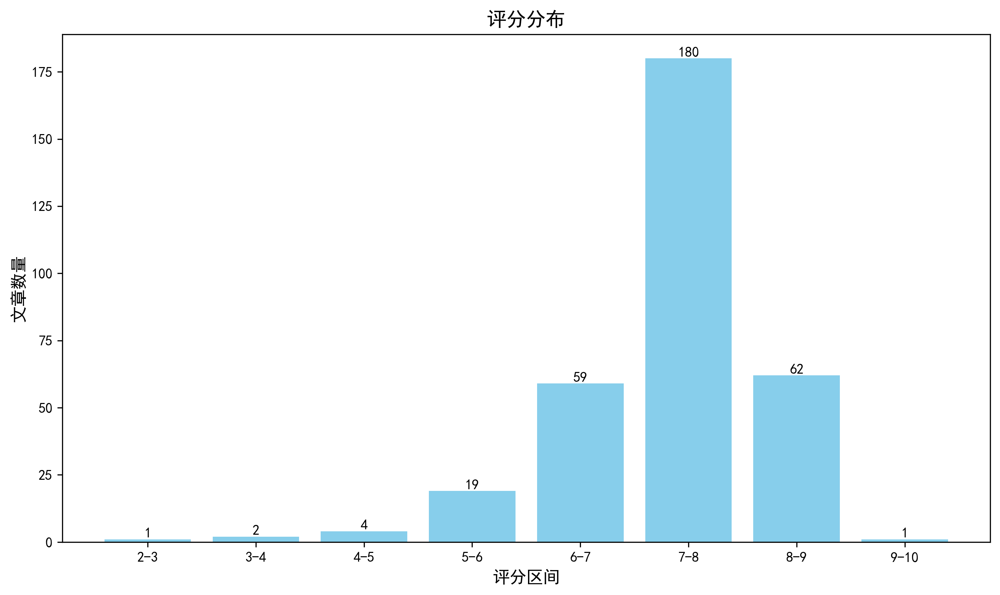

神经科学快讯·第014期 Science Advances：睡眠不足让小鼠“忘记”见过谁，但记忆并未消失 (2026-06-13)
📊 本周概览
- 头条推荐: 1 篇
- 深度解读: 176 篇
- 简要提及: 105 篇
- 跨界启发: 0 篇
- 已过滤: 296 篇
🌏 环球视野

📊 评分分布
| 评分区间 | 文章数量 |
|---|---|
| 2-3 | 1 |
| 3-4 | 2 |
| 4-5 | 4 |
| 5-6 | 19 |
| 6-7 | 59 |
| 7-8 | 180 |
| 8-9 | 62 |
| 9-10 | 1 |
总计: 328 篇评分文章
📈 各领域文章分布
| 领域 | 深度解读 | 简要提及 | 总计 |
|---|---|---|---|
| 系统与环路神经科学 | 53 | 8 | 61 |
| 未知领域 | 0 | 58 | 58 |
| 认知神经科学 | 28 | 6 | 34 |
| 临床与转化神经科学 | 24 | 8 | 32 |
| 分子与细胞神经科学 | 26 | 4 | 30 |
| 感觉与运动神经科学 | 14 | 9 | 23 |
| 计算与理论神经科学 | 15 | 5 | 20 |
| 方法学 | 9 | 3 | 12 |
| 发育神经科学 | 6 | 2 | 8 |
| 社会与情感神经科学 | 1 | 2 | 3 |
合计: 深度解读 176 篇，简要提及 105 篇，共 281 篇
🥇 头条推荐（9.0+分）
Endocytome profiling uncovers cell-surface protein dynamics underlying neuronal connectivity
头条推荐 9.1/10中文标题: 内吞组图谱揭示神经元连接性背后的细胞表面蛋白动力学
作者: Colleen N. McLaughlin, Hui Ji, Katherine X. Dong et al.
单位: Department Of Genetics, Biology, And Chemistry, Chan Zuckerberg Biohub, Stanford University, Stanford, Ca 94305, Usa; Broad Institute Of Mit And Harvard, Cambridge, Ma 02142, Usa; Department Of Biology, Howard Hughes Medical Institute, Stanford University, Stanford, Ca 94305, Usa 等
资深研究者: Hui Ji (h指数=42); Alice Y. Ting (h指数=72)
研究地区: United States
关键词: 蛋白质组学, 内吞分析, 果蝇, 嗅觉神经元, 细胞表面蛋白, 发育
亮点: 首次系统绘制果蝇嗅觉神经元表面蛋白质内吞动态图谱，揭示内吞调控神经连接的新机制。
核心优势: 开创性endocytome profiling技术，结合定量蛋白质组学和遗传学，实现了细胞类型特异性的表面蛋白质动态原位解析。
研究局限: 目前仅以果蝇嗅觉系统为模型，向哺乳动物系统推广需验证，且方法复杂度较高。
目标读者: 发育神经生物学、细胞神经科学、蛋白质组学、系统生物学家以及研究神经连接机制的学者。
推荐理由: 该研究开发了'内吞组分析'方法，在果蝇嗅觉受体神经元中系统性绘制了超过1000种细胞表面蛋白的内吞动态图谱，揭示了发育过程中表面蛋白质组的广泛重塑。这一方法为理解神经元连接性建立的分子机制提供了前所未有的视角，并为其他细胞类型和物种的表观组研究开辟了新途径。
📚 精选文献（按领域分类）
临床与转化神经科学
中文标题: 人脑动脉瘤中的脑血管脆弱性和纤维化
作者: Jerry C. Wang, Chang N. Kim, Ethan A. Winkler
资深研究者: Chang N. Kim (h指数=17); Ethan A. Winkler (h指数=48)
关键词: 单细胞测序, 空间转录组学, 人类, 脑血管, 脑动脉瘤, 纤维化
亮点: 单细胞与空间转录组学揭示脑动脉瘤中血管成纤维细胞激活与髓系炎症的交互作用，为治疗提供新靶点。
核心优势: 首次构建人体脑动脉瘤单细胞图谱，发现血管平滑肌细胞丢失后成纤维细胞替代和特异性巨噬细胞浸润的新病理机制。
研究局限: 缺乏功能验证实验（如动物模型或体外干预），结论主要基于相关性分析。
目标读者: 脑血管疾病研究者、神经病理学家、单细胞和空间转录组学领域专家
推荐理由: 该研究通过单细胞和空间转录组学技术，构建了人脑动脉瘤的细胞图谱，揭示了病理性血管重塑中平滑肌细胞缺失和成纤维细胞激活的关键机制。研究为理解脑动脉瘤的发病基础提供了分子层面的新见解，并为开发针对血管纤维化的治疗策略指明了潜在靶点。
Cryopreservation through vitrification enables functional recovery of the mouse hippocampus.
深度解读 8.6/10中文标题: 通过玻璃化冷冻保存实现小鼠海马的功能恢复
作者: Maya-Romero A, Zoncu R
关键词: 玻璃化冷冻, 低温保存, 小鼠, 海马, 功能恢复, 组织保存
亮点: 首次实现哺乳动物完整脑区玻璃化冷冻后的功能恢复，开辟神经组织保存新方向
核心优势: 证明了完整的海马组织在冷冻-解冻后能恢复电生理功能，是低温生物学和神经科学的里程碑
研究局限: 仅展示海马区急性功能恢复，长期存活和复杂认知功能尚未评估
目标读者: 低温生物学家、神经科学家、再生医学及器官保存领域研究者
推荐理由: 本研究展示了一种玻璃化冷冻技术，成功保存小鼠海马组织的结构完整性和突触功能，并在解冻后恢复神经活动。这一突破为脑组织长期储存和神经移植提供了可行方案，有望推动神经退行性疾病的治疗和组织工程发展。对于转化神经科学领域，该工作兼具方法学创新与临床潜力。
中文标题: 弥漫性中线胶质瘤的预后人脑网络
作者: Jai Sidpra, Valentina Lind, Darren R. Hargrave
资深研究者: Jai Sidpra (h指数=13)
关键词: 弥漫性中线胶质瘤, 人类, 肿瘤网络映射, 全脑, 预后, 功能连接
亮点: 首次在人类活体大脑中绘制弥漫性中线胶质瘤的预后相关网络，揭示肿瘤劫持正常神经环路的新机制。
核心优势: 结合功能连接、生存分析、转录组和手术结局，多维度证实了DMG网络的存在和临床意义。
研究局限: 样本量相对较小（尤其是手术切除获益分析），且网络映射基于静息态fMRI，可能受肿瘤占位效应影响。
目标读者: 神经肿瘤学家、神经影像学家、脑网络研究者、儿童肿瘤临床医生
推荐理由: 本研究首次在活体人脑中构建弥漫性中线胶质瘤的肿瘤网络，揭示了脑肿瘤通过神经元-胶质瘤突触和缝隙连接形成的全脑整合连接，并证明该网络特征具有预后价值。这一发现不仅为致命性儿童脑肿瘤提供了新的生物标志物，也为理解胶质瘤的侵袭机制和开发靶向网络的治疗策略开辟了新方向。
中文标题: 阿尔茨海默病小胶质细胞样细胞中富集的体细胞癌症变异驱动炎症和增殖状态
作者: August Yue Huang, Zinan Zhou, Maya Talukdar et al.
单位: Broad Institute Of Mit And Harvard, Cambridge, Ma, Usa; Division Of Genetics And Genomics And Manton Center For Orphan Diseases, Boston Children'S Hospital, Boston, Ma, Usa; Department Of Pediatrics, Harvard Medical School, Boston, Ma, Usa 等
资深研究者: August Yue Huang (h指数=31); Zinan Zhou (h指数=20)
研究地区: United States
关键词: 阿尔茨海默病, 小胶质细胞, 体细胞突变, 克隆造血, 深度测序, 单细胞核RNA测序
亮点: 揭示阿尔茨海默病小胶质细胞中体细胞癌症驱动变异富集，驱动炎症和增殖状态
核心优势: 首次将体细胞突变（癌症驱动基因和克隆造血）与AD小胶质细胞炎症表型直接关联，多模态验证
研究局限: 因果关系尚未明确，体细胞变异可能为伴随现象，独立队列验证缺失
目标读者: 神经退行性疾病、小胶质细胞生物学、体细胞突变和克隆造血、计算基因组学研究者
推荐理由: 该研究通过深度面板测序和单细胞核RNA测序，首次系统揭示阿尔茨海默病（AD）脑中体细胞癌症驱动基因突变富集于微胶质样细胞，且与克隆造血相关。这些突变赋予细胞炎症和增殖特性，可能加速神经退行性进程。研究为理解AD的微胶质介导神经炎症机制提供了全新视角，并提示外周造血来源的体细胞突变可作为疾病修饰靶点。
中文标题: 氢溴酸山莨菪碱靶向Matk预防缺血性卒中中延迟rtPA溶栓引起的血管源性脑水肿
作者: Song Guo, An-Qing Li, Jian Liu
单位: Liujianpku@Bjmu; Department Of Integration Of Chinese And Western Medicine, School Of Basic Medical Sciences, Peking University, Beijing, China
资深研究者: Jian Liu (h指数=103)
研究地区: China
关键词: 蛋白质组学, 基因芯片, 小鼠, 缺血性脑卒中, 脑水肿, Matk
亮点: 首次揭示Matk-Src信号轴作为山莨菪碱氢溴酸盐靶点，为溶栓后脑水肿提供潜在治疗策略。
核心优势: 多组学筛选结合体内外实验，鉴定Matk为全新药物靶点，并阐明其调控血管源性水肿的分子机制。
研究局限: 仅基于小鼠模型，缺乏大动物及临床验证；Matk稳定性调控的具体细节尚不完整。
目标读者: 卒中神经科学、脑血管病、药物靶点发现与转化医学研究者
推荐理由: 该研究首次揭示山莨菪碱通过靶向Matk保护血脑屏障，为延迟rtPA溶栓后血管源性脑水肿提供了首个药理干预策略。通过蛋白质组学与基因芯片筛选锁定关键靶点，机制清晰且临床转化潜力明确，对卒中治疗领域具有重要价值。
中文标题: 精神分裂症前脑类器官中的蛋白质状态失调和性别特异性神经发育特征
作者: Bogetofte, H., Schmidt, S. I., Sejberg Oehlenschlaeger, M. et al.
关键词: 类脑器官, 多组学, 精神分裂症, 性别差异, 蛋白质组, 翻译后修饰
亮点: 蛋白状态失调而非转录组变化揭示精神分裂症神经发育的性别特异性分子特征
核心优势: 大规模多组学类器官研究，首次系统证明蛋白磷酸化等翻译后修饰是精神分裂症早期神经发育异常的主要编码层
研究局限: 基于体外类器官模型，无法完全模拟体内环境；样本量虽较大但种族等混杂因素未充分控制；缺乏功能验证或因果性证据
目标读者: 精神分裂症研究者、发育神经生物学、蛋白质组学、系统生物学、计算神经科学研究者
推荐理由: 本研究利用来自17名精神分裂症患者和17名对照的背侧前脑类器官，整合单核转录组、蛋白质组、代谢组和翻译后修饰分析，揭示了精神分裂症中蛋白质状态的失调以及性别特异性的神经发育分子特征。该工作为理解遗传风险如何影响人脑早期发育提供了多层次分子图谱，并为精神疾病的性别差异机制研究开辟了新路径。
中文标题: 欧洲血统个体定量测量广泛性焦虑症状的全基因组荟萃分析
作者: Megan Skelton, Brittany L. Mitchell, Thalia C. Eley
资深研究者: Megan Skelton (h指数=12); Brittany L. Mitchell (h指数=22)
关键词: GWAS, meta分析, 多基因评分, 广泛性焦虑, 人类, 跨祖先验证
亮点: 大规模定量GWAS揭示广泛性焦虑症状的遗传架构和跨种族多基因预测
核心优势: 样本量巨大（693,869人），发现39个新位点，并通过跨祖先多基因评分验证遗传预测效力
研究局限: 仅欧洲血统人群分析，定量测量队列间异质性，因果机制未深入探索
目标读者: 焦虑遗传学、精神基因组学、计算生物学和精准精神病学研究者
推荐理由: 这项大规模基因组关联研究对近70万欧洲个体的广泛性焦虑症状进行了meta分析，鉴定出80个独立变异和74个相关位点，其中39个为新发现。通过多祖先验证，证明了多基因评分在不同人群中的普适性。研究将焦虑症状连续谱系的遗传架构与临床障碍联系起来，为理解焦虑的生物学基础和治疗靶点提供了重要参考。
Corticostriatal connectivity in monozygotic twin pairs discordant for obsessive-compulsive disorder.
深度解读 7.9/10中文标题: 强迫症不一致的单卵双生子对中的皮质纹状体连接性
作者: Beucke JC, May L, Diez I et al.
关键词: 强迫症, 双胞胎, 皮质-纹状体连接, fMRI, 人类, 遗传与环境
亮点: 利用单卵双胞胎不一致设计，揭示强迫症患者皮质-纹状体连接性的特异性异常，控制遗传混淆。
核心优势: 采用单卵双胞胎不一致设计，有效控制遗传因素，增强因果推断。
研究局限: 样本量可能有限，且仅关注皮质-纹状体环路，忽略其他相关环路。
目标读者: 临床神经科学、精神影像学、强迫症基础与转化研究者
推荐理由: 该研究利用同卵双胞胎不一致对设计，有效控制了遗传背景，揭示了强迫症患者皮质-纹状体环路连接异常的特异性环境贡献。为理解OCD的神经病理机制和开发影像学标志物提供了新视角，对临床转化具有重要价值。
中文标题: 使用深度神经集成进行语音的神经解码
作者: Yoon, S., Avansino, D. T., Madugula, S. et al.
关键词: 脑机接口, 深度集成学习, 语音解码, 计算建模, 人类, 实时系统
亮点: 首次在实时语音脑机接口中闭环验证深度集成方法的有效性，并提出计算高效的伪集成方案
核心优势: 首次在人体内闭环验证深度集成对语音解码的实时增益，并引入资源高效的伪集成方法
研究局限: 样本量有限（4名参与者），实时增益的长期稳定性和泛化性有待进一步验证
目标读者: 脑机接口、计算神经科学、语音解码和机器学习研究者
推荐理由: 本研究系统性地评估了深度集成方法在语音脑机接口解码中的潜力，展示了多模型集成在提升准确率方面的显著优势，并探讨了计算资源与实时部署的权衡。尽管尚未在在线闭环系统中验证，但其提供的基准和约束分析为未来临床级语音BCI的设计提供了重要参考，尤其适合关注脑机接口算法优化与转化应用的读者。
中文标题: 多模态大脑测量与精神病理学领域之间的不同关联预测青少年功能
作者: Ramduny, J., Mulvey, A. G., Kohler, R. et al.
关键词: 多模态MRI, 人类, 青少年, 精神病理学, 正则化典型相关分析, 皮质纹状体网络
亮点: 大规模多模态脑测量与精神病理学域的整合分析，揭示两种脑-行为共变模式并预测青少年功能
核心优势: 利用ABCD Study大样本（n=5408）和正则化典型相关分析，同时整合结构、微结构和功能测量，识别出精神病理学研究的新关联模式。
研究局限: 预印本缺乏详细的交叉验证和多重比较校正描述；结果可能受样本偏差影响，且因果推断有限。
目标读者: 发展认知神经科学、精神影像学、计算精神病学和青少年心理健康研究者
推荐理由: 该研究利用ABCD大型队列（n=5408），通过多模态脑测量（结构、微结构、功能）与正则化典型相关分析，系统揭示了皮质纹状体、皮质边缘和执行控制网络与精神病理学维度间的关联，并验证了这些关联对未来社会心理功能的预测价值。其整合性框架为理解青少年精神疾病的大脑基础提供了新视角，也为发展基于影像的预测工具奠定了基础。
中文标题: Aβ聚集体在阿尔茨海默病脑中结合U1剪接体核糖核蛋白
作者: Tao, Y., Francis, A. E., Liu, W. et al.
关键词: 阿尔茨海默病, Aβ聚集体, U1 snRNP, 剪接异常, 人类, 蛋白质组学
亮点: 首次发现Aβ聚集体直接结合U1 snRNP，为阿尔茨海默病中Aβ与剪接体功能障碍之间提供直接联系。
核心优势: 多模态证据（免疫沉淀、深度测序、免疫电镜、RNA原位杂交）证实Aβ纤维与U1 snRNP的物理结合，并定位于斑块边缘。
研究局限: 结合仅见于部分斑块，功能后果未直接验证，且与tau-U1相互作用的相对贡献尚未厘清。
目标读者: 阿尔茨海默病研究者、神经病理学家、RNA剪接和蛋白质聚集领域专家
推荐理由: 该研究揭示了Aβ聚集体直接结合U1 snRNP这一关键剪接复合体，为阿尔茨海默病中的异常剪接提供了新的分子机制。通过生化与蛋白质组学方法，作者发现Aβ而非tau是导致U1 snRNP不溶性与功能紊乱的主要因素，挑战了传统观点，并为AD的病理机制和潜在治疗靶点开辟了新方向。对神经退行性疾病研究者具有重要启示。
中文标题: 靶向cGAS-STING通路减轻亨廷顿病敲入小鼠模型的病理发生
作者: Kesharwani A, Dagar S, Zuniga I et al.
关键词: cGAS-STING通路, 亨廷顿病, 神经炎症, 基因敲入小鼠, 纹状体, 治疗靶点
亮点: 靶向固有免疫cGAS-STING通路为亨廷顿病治疗提供新策略
核心优势: 首次在亨廷顿病敲入小鼠模型中验证cGAS-STING通路抑制的神经保护作用
研究局限: 机制细节和临床转化路径仍需进一步阐明，目前仅在单一动物模型中验证
目标读者: 神经退行性疾病、神经免疫学、小鼠模型研究者
推荐理由: 该研究首次在亨廷顿病敲入小鼠模型中证明，靶向cGAS-STING通路可显著减轻病理和行为表型。通过抑制这一固有免疫通路，减少了神经炎症和突变HTT蛋白聚集，为HD治疗提供了全新靶点。研究结合分子、细胞和行为学方法，机制清晰，转化潜力明确，对神经退行性疾病的抗炎策略具有重要启发。
中文标题: 脑选择性雌激素疗法在雄性和雌性狨猴中部分对抗芳香化酶抑制对脑和行为的不良影响
作者: Cournoyer H, Monroy Duenas A, Bharadwaj A et al.
关键词: 非人灵长类, 狨猴, 雌激素, 芳香化酶抑制, 性二态, 行为学
亮点: 首次在非人灵长类中验证脑选择性雌激素疗法对芳香化酶抑制引起的脑和行为负面效应的部分保护作用，并揭示性别差异
核心优势: 采用脑选择性给药策略，避免全身性副作用，并在雄性和雌性狨猴中系统比较，提供了性激素调节认知和情绪的新证据
研究局限: 仅部分对抗效应，机制不完整；样本量可能有限；长期效应和转化潜力需进一步验证
目标读者: 神经内分泌学、行为神经科学、生殖医学、灵长类动物模型研究者
推荐理由: 本研究利用雄性/雌性狨猴模型，发现脑选择性雌激素疗法能部分逆转芳香化酶抑制对大脑和行为的不利影响。研究同时关注性别差异，为理解雌激素的神经保护机制及临床芳香化酶抑制剂引发的神经精神副作用管理提供了重要的转化依据，具有明确的临床相关性。
中文标题: 通过可微模拟类朊病毒传播实现tau蛋白扩增速率的空间分辨映射
作者: Kondo, Y., Naoki, H.
关键词: tau PET, 可微仿真, 反应-扩散模型, 逆向问题, 阿尔茨海默病, 全脑
亮点: 结合可微模拟和深度学习，从tau PET数据中解码脑区特异性传播速率
核心优势: 首次实现全脑体素级tau放大率的推断，揭示了静态PET无法捕获的区域易感性
研究局限: 依赖模型假设（反应扩散）和单一模态数据，缺乏直接生物学验证
目标读者: 计算神经科学家、神经影像学家、神经退行性疾病研究者
推荐理由: 本研究提出了一种可微分反应-扩散框架，能够从tau PET数据中直接推断全脑尺度的空间异质性tau扩增率。通过将MRI约束的前向模拟与误差反向传播相结合，该工作攻克了神经退行性疾病中病理传播动力学的逆问题，为理解tau蛋白病异质性机制和预测个体化进展提供了全新工具。
中文标题: 实验性创伤性脑损伤后海马 theta-gamma 耦合和锋场相干性的破坏
作者: Adam CD, Mirzakhalili E, Gagnon KG et al.
关键词: 电生理, 海马, 神经振荡, 创伤性脑损伤, 小鼠, theta-gamma耦合
亮点: 揭示创伤性脑损伤后海马theta-gamma耦合与锋电位-场电位相干性的同步失调，为TBI导致认知功能障碍提供新的电生理标志。
核心优势: 首次在实验性TBI模型中系统评估theta-gamma耦合和spike-field相干性的动态变化，揭示神经网络振荡的新损伤机制。
研究局限: 仅基于单一脑损伤模型和急性期记录，长期可塑性和行为相关性尚未充分验证。
目标读者: 神经创伤、海马电生理、神经网络动力学和认知障碍研究者
推荐理由: 该研究在创伤性脑损伤（TBI）模型中发现海马theta-gamma振荡耦合及棘波-场相干性显著中断，揭示了TBI后认知缺陷潜在的环路机制。通过电生理记录和分析，作者展示了神经振荡协调的受损如何影响信息处理，为开发干预策略提供了新的靶点。对于关注神经疾病中环路动力学变化的读者具有重要参考价值。
中文标题: 肌萎缩侧索硬化中的发育性环路不稳定性：从过度兴奋到网络崩溃
作者: Donati Della Lunga I, Cerutti L, Barabino V et al.
关键词: ALS, 过度兴奋, 环路不稳定性, 突触可塑性, 运动皮层, 电生理
亮点: 从发育性回路不稳定性角度整合ALS的机制，提出从高兴奋性到网络崩溃的动态观点
核心优势: 系统梳理了ALS中回路不稳定的时间演变，连接了细胞和网络层面的发现
研究局限: 缺乏对具体分子机制的深入解析，可能过于概括
目标读者: 神经退行性疾病研究者、临床神经科学家、发育神经生物学家
推荐理由: 该研究聚焦肌萎缩侧索硬化症（ALS）的发育性环路机制，提出从早期过度兴奋到后期网络崩溃的疾病演化模型。通过整合电生理记录和网络动力学分析，揭示了突触可塑性在疾病不同阶段的矛盾作用：最初代偿性增强后期却加剧网络失稳。这一发现挑战了将过度兴奋简单视为病理标志的传统观点，为理解ALS的病程动力学提供了新框架，并提示早期干预突触可塑性可能扭转疾病轨迹。
中文标题: T2Pdecoder：从转录组数据实现以蛋白质为中心的分析
作者: Hui Wang, Jihong Tang, Jiguang Wang
单位: Division Of Life Science, Department Of Chemical And Biological Engineering, State Key Laboratory Of Nervous System Disorders, The Hong Kong University Of Science And Technology, Hong Kong Sar, China; Jgwang@Ust
资深研究者: Hui Wang (h指数=113); Jihong Tang (h指数=16)
研究地区: China
关键词: 深度学习, 多组学整合, 蛋白质预测, 胶质瘤, IDH突变, 转录组学
亮点: 多组学深度学习从转录组预测全蛋白组，推动癌症蛋白质功能研究
核心优势: 创新性整合RNA与蛋白质的共享嵌入空间，实现从转录组数据预测广泛蛋白质丰度，并在胶质瘤中验证其功能亚群发现能力。
研究局限: 性能提升幅度有限（仅适度改进），主要基于胶质瘤数据集，跨癌症类型和组织的泛化性未经充分验证。
目标读者: 计算生物学、癌症蛋白质组学、神经肿瘤学研究者
推荐理由: T2Pdecoder利用深度学习整合多组学数据，从转录组中预测全蛋白质组丰度，有效解决了RNA-蛋白弱相关难题。该模型在IDH突变胶质瘤中验证，为理解肿瘤生物学和开发新标志物提供了计算工具，有望加速精准神经肿瘤学研究。
Sleep EEG Signal Criticality as a Non-Invasive Predictor of Cognitive Decline in Dementia
深度解读 7.3/10中文标题: 睡眠EEG信号临界性作为痴呆认知衰退的非侵入性预测指标
作者: Stanisław Narębski, Tomasz Komendziński, Tomasz M. Rutkowski
资深研究者: Tomasz Komendziński (h指数=7); Tomasz M. Rutkowski (h指数=23)
关键词: EEG, MFDFA, 非线性动力学, 人类, 睡眠, 认知衰退
亮点: 睡眠脑电临界态动力学作为认知衰退的非侵入性生物标志物
核心优势: 首次将MFDFA量化临界态与纵向队列结合，揭示睡眠EEG预测痴呆的潜力
研究局限: 样本仅限老年女性，缺乏独立验证队列，未与金标准生物标志物对比
目标读者: 计算神经科学、睡眠研究、阿尔茨海默病早期诊断研究者
推荐理由: 该研究创新地将睡眠EEG信号的临界性（通过多重分形去趋势波动分析量化）作为认知衰退的非侵入式预测指标。利用大型纵向队列，揭示了基线睡眠脑动力学的组间差异，为痴呆症的早期预警提供了新的电生理标志物，并展示了非线性动力学在临床转化中的潜力。
Septin multimer autoantibodies in severe motor neuropathy mimicking lower motor neuron disease.
深度解读 7.2/10中文标题: 重度运动神经病中模拟下运动神经元疾病的Septin多聚体自身抗体
作者: Arlt FA, Miske R, Appeltshauser L et al.
关键词: 自身抗体, 运动神经病, 七聚体, 人类, 生物标志物, 神经免疫
亮点: 首次发现septin多聚体自身抗体作为严重运动神经病的新型生物标志物和治疗靶点
核心优势: 识别了新的自身抗体靶点，为诊断和治疗提供潜在新方向
研究局限: 样本量可能有限，缺乏功能验证和机制深入探讨
目标读者: 神经免疫学家、运动神经元病临床研究者、自身抗体诊断开发人员
推荐理由: 该研究在严重运动神经病患者中鉴定出Septin多聚体自身抗体，为模拟下运动神经元疾病的鉴别诊断提供了新的血清学标志物。Septin作为细胞骨架蛋白，其自身抗体可能揭示新的致病机制，对理解自身免疫性运动神经病的发病和靶向治疗具有重要转化价值。
中文标题: DCPS通过P-body介导的RNA衰变调节TDP-43相关的神经退行性变
作者: Yingzhi Ye, Zhe Zhang, Yu Xiao et al.
单位: Brain Science Institute, Johns Hopkins University School Of Medicine, Baltimore, Md 21205, Usa; Department Of Physiology, Pharmacology & Therapeutics, Johns Hopkins University School Of Medicine, Baltimore, Md 21205, Usa; Cellular And Molecular Physiology Graduate Program, Johns Hopkins University School Of Medicine, Baltimore, Md 21205, Usa 等
资深研究者: Chuan He (h指数=161); Shuying Sun (h指数=32)
研究地区: United States
关键词: CRISPRi筛选, 人类神经元, TDP-43, RNA decay, P-body, ALS/FTD
亮点: 发现DCPS通过调控P-body介导的RNA降解成为TDP-43蛋白病的潜在治疗靶点
核心优势: 首次将DCPS鉴定为TDP-43功能缺失的修饰因子，并揭示P-body在TDP-43神经毒性中的核心作用
研究局限: 主要基于体外人神经元模型，缺乏体内和患者验证；DCPS作为治疗靶点的可行性未在动物模型中评估
目标读者: 神经退行性疾病研究者、RNA生物学和P-body研究者、药物开发人员
推荐理由: 本研究通过CRISPRi筛选首次发现DCPS是TDP-43功能缺失的关键遗传修饰因子。DCPS通过调控P-body介导的RNA降解，影响TDP-43蛋白病相关的神经毒性。这一发现不仅揭示了TDP-43致病的新机制——将RNA代谢异常与神经退行直接关联，还为ALS/FTD等疾病提供了极具转化潜力的治疗靶点。对理解TDP-43病理及其在多种神经退行性疾病中的共性机制具有重要意义。
Differential brain response to a highly palatable drink in chronic low-back pain patients.
深度解读 7.2/10中文标题: 慢性腰痛患者对高适口性饮料的差异化脑反应
作者: Mahlen C, Mreydem H, de Araujo I et al.
关键词: fMRI, 人类, 慢性疼痛, 奖赏环路, 肥胖, 食物渴求
亮点: 挑战传统奖励假说，揭示慢性痛患者对美味食物的抑制控制缺陷
核心优势: 直接测试了慢性痛患者对美味食物的脑反应，发现奖赏回路无差异而控制回路异常，提供新的机制方向
研究局限: 样本量较小，统计多重比较控制不明确，缺乏因果推断
目标读者: 疼痛研究者、肥胖研究者、神经影像学家
推荐理由: 本研究通过功能磁共振成像发现慢性腰痛患者对高适口性饮料的大脑反应改变，尤其是奖赏相关脑区活动异常，为慢性疼痛与肥胖共病提供了新的神经机制解释。该工作提示疼痛管理需关注饮食行为调控，并可能推动基于脑刺激或认知干预的联合治疗策略。
中文标题: 目标血浆蛋白质组学揭示上调的TNFRSF蛋白在HIV相关中风中的核心作用
作者: Tailin Chen, Haijiang Lin, Na He
单位: School Of Public Health, And Key Laboratory Of Public Health Safety Of Ministry Of Education, Fudan University, Shanghai, China; Nhe@Fudan; Taizhou City Center For Disease Control And Prevention, Taizhou, Zhejiang Province, China
研究地区: China
关键词: 血浆蛋白质组学, 人类, HIV, 中风, TNFRSF, 炎症
亮点: 血浆蛋白质组学揭示TNFRSF蛋白在HIV相关中风中的核心上调作用
核心优势: 多组匹配病例对照和纵向验证设计，确认TNFRSF蛋白与中风风险的稳定关联
研究局限: 基于关联分析，缺乏因果验证和深入机制阐释
目标读者: 神经免疫学、脑血管疾病、HIV感染研究及蛋白质组学研究者
推荐理由: 该研究通过靶向血浆蛋白质组学，在HIV感染者中鉴定出TNFRSF蛋白家族（如TNFRSF1A、TNFRSF1B）的上调与中风风险显著相关，揭示了连接慢性免疫激活与脑血管事件的分子桥梁。工作不仅为HIV相关中风的早期预警和预防提供了可检测的循环生物标志物，也为理解普通人群中免疫-血管交互作用在中风发生中的角色开辟了新视角。对从事临床神经免疫和血管生物学的研究者具有重要参考价值。
Genome-wide association study of cocaine self-administration behavior in Heterogeneous Stock rats
深度解读 7.2/10中文标题: 异质性Stock大鼠可卡因自我给药行为的全基因组关联研究
作者: Montana Kay Lara, Lieselot L. G. Carrette, Olivier George
单位: Department Of Psychiatry, University Of California San Diego, La Jolla, Ca, Usa; Olgeorge@Health
资深研究者: Lieselot L. G. Carrette (h指数=16); Olivier George (h指数=47)
研究地区: United States
关键词: GWAS, 大鼠, 可卡因自我给药, 遗传度, 成瘾
亮点: 最大规模的大鼠可卡因自我给药GWAS，发现与人类CES1同源的羧酸酯酶基因及其非同义变异，为可卡因使用障碍的遗传基础和潜在药物靶点提供新见解。
核心优势: 最大的大鼠可卡因自我给药遗传研究，识别了与人类GWAS一致的基因，并揭示羧酸酯酶作为潜在干预靶点。
研究局限: 样本量相对较小（836），缺乏独立复制和功能验证，证据强度有限。
目标读者: 成瘾遗传学、神经药理学、计算生物学和药物开发研究者
推荐理由: 该研究利用异质性Stock大鼠进行GWAS，系统考察了可卡因自我给药的多个行为表型（获取、升级、强迫样应答），发现六个全基因组显著关联位点，揭示了成瘾相关行为的遗传基础。方法严谨，表型维度丰富，为理解可卡因使用障碍的分子机制提供了重要的遗传学线索，也为后续基因功能验证和行为表型精细解析奠定了坚实基础。
中文标题: 早期精神病中症状维度特异性的神经递质与精神病理学和认知的相关性
作者: Wang, H. R., Schleifer, C. H., Liu, Z.-Q. et al.
关键词: PLSc, 人类, 全脑, 静息态功能连接, 早期精神病, 神经递质
亮点: 跨模态关联揭示早期精神病阴性症状和认知障碍的胆碱能/去甲肾上腺素能靶点
核心优势: 首次将早期精神病症状维度的功能连接模式与多个神经递质系统分布进行系统关联
研究局限: 样本量较小，功能连接与解剖学结果在受体关联上不一致，可能受混淆因素影响
目标读者: 精神疾病神经影像、神经递质成像、早期精神病治疗研究者
推荐理由: 本研究利用偏最小二乘相关分析（PLSc）将早期精神病患者的症状维度与全脑神经递质系统图谱相关联，揭示了特定症状（如阴性症状）与多巴胺、血清素等递质系统的空间对应关系。这一方法学框架不仅为理解精神病症状的神经化学基础提供了新视角，更重要的是直接指向了基于症状维度的精准药物靶点开发，有望缩短未治疗精神病期（DUP）并改善治疗匹配度。
中文标题: 通过EEG信号临界性进行深度睡眠分类：一种用于改善睡眠神经反馈的被动BCI方法
作者: Stanisław Narębski, Tomasz Komendziński, Tomasz M. Rutkowski
资深研究者: Tomasz Komendziński (h指数=7); Tomasz M. Rutkowski (h指数=23)
关键词: EEG, 睡眠分期, 临界性, DFA, 机器学习, 神经反馈
摘要: 基于EEG临界性特征的深睡高精度识别，为被动脑机接口神经反馈提供可靠状态检测引擎。
优势: 利用大规模老年女性数据集和多种分类器比较，证明了基于DFA临界性特征结合朴素贝叶斯分类器在深睡检测中的优越性能。 局限: 数据集仅包含老年女性，缺乏对不同年龄性别和睡眠障碍人群的泛化验证；DFA特征在睡眠分期中并非首创。 受众: 睡眠神经科学、脑机接口、计算神经科学和临床神经生理学研究者。
中文标题: 急性间歇性低氧和急性间歇性高碳酸低氧诱发慢性脊髓损伤患者的皮质-膈肌可塑性
作者: Bogard AT, Mir MJ, Sutor TW et al.
关键词: 急性间歇性缺氧, 高碳酸血症, 膈肌, 皮质脊髓可塑性, 脊髓损伤, MEP
摘要: 在慢性脊髓损伤患者中，急性间歇性高碳酸低氧（AIHH）增强膈肌皮质脊髓可塑性的随机双盲证据
优势: 首个比较AIH和AIHH对SCI患者膈肌皮质脊髓兴奋性的随机双盲交叉研究，具有临床转化潜力 局限: 样本量小（n=10），且仅包括颈胸段损伤，需更大样本和长期随访验证 受众: 脊髓损伤康复、呼吸神经生理学、神经可塑性研究者
中文标题: 脑小血管病的白质微观结构指纹
作者: Bussy A, Cathala C, Carneiro F et al.
摘要: 应用扩散MRI指纹技术刻画脑小血管病的白质微结构特征
优势: 首次系统构建CSVD白质微结构指纹，整合多模态扩散指标 局限: 缺乏纵向验证及病理学关联，样本量可能有限 受众: 神经影像学、脑血管病、白质生物学研究者
中文标题: 利用常规数据在资源受限环境下重建与预测阿尔茨海默病患者的疾病轨迹
作者: Ratnadeep Das, Atri Chatterjee, Sitikantha Roy
摘要: 基于常规临床数据实现阿尔茨海默病认知轨迹的双向重建与不确定性预测
优势: 集成GRU、Neural ODE和VAE，无需昂贵成像/生物标志物即可进行连续时间点的插值和外推，同时提供校准的不确定性估计。 局限: 使用单一ADNI数据集且缺乏与先进方法的充分对比，预测误差在临床可接受范围内仍较大；未进行跨数据集外部验证。 受众: 计算神经科学、阿尔茨海默病临床流行病学、医学人工智能研究者
中文标题: 生命边缘的多分形人类信号揭示心脑负相关
作者: Yago Emanoel Ramos, Maria Eloá do Ó, Henrique Ferraz de Arruda et al.
资深研究者: Mauro Copelli (h指数=30); Pedro V. Carelli (h指数=17)
摘要: 濒死时心脏与脑活动多重分形谱呈负相关，揭示体脑系统去整合动态
优势: 首次在人类终末阶段发现神经与心脏多重分形谱宽度呈反向变化，提示生理系统分层协调的崩溃 局限: 预印本，样本量未知，缺乏对照组，未见多模态验证及统计细节 受众: 非线性动力学与濒死生理学、系统神经科学研究者
中文标题: Spider-MS：多发性硬化症预后的个体化多面体预测
作者: Tur C, Susin-Calle S, Otero-Romero S et al.
摘要: 个性化多面体模型预测MS预后，整合多维临床数据
优势: 提出整合多维度临床数据的个性化预后预测模型，具有临床实用潜力 局限: 模型需大规模外部验证，当前证据有限，临床转化尚需时日 受众: 神经病学家、多发性硬化研究者、计算医学专家
中文标题: 运动诱导的汗液抑制小鼠抑郁样行为
作者: Yao, H., Xing, S., Liang, M. et al.
摘要: 运动后汗液可作为新型抗抑郁生物活性干预物
优势: 首次提出并验证运动诱导汗液具有抗抑郁效应，为抑郁症治疗提供新思路 局限: 汗液成分未鉴定，机制不清，仅依赖一个动物模型且样本量不足，缺乏严谨对照 受众: 抑郁症研究者、运动医学专家、神经免疫学学者
中文标题: 基于脑电图和功能性近红外光谱的抑郁状态分类的端到端机器学习
作者: Riki Sakurai, Simon Kojima, Mihoko Otake-Matsuura et al.
资深研究者: Tomasz M. Rutkowski (h指数=23)
摘要: 基于EEG和fNIRS的抑郁状态分类pilot框架
优势: 探索了多模态生物信号在抑郁检测中的初步可行性 局限: 样本量极小（仅11名健康受试者），缺乏临床验证，无法推广 受众: 计算精神病学、生物信号处理、情感计算研究者
分子与细胞神经科学
中文标题: 来自血液和颅骨骨髓的脑植入单核细胞衍生巨噬细胞表现出不同的特性
作者: Siling Du, Feiya Ou, Antoine Drieu et al.
单位: Louis, Mo, Usa; Louis School Of Medicine, St; Department Of Pathology And Immunology, Washington University In St 等
资深研究者: Marco Colonna (h指数=171); Jonathan Kipnis (h指数=88)
研究地区: United States, France
关键词: 单核细胞来源巨噬细胞, 小胶质细胞, 谱系示踪, 多组学, 脑实质, 骨髓嵌合体
亮点: 系统揭示脑实质巨噬细胞的双重起源（血液和颅骨骨髓）及其功能异质性，挑战小胶质细胞仅来自卵黄囊的传统观点
核心优势: 综合运用谱系追踪、多组学、联体共生和颅骨移植等多种技术，首次证明血液和颅骨骨髓来源的巨噬细胞在脑实质定居并促进脱髓鞘，具有里程碑意义。
研究局限: 基于小鼠模型，人类中的保守性和功能意义尚待验证；MDM的长期维持和命运追踪仍需进一步研究。
目标读者: 神经免疫学、神经退行性疾病（尤其是脱髓鞘疾病）、小胶质细胞生物学和发育神经生物学研究者
推荐理由: 本研究通过谱系示踪、药理学耗竭和多组学分析，系统比较了脑内单核细胞来源巨噬细胞与卵黄囊来源小胶质细胞的转录组和表观基因组差异。尽管共享脑实质微环境，两者仍保持独特的身份和功能特征。这一发现为理解脑驻留巨噬细胞的异质性、疾病状态下的免疫重塑以及治疗靶点开发提供了重要基础。
中文标题: 全基因组复制塑造了脊椎动物大脑的细胞类型演化
作者: Yuanzhen Zhu, Shuai Zhang, Sebastian M. Shimeld
资深研究者: Shuai Zhang (h指数=50); Sebastian M. Shimeld (h指数=42)
关键词: 单细胞转录组, 全基因组复制, 脊椎动物, 细胞类型演化, 比较基因组学, 文昌鱼
亮点: 跨五个脊索动物脑单细胞转录组揭示全基因组复制驱动细胞类型演化
核心优势: 在大尺度进化框架下，结合单细胞转录组和祖先状态预测，系统证明ohnologues在脊椎动物脑细胞多样化中的关键作用
研究局限: 实验验证仅聚焦于macroglia，其他细胞类型的机制仍需深入；祖先状态预测的准确性依赖于模型假设
目标读者: 进化发育神经生物学、单细胞基因组学、比较基因组学和脊椎动物脑演化研究者
推荐理由: 本研究通过比较五个脊索动物（人类、小鼠、蜥蜴、七鳃鳗、文昌鱼）的脑单细胞转录组，系统揭示了早期脊椎动物全基因组复制事件如何驱动新细胞类型的产生。研究发现许多脊椎动物特有的细胞类型家族并非与文昌鱼一一对应，而来源于WGD产生的ohnologues基因，尤其是第一轮复制。这项工作为理解脑复杂性演化的分子机制提供了重要框架，并对细胞类型分类和神经发育研究具有深远影响。
Native AMPA receptor architecture reveals SynDIG4 engagement and auxiliary subunit heterogeneity
深度解读 8.3/10中文标题: 天然AMPA受体结构揭示SynDIG4结合和辅助亚基异质性
作者: Chengli Fang, Eric Gouaux
资深研究者: Eric Gouaux (h指数=86)
关键词: 冷冻电镜, AMPA受体, 辅助亚基, 突触可塑性, SynDIG4, 结构异质性
亮点: 天然AMPA受体复合物的冷冻电镜结构揭示了SynDIG4的结合和辅助亚基的异质性
核心优势: 首次解析天然AMPA受体与SynDIG4的复合物结构，揭示了辅助亚基组成的多样性和新的调控机制
研究局限: 结构主要来自异源表达或组织样品，缺乏在神经元中的原生环境验证，功能后果有待进一步研究
目标读者: 结构生物学家、突触神经科学家、离子通道研究者
推荐理由: 该研究通过冷冻电镜解析了天然AMPA受体的完整结构，揭示了SynDIG4蛋白与受体的直接结合以及辅助亚基的异质性组装。这一发现不仅深化了我们对谷氨酸受体复合物多样性的理解，也为阐明突触传递和可塑性的分子基础提供了关键结构信息，是分子神经科学领域的重要进展。
中文标题: 衰老大脑中的表观遗传噪声：调节神经元对神经退行性变的脆弱性
作者: Xinyang Yin, Houchun Zhang, Ru Zhang et al.
单位: Key Laboratory Of Spine And Spinal Cord Injury Repair And Regeneration Of Ministry Of Education, Tongji Hospital Affiliated To Tongji University, Frontier Science Center For Stem Cell Research, School Of Life Sciences And Technology, Tongji University, Shanghai 200092, China; Institute For Regenerative Medicine, State Key Laboratory Of Cardiology And Medical Innovation Center, Shanghai East Hospital, Frontier Science Center For Stem Cell Research, School Of Life Sciences And Technology, Tongji University, Shanghai 200092, China; Shanghai Key Laboratory Of Signaling And Disease Research, School Of Life Sciences And Technology, Tongji University, Shanghai 200092, China 等
资深研究者: Yujun Hou (h指数=20)
研究地区: China
关键词: 表观遗传学, 衰老, 神经退行性疾病, 单细胞表观基因组学, DNA甲基化, 小鼠
亮点: 系统综述表观遗传噪音在衰老大脑中调控神经元脆弱性的机制，并展望稳定表观基因组的治疗策略
核心优势: 整合单细胞和空间表观组学前沿证据，将年龄相关的表观遗传噪音与选择性神经元易感性紧密联系
研究局限: 覆盖范围较广，对特定分子机制深度不足，缺乏定量比较或元分析
目标读者: 神经退行性疾病、衰老表观遗传学、单细胞组学研究者
推荐理由: 该研究系统阐述了衰老如何通过积累表观遗传噪声（如DNA甲基化紊乱、组蛋白修饰波动）破坏转录保真度与神经元身份稳定性，从而增加神经退行性疾病的易感性。文章结合单细胞与空间表观基因组学的最新进展，为理解年龄依赖性神经退行性变提供了全新的分子框架，并提示表观遗传修复可能成为干预靶点。对关注脑衰老机制与神经退行性疾病起源的研究者具有重要参考价值。
中文标题: APP通过溶酶体胞吐作用在核废物清除中的保护作用
作者: Dougnon G, Otsuka T, Nakamura Y et al.
关键词: APP, 溶酶体胞吐, 核废物清除, 阿尔茨海默病, 细胞模型, 免疫荧光
亮点: 揭示APP在核废物清除中的保护作用，为阿尔茨海默病机制提供新视角
核心优势: 首次阐明APP通过溶酶体胞吐参与核废物清除，拓宽了APP生理功能的理解
研究局限: 缺乏体内功能性验证及详细机制解析，可能依赖体外模型
目标读者: 神经退行性疾病研究者、细胞生物学家、溶酶体生物学研究者
推荐理由: 该研究揭示了APP在细胞核废物清除中的新功能，通过介导溶酶体胞吐途径保护细胞免受核内有害物质积累。这一发现不仅深化了对APP生理功能的理解，也为阿尔茨海默病等神经退行性疾病的治疗提供了潜在靶点，提示清除功能障碍可能是疾病发生的关键机制。
中文标题: 随机错误折叠驱动不同α-突触核蛋白菌株的出现
作者: Raphaella W.L. So, Benedikt Frieg, José D. Camino et al.
单位: Ernst Ruska Centre, Er-C-3 Structural Biology, Forschungszentrum Jülich, 52425 Jülich, Germany; Tanz Centre For Research In Neurodegenerative Diseases, University Of Toronto, Toronto, On M5T 0S8, Canada; Department Of Biochemistry, Temerty Faculty Of Medicine, University Of Toronto, Toronto, On M5S 1A8, Canada
资深研究者: Benedikt Frieg (h指数=17); Gunnar F. Schröder (h指数=49)
研究地区: Germany, Canada
关键词: α-突触核蛋白, 蛋白错误折叠, 构象株系, 小鼠模型, 帕金森病, 多系统萎缩
亮点: 揭示α-突触核蛋白菌株随机错误折叠机制，挑战菌株形成传统观点
核心优势: 首次证明相同条件下α-突触核蛋白自发形成多种构象菌株，并解释疾病异质性起源
研究局限: 主要基于小鼠模型和体外PFF，人类样本验证有限；随机因素细节未阐明
目标读者: 神经退行性疾病研究者、蛋白质错误折叠与朊病毒样传播领域学者、帕金森病/多系统萎缩研究者
推荐理由: 该研究揭示了同一条件下的α-突触核蛋白聚合过程可因随机错误折叠产生不同构象株系，为解释帕金森病与多系统萎缩等突触核蛋白病的临床异质性提供了关键机制。通过转基因小鼠模型验证了自发聚集的株系多样性，深化了对蛋白构象传染与病理传播的理解，对设计株系特异性诊断与治疗策略具有重要价值。
中文标题: 自发神经递质释放受Unc-5调控
作者: Vernon, S. W., Ruchti, E., Paolantoni, C. et al.
关键词: 高分辨率活体成像, 果蝇, 谷氨酸能突触, 自发释放, Unc-5, 突触传递
亮点: 发现自发神经递质释放并非随机，而是受Unc-5受体调控，且对突触完整性至关重要。
核心优势: 首次揭示自发释放的独立调控机制，并证明其对突触结构维持和行为的重要性。
研究局限: 仅基于果蝇模型，缺乏哺乳动物验证；且为预印本，未经同行评审。
目标读者: 突触传递、神经退行性疾病、果蝇遗传学研究者
推荐理由: 传统观念认为自发神经递质释放是随机且不受调控的，而该研究通过果蝇成年谷氨酸能突触的高分辨率活体成像，颠覆性地发现自发释放仅发生于特定释放位点子集，并揭示Unc-5分子在其中发挥关键调控作用。这一发现不仅为理解突触传递的精细调控提供了新机制，也提示在利用微小兴奋性突触后电位频率估计突触连接数目时需要谨慎，对于计算与系统神经科学中突触权重的建模具有重要意义。
中文标题: 单核分析揭示早期雷特综合征的核心疾病特征和细胞类型特异性易损性
作者: Yan Li, Ashley G. Anderson, Guantong Qi et al.
单位: Jan And Dan Duncan Neurological Research Institute At Texas Children'S Hospital, Houston, Tx, Usa; Department Of Molecular And Human Genetics, Baylor College Of Medicine, Houston, Tx, Usa; Department Of Neuroscience, Baylor College Of Medicine, Houston, Tx, Usa
资深研究者: Yan Li (h指数=95); Ashley G. Anderson (h指数=21)
研究地区: United States
关键词: 单核RNA测序, 小鼠, 海马, MECP2突变, 转录组学, Rett综合征
亮点: 揭示Rett综合征早期嵌合体环境中兴奋性抑制性环路差异脆弱性
核心优势: 首次在单核水平系统比较雌雄RTT小鼠，发现非细胞自主效应在兴奋性神经元中特异性存在。
研究局限: 仅基于小鼠模型且仅关注海马区域，人类RTT的泛化性需要验证。
目标读者: 神经发育疾病、单细胞转录组学、Rett综合征研究者
推荐理由: 该研究利用单核RNA测序在Rett综合征症状前阶段的海马中，解析了雌雄小鼠的转录组差异，定义了核心疾病特征及易感细胞类型。研究揭示了嵌合体状态如何影响分子病理，为早期干预提供了细胞靶点，对理解X连锁神经系统疾病的机制具有重要意义。
中文标题: 一种用于监测活体时空前列腺素E2动态的基因编码荧光传感器
作者: Lei Wang, Yini Yang, Fei Deng et al.
资深研究者: Yini Yang (h指数=14); Yulong Li (h指数=71)
关键词: 基因编码传感器, PGE2, 荧光成像, 活体小鼠, 皮层, 炎症
亮点: 首个基因编码PGE2荧光传感器，实现体内实时时空监测
核心优势: 开发了新型遗传编码传感器并成功用于活体小鼠，揭示了炎症和癫痫中PGE2的时空动态
研究局限: 传感器的灵敏度、选择性和动力学特性可能存在局限，且仅检测细胞外PGE2，缺乏对细胞内或亚细胞水平的分析
目标读者: 神经科学、神经免疫学、化学生物学及光学成像研究者
推荐理由: 该研究开发了首个基因编码的PGE2荧光传感器GRABPGE2-1.0，实现了在细胞、脑片和活体小鼠中对前列腺素E2的实时、高时空分辨率监测。通过该工具，作者揭示了皮层PGE2在炎症和癫痫发作期间截然不同的时空释放模式，为理解神经炎症和发作性疾病的分子动态提供了全新的研究手段。该传感器具有良好的特异性与灵敏度，有望广泛应用于神经免疫和神经药理学研究。
中文标题: α-突触核蛋白纤维诱导线粒体来源囊泡的出芽
作者: Braun T, Reber V, Tiberi C et al.
关键词: α-突触核蛋白, 线粒体衍生囊泡, 帕金森病, 蛋白质聚集, 细胞生物学
亮点: 揭示α-突触核蛋白纤维通过诱导线粒体衍生囊泡出芽影响线粒体质量控制的新机制
核心优势: 将α-突触核蛋白病理与线粒体囊泡途径直接联系起来，为帕金森病线粒体功能障碍提供新解释
研究局限: 可能仅限于体外或细胞模型，体内验证不足；机制细节尚需深入
目标读者: 神经退行性疾病研究者、细胞生物学和线粒体生物学家
推荐理由: 该研究揭示了α-突触核蛋白纤维通过诱导线粒体衍生囊泡（MDVs）出芽的新机制，为帕金森病的病理传播和线粒体功能障碍提供了重要见解。这一发现不仅深化了对α-突触核蛋白毒性的理解，还为开发针对线粒体囊泡通路的治疗策略开辟了新方向。
中文标题: 人胰岛素降解酶构象动力学的表征与调控以控制酶活性
作者: Mancl JM, Liang WG, Bayhi NL et al.
关键词: 胰岛素降解酶, 构象动力学, 酶活性调控, 阿尔茨海默病, 分子动力学
亮点: 揭示构象开关调控胰岛素降解酶活性的分子机制
核心优势: 结合构象动力学与生化分析，为药物设计提供新靶点
研究局限: 主要基于体外实验，体内相关性待验证
目标读者: 结构生物学、酶学、代谢与神经退行性疾病研究者
推荐理由: 该研究深入解析了人类胰岛素降解酶（IDE）的构象动力学与其酶活性之间的调控关系，揭示了IDE通过动态构象变化来调节底物降解能力的分子机制。鉴于IDE在降解淀粉样β蛋白和胰岛素中的关键作用，这一发现为开发针对阿尔茨海默病等神经退行性疾病的新型治疗策略提供了结构生物学基础。研究者综合运用生物化学、生物物理及计算模拟方法，系统描述了IDE的构象状态转变及其对活性的影响，为分子与细胞神经科学领域提供了重要的机制洞见和可推广的研究范式。
中文标题: Semaglutide减轻雄性小鼠的神经炎症
作者: Dylan M. Belmont-Rausch, Mette Q. Ludwig, Tune H. Pers
关键词: semaglutide, 神经炎症, 中性粒细胞, 细胞因子, LPS模型, 小鼠
亮点: 揭示semaglutide通过脑干神经元协调多细胞类型抗炎网络
核心优势: 首次在单细胞水平阐明GLP-1受体激动剂通过特定神经元群体级联调控神经炎症的细胞机制
研究局限: 仅用雄性小鼠和急性LPS模型，性别差异与慢性神经炎症的适用性待验证
目标读者: 神经免疫学、代谢神经科学及GLP-1RA转化研究者
推荐理由: 该研究在LPS诱导的神经炎症小鼠模型中系统揭示了semaglutide通过协调多种细胞类型（尤其是抑制中性粒细胞脑浸润和过度细胞因子释放）来缓解神经炎症的机制。工作为GLP-1受体激动剂在神经退行性疾病中的抗炎作用提供了直接的细胞证据，并提示其可能作为调节神经免疫微环境的候选策略。对关注神经炎症机制及药物转化的研究者具有重要参考价值。
中文标题: Kv7.2功能丧失导致早期过度兴奋和网络重塑
作者: Dirkx N, Kaji M, De Vriendt E et al.
关键词: 钾离子通道, Kv7.2, 过度兴奋, 网络重塑, 电生理, 基因敲除
亮点: 揭示Kv7.2功能缺失导致早期过度兴奋和网络重塑的新机制
核心优势: 采用多种实验模型和电生理记录，系统分析了Kv7.2功能缺失的后果
研究局限: 缺乏对人类患者数据的直接验证，网络重塑的因果关系有待进一步确认
目标读者: 神经科学、电生理学、癫痫研究者和分子神经生物学家
推荐理由: 该研究揭示了Kv7.2功能缺失如何引发早期神经元过度兴奋并驱动神经网络的结构与功能重塑，为理解癫痫等兴奋性 disorders 的机制提供了分子与环路层面的新视角。通过结合电生理和基因操作，作者明确了通道失活与代偿性重塑的时序关系，对开发靶向治疗策略具有重要参考价值。
中文标题: 神经SMG7缺陷通过PKD1上调诱导自闭症样行为
作者: Pang Y, Hao A, Han H et al.
资深研究者: Chen C (h指数=108)
关键词: 基因敲除, 小鼠, 行为学, 分子机制, 自闭症, PKD1
亮点: 首次发现SMG7缺陷通过PKD1上调导致自闭症样行为，揭示新的致病机制
核心优势: 多层面实验（分子、细胞、行为）验证了SMG7-PKD1通路在自闭症中的因果作用
研究局限: 基于单一小鼠模型，人类患者验证不足；机制细节（如PKD1下游效应）尚不清楚
目标读者: 自闭症神经生物学、突触可塑性及神经发育障碍研究者
推荐理由: 本研究揭示SMG7缺乏通过上调PKD1引发自闭症样行为，为理解自闭症的分子机制提供了新靶点。通过基因敲除小鼠模型和行为学分析，深入解析了SMG7-PKD1信号通路在神经发育中的关键作用，对自闭症的潜在治疗策略具有重要启示。
Retrograde mitochondrial transport is required for mitochondrial biogenesis in zebrafish neurons
深度解读 7.4/10中文标题: 斑马鱼神经元中线粒体逆行转运是线粒体生物发生所必需的
作者: Angelica E. Lang, Chris Stein, Catherine M. Drerup
资深研究者: Angelica E. Lang (h指数=11); Catherine M. Drerup (h指数=14)
关键词: 线粒体生物发生, 逆行运输, 斑马鱼, 活体成像, 轴突运输, 细胞核通讯
亮点: 揭示逆行线粒体运输通过ERRE转录调控驱动线粒体生物发生的新机制
核心优势: 首次在体内证明逆行运输对远端轴突线粒体生物发生的必要性
研究局限: 机制细节尚不完整，主要依赖斑马鱼模型，哺乳动物中需要验证
目标读者: 神经发育、线粒体生物学、细胞生物学研究者
推荐理由: 该研究利用斑马鱼神经元活体成像，揭示了线粒体逆行运输对于维持远端线粒体生物发生的重要性。通过实时追踪线粒体运动与核编码蛋白的合成，为理解神经元如何克服距离挑战以更新线粒体群体提供了关键机制。对神经退行性疾病中轴突变性的研究有重要启示。
Brain-derived neurotrophic factor in human cerebrospinal fluid is elevated after exercise.
深度解读 7.4/10中文标题: 人脑脊液中脑源性神经营养因子在运动后升高
作者: Carr JM, Koep JL, Duffy JS et al.
关键词: BDNF, 脑脊液, 运动, 人类, 腰椎穿刺, 神经营养因子
亮点: 首次直接证实人类运动后脑脊液中BDNF升高，为运动改善脑健康提供新证据。
核心优势: 同时测量颈静脉和腰椎穿刺，量化跨脑BDNF释放，方法学严谨。
研究局限: 仅用单次运动，样本量可能有限，腰椎穿刺CSF可能受位置影响，未测量脑组织BDNF。
目标读者: 运动生理学家、神经科学家、临床神经病学研究人员
推荐理由: 该研究首次在健康人群中直接测量运动后脑脊液中的BDNF水平，证明急性运动可显著增加脑脊液总BDNF和游离BDNF，并伴随着跨脑BDNF净释放。这一发现为运动促进脑可塑性提供了直接的体液证据，对理解神经营养因子在运动诱导神经保护中的作用具有重要意义，也为未来临床干预（如神经退行性疾病）提供生物标志物参考。
中文标题: 活性区可塑性将睡眠需求与突触前低磷酸化相耦合
作者: Piao C, Dutkiewicz EP, Kollipara L et al.
关键词: 突触可塑性, 活性区, 睡眠, 磷酸化, 突触前, 小鼠
亮点: 揭示睡眠需求通过活性带可塑性调节突触前磷酸化的新机制
核心优势: 首次将活性带可塑性与睡眠需求直接联系起来，提供突触水平的新视角
研究局限: 机制细节和因果关系未完全阐明，可能局限于特定突触类型
目标读者: 睡眠神经科学、突触可塑性和磷酸化组学研究者
推荐理由: 该研究揭示了睡眠需求如何通过活性区可塑性调节突触前低磷酸化状态，为理解睡眠依赖的突触稳态提供了新的分子机制。通过聚焦活性区蛋白的磷酸化动态，论文将睡眠压力与突触前功能可塑性直接联系起来，对于研究睡眠功能、突触稳态及可塑性调控具有重要价值。
中文标题: 年轻猕猴腹侧中脑以多重递质多巴胺神经元为主
作者: Kelly, E. A., Mahoui, I., Fudge, J. L.
关键词: 多巴胺, 猕猴, 腹侧中脑, RNAscope, 共传递, 神经递质多样性
亮点: 首次系统揭示年轻猕猴腹侧中脑多巴胺神经元普遍共表达谷氨酸和GABA递质
核心优势: 在非人灵长类中量化了多巴胺神经元的多递质表型，挑战了传统单一递质观点
研究局限: 样本量较小（5只），仅基于年轻个体，缺乏验证在行为或发育过程中的动态变化
目标读者: 神经科学领域中多巴胺系统、递质共释放、灵长类脑功能研究者
推荐理由: 该研究利用RNAscope原位杂交技术在幼年猕猴腹侧中脑发现大多数多巴胺神经元共表达VGluT2或GAD1，提示多巴胺神经元在灵长类中普遍具备谷氨酸或GABA共释放能力。这一发现挑战了基于啮齿类模型的传统认知，为理解多巴胺系统在高级认知和行为中的功能多样性提供了关键的物种特异性基础，对系统神经环路研究具有重要参考价值。
中文标题: 自噬体-线粒体接触失调导致tau蛋白病中的自噬功能障碍和神经退行性变
作者: Jia N, Guan H, Zuo Y et al.
关键词: 自噬体-线粒体接触, tau病变, 自噬功能障碍, 神经退行性变, 免疫荧光, 细胞模型
亮点: 揭示自噬体-线粒体接触失调是tauopathy中自噬障碍和神经退变的新机制
核心优势: 首次将自噬体-线粒体接触失调与tauopathy的自噬功能障碍和神经退行性变直接联系起来
研究局限: 机制细节和因果关系需进一步验证，且目前可能仅在细胞/动物模型中证实
目标读者: 神经退行性疾病、自噬、线粒体生物学研究者
推荐理由: 该研究首次揭示tau病变中自噬体-线粒体接触的失调是自噬功能障碍和神经元死亡的关键上游事件。通过精细的细胞生物学分析，作者阐明了tau蛋白异常如何破坏这两种细胞器间的功能性偶联，导致自噬流受阻和线粒体损伤。这一发现不仅为理解tau病变的分子机制提供了新框架，也提示自噬体-线粒体接触位点可能成为阿尔茨海默病及相关tau蛋白病的潜在治疗靶点。
中文标题: 小鼠隔区中间神经元作为对厌恶经历和抗抑郁治疗反应的产生
作者: Aikaterini Lampada, Chiara Rolando, Nigel Whittle et al.
单位: Dzne, Bonn, 53127, Germany; Friedrich Miescher Institute For Biomedical Research, Basel, 4056, Switzerland; Department Of Biomedicine, University Of Basel, Basel, 4058, Switzerland 等
资深研究者: Chiara Rolando (h指数=18); Andreas Lüthi (h指数=59)
研究地区: Switzerland, Germany, United States
关键词: 神经发生, 隔区, 神经干细胞, 血清素, 恐惧条件化, 小鼠
亮点: 揭示成年小鼠隔膜神经发生作为应激和抗抑郁治疗适应性反应的新机制
核心优势: 首次发现成年小鼠隔膜中NSC响应厌恶刺激和5-HT水平变化产生GABA能中间神经元并整合
研究局限: 仅基于小鼠模型，缺乏人类证据；机制深度不足，未深入解析信号通路
目标读者: 神经发生、情绪障碍、应激神经生物学领域研究者
推荐理由: 该研究首次揭示了成年小鼠隔区存在神经干细胞，且恐惧条件化通过中缝核5-HT能纤维激活这些细胞产生中间神经元，并发现抗抑郁药物也促进该过程。这一发现扩展了成年神经发生的脑区版图，为理解情绪与认知的神经可塑性提供了新视角，也为抑郁症治疗机制研究开辟了新方向。
Strain-specific propagation of variant Creutzfeldt-Jakob disease prions in humanized neural cells.
深度解读 7.2/10中文标题: 变异型克雅病朊病毒株在人源化神经细胞中的株特异性传播
作者: Rayner MLD, Arora P, Linehan JM et al.
关键词: 朊病毒, 克雅氏病, 株特异性, 人源化细胞, 神经退行性疾病
亮点: 人源化神经细胞模型揭示vCJD prion菌株特异性传播机制
核心优势: 首次利用人源化神经细胞直接比较不同vCJD菌株的传播效率，为跨种屏障和菌株特异性提供关键体外证据。
研究局限: 体外细胞模型可能无法完全模拟体内微环境及神经胶质相互作用，且菌株来源的均一性和数量可能限制结论普适性。
目标读者: 朊病毒生物学、神经退行性疾病机制、跨种传播风险评估研究者
推荐理由: 该研究利用人源化神经细胞模型，系统比较了不同变异型克雅氏病（vCJD）朊病毒株的传播效率和细胞嗜性，揭示出株特异性传播屏障及其与构象稳定性的关联。这一发现对于理解人类朊病毒疾病的潜伏期差异、跨物种传播风险以及开发基于细胞模型的诊断方法具有重要价值，也为其他神经退行性疾病中的蛋白错误折叠传播研究提供了可借鉴的实验范式。
中文标题: 纹状体cAMP受局部时钟基因依赖性机制调控
作者: McCarthy JM
关键词: cAMP, 时钟基因, 纹状体, 分子机制, 基因调控
亮点: 纹状体局部时钟基因调控cAMP的新机制
核心优势: 首次揭示纹状体cAMP受局部时钟基因依赖的调控，将昼夜节律与基底节功能联系起来。
研究局限: 缺乏多模态验证和因果操作，机制细节尚不明确。
目标读者: 研究基底节、昼夜节律和信号转导的神经科学家
推荐理由: 这项研究揭示了纹状体中cAMP水平受到局部时钟基因的调控，而非仅仅依赖于全局生物钟。通过分子和细胞层面的实验，作者证明了Clock/Bmal1等时钟基因直接调节cAMP合成酶，从而在纹状体局部产生昼夜节律。该发现为理解纹状体在运动协调、奖赏和学习中的昼夜变化提供了新的分子机制，并可能为时间依赖性神经精神疾病的治疗提供靶点。
Mapping human glymphatic compartments and putative meningeal border pathways in diseased models.
深度解读 7.2/10中文标题: 在疾病模型中绘制人类类淋巴系统隔室和假定的脑膜边界通路
作者: Wu CH, Fushimi Y, Wang YF et al.
关键词: 类淋巴系统, 脑膜边界通路, MRI成像, 人类, 疾病模型, 神经退行性疾病
亮点: 首次在疾病模型中系统绘制人脑类淋巴系统 compartments 及脑膜边界通路
核心优势: 结合先进成像技术，在人脑疾病模型中提供了类淋巴系统空间组织的新数据
研究局限: 样本量可能有限，且“putative”表明部分通路仍需进一步验证
目标读者: 神经影像学、神经退行性疾病、脑血管病及类淋巴系统研究者
推荐理由: 该研究首次在人类疾病模型中系统性描绘了类淋巴系统（glymphatic compartments）及脑膜边界通路，为理解脑内代谢废物清除机制及其在神经退行性疾病中的功能障碍提供了关键结构基础。结合先进的MRI示踪技术，成果有望推动阿尔茨海默病等疾病新治疗靶点的发现。
中文标题: 靶向一氧化氮合酶2逆转Costello综合征少突胶质细胞模型中的学习缺陷
作者: Martinez, C. S., Lopez, S., Hernandez, D. et al.
关键词: 少突胶质细胞, 一氧化氮合酶2, Costello综合征, 髓鞘形成, 学习缺陷, 分子机制
亮点: 少突胶质细胞特异性HRas突变导致学习缺陷并通过抑制一氧化氮合酶2逆转
核心优势: 首次在成年少突胶质细胞中建立Costello综合征致病突变与学习障碍及髓鞘异常的因果关系，并发现NOS2作为潜在治疗靶点。
研究局限: 行为表型较为短暂，机制研究局限于相关性，缺乏直接证据链；样本量较小，性别差异解释有限。
目标读者: 神经发育疾病、髓鞘生物学、胶质细胞与认知功能研究者
推荐理由: 本研究聚焦Costello综合征（CS）的少突胶质细胞（OL）模型，发现靶向一氧化氮合酶2（NOS2）可逆转学习缺陷。这一发现首次将CS的认知障碍与OL特异性的分子通路联系起来，为理解髓鞘相关神经发育疾病的机制提供了新视角，并提示NOS2可能是潜在的治疗靶点。对于关注胶质细胞在疾病中作用的神经科学家和临床转化研究者，该工作具有明确的启发性。
中文标题: 线粒体转录的双链RNA介导锰诱导的神经炎症
作者: Mendez-Vazquez H, Gokhale A, Sampson MM et al.
关键词: 线粒体, dsRNA, 神经炎症, 锰毒性, 小胶质细胞
亮点: 线粒体转录的dsRNA作为锰诱导神经炎症的新中介分子
核心优势: 首次将线粒体dsRNA与锰神经毒性联系起来，开辟了神经炎症机制的新方向
研究局限: 缺乏体内实验验证及临床样本支持，机制细节尚不清晰
目标读者: 神经免疫学家、毒理学家、线粒体生物学家
推荐理由: 该研究揭示锰诱导神经炎症的新机制：线粒体转录的双链RNA（dsRNA）释放至胞质，作为损伤相关分子模式激活先天免疫通路。这一发现将线粒体RNA稳态与神经免疫调控直接联系起来，为理解环境毒素如何触发神经炎症提供了分子层面的新见解，并可能为神经退行性疾病的干预提供靶点。
中文标题: 慢性氧化应激的转录响应需要胆碱能激活G蛋白偶联受体信号
作者: Biswas K, Moore C, Rogers H et al.
摘要: 发现慢性氧化应激诱导的转录反应依赖于胆碱能GPCR信号，为神经保护提供新靶点。
优势: 首次阐明胆碱能GPCR信号在氧化应激转录调控中的必要作用。 局限: 仅凭摘要难以评估实验设计的严谨性和证据强度；缺乏体内或疾病模型验证。 受众: 神经生物学、氧化应激、GPCR信号、神经退行性疾病研究者
中文标题: 生长抑素通过增加钾电导和减少钙电导来锐化神经元动作电位
作者: Riedemann T
摘要: 揭示生长抑素通过调节钾和钙电导来锐化动作电位的新机制
优势: 首次阐明SST对动作电位波形的精细调控机制 局限: 仅基于体外电生理记录，缺乏在体行为验证 受众: 细胞电生理学家、神经调质研究者、皮层环路研究者
中文标题: CaMKII在斑马鱼视网膜杆双极细胞带状突触突触囊泡动力学中的不同作用
作者: Boff JM, Sivakumar S, Rameshkumar N et al.
摘要: 揭示CaMKII在斑马鱼视网膜杆双极细胞 ribbon 突触中调控突触囊泡动力学的独特功能
优势: 聚焦于特定突触类型和激酶功能，提供了细胞类型特异性的机制见解 局限: 仅使用斑马鱼模型，缺乏在哺乳动物系统中的验证，生理相关性有限 受众: 突触生理学、视觉系统神经科学和激酶信号转导研究者
A cytoplasmic turn in TDP-43 toxicity
简要提及 6.1/10中文标题: TDP-43毒性的细胞质转向
作者: Christopher J. Donnelly
摘要: 揭示TDP-43毒性中细胞质P-body与DCPS的关键作用
优势: 及时点评了Ye等人关于TDP-43功能丧失与P-body失调及DCPS修饰因子发现的重要工作 局限: 作为Preview，缺乏原始数据和深入分析，覆盖范围有限 受众: 神经退行性疾病研究者，尤其是关注TDP-43病理机制和RNA代谢的科学家
发育神经科学
中文标题: 外部和内部生成的海马序列和集合的独特发育轨迹
作者: Erwan Leprince, Caroline Filippi, Manon Mantez et al.
单位: Inmed, Inserm, Aix-Marseille University, Turing Centre For Living Systems, Marseille 13009, France; Department Of Physiology, Development And Neuroscience, University Of Cambridge, Cambridge Cb2 3Eg, Uk; Laboratoire De Physique De L'Ens, Psl & Cnrs Umr8023, Sorbonne Université, Paris 75005, France 等
资深研究者: Jean-Claude Platel (h指数=22); Rosa Cossart (h指数=42)
研究地区: France, United Kingdom
关键词: 海马, CA1, 发育轨迹, 序列, 神经集合, 电生理
亮点: 首次揭示海马CA1外部和内部空间表征在出生后第四周的关键发育差异时序
核心优势: 纵向追踪深、浅层CA1细胞，发现内部序列在外部表征之后发育，并经历从时间到距离编码的转变
研究局限: 仅基于小鼠单一行走范式，缺乏对更早发育窗口和不同行为的验证
目标读者: 发育神经科学家、海马研究者、系统神经科学家、计算模型研究者
推荐理由: 该研究揭示了海马CA1区外在和内在序列及神经集合的不同发育轨迹，为理解认知地图的功能分离如何从发育中涌现提供了关键证据。通过追踪从幼年到成年小鼠的CA1神经元群体活动，作者发现深层细胞的外在表征和浅层细胞的内在表征在发育时间线上存在显著差异，这为成人期径向功能分工的起源提供了机制性解释。对发育神经科学和环路研究均有重要参考价值。
中文标题: 婴儿早期生长驱动最优大脑功能连接，预测后期儿童期的认知灵活性
作者: Bulgarelli C, Blasi A, McCann S et al.
关键词: 婴儿, 功能连接, 认知灵活性, 纵向研究, 早期发育, 预测
亮点: 婴儿早期生长驱动最优脑功能连接，进而预测学龄期认知灵活性
核心优势: 纵向设计揭示早期生长与脑功能连接的发育轨迹及其对后期认知灵活性的预测价值
研究局限: 观察性设计难以排除混杂因素，因果推断需谨慎；样本量及泛化性可能有限
目标读者: 发育神经科学、认知发展、儿科学与早期干预研究者
推荐理由: 该纵向研究揭示了婴儿早期生长速率与大脑功能连接成熟度之间的关键窗口期：只有在最佳生长轨迹下，功能网络才能高效整合，进而预测学龄期认知灵活性。研究为早期营养与神经发育的关联提供了因果性证据，暗示干预窗口可能比以往认为的更窄。对发育神经科学和儿童认知干预具有重要指导价值。
中文标题: 皮层投射神经元中间轴突分支的调控与功能
作者: Jakub Ziak, Sriram Sudarsanam, Alex L. Kolodkin
单位: Snyder Department Of Neuroscience, Kavli Neuroscience Discovery Institute, The Johns Hopkins School Of Medicine, Cmsc South, Level 8, Suite 8105, Rm 8120, 600 N; Wolfe St, Baltimore, Md 21287, Usa; Solomon H 等
资深研究者: Alex L. Kolodkin (h指数=63)
研究地区: United States
关键词: 轴突分支, 皮层投射神经元, 分子机制, 环路形成, 神经发育
亮点: 系统总结皮质投射神经元间质轴突分支的调控与功能机制，为理解皮层连通性奠定基础
核心优势: 权威实验室综述，整合了分支模式与分子调控的关键进展
研究局限: 缺乏批判性整合和新框架，偏向描述性总结
目标读者: 发育神经生物学、轴突导向、皮层环路研究者和学生
推荐理由: 该综述系统总结了调控皮层投射神经元轴突分支的分子机制，揭示了这一过程在建立远端连接和精确环路上的关键作用。对于理解神经环路的发育原理及轴突导向与分支的交叉调控具有重要参考价值，为后续探索相关病理机制提供了清晰的框架。
中文标题: 静息态脑电功率的寿命轨迹
作者: Chorlian, D. B., Meyers, J. L., Anokhin, A. et al.
关键词: EEG, 人类, 全脑, 功率谱, 纵向轨迹, 生命全程
亮点: 大样本描绘一生EEG功率轨迹，揭示性别和频带特异性变化
核心优势: 最大样本量（5238人）覆盖12-70岁，首次同时分析频率间和频率内相关性
研究局限: 仅使用17个电极和单极记录，空间分辨率有限，且缺乏独立验证队列
目标读者: 发展神经科学、EEG研究者、精神遗传学研究者
推荐理由: 这项研究基于5238名参与者、超过11000次观测，系统描绘了12至70岁间静息态EEG功率在七个频段上的正常老化轨迹。其大样本纵向设计为理解脑电活动随年龄变化的规律提供了可靠参照，对发育神经科学与脑老化研究具有重要基准价值。
中文标题: 细胞进化：关于Cajal-Retzius细胞起源的研究
作者: Soledad Pérez-Sánchez, Víctor Borrell
单位: Electronic Address: Vborrell@Umh; Instituto De Neurociencias, Consejo Superior De Investigaciones Científicas & Universidad Miguel Hernández, Sant Joan D'Alacant 03550, Spain
资深研究者: Soledad Pérez-Sánchez (h指数=13); Víctor Borrell (h指数=45)
研究地区: Spain
关键词: 进化发育生物学, 单细胞转录组, 新皮层, Cajal-Retzius细胞, 细胞类型进化, 哺乳动物
亮点: 解析Cajal-Retzius细胞从古老神经元家族特化而来的进化起源
核心优势: 结合系统发育分析与古生物学证据，为皮层进化关键细胞起源提供新视角
研究局限: 作为简短评论，缺乏原始实验验证，深度和全面性受限
目标读者: 发育神经生物学、进化神经科学和皮层研究者
推荐理由: 该研究通过比较基因组学和单细胞转录组学证据，令人信服地揭示了Cajal-Retzius细胞并非哺乳动物全新进化产物，而是从古老祖先细胞家族特化而来。这一发现不仅重新定义了哺乳动物新皮层发育的进化框架，也为研究细胞类型特化和新皮层的起源提供了关键线索，是发育神经生物学领域的重要进展。
中文标题: 不同的glypican核心蛋白的不依赖糖基化的功能驱动皮质发生中的细胞特异性反应
作者: Douceau S, Guerrero TD, Borowski C et al.
关键词: glypican, 皮层发育, 细胞特异性, 糖基化, 基因敲除, 小鼠
亮点: 发现glypican核心蛋白通过糖基化非依赖机制调控皮质发生中细胞特异的应答
核心优势: 首次揭示glypican核心蛋白的非糖基化功能在皮质发育中的细胞类型特异性作用
研究局限: 缺乏体内功能验证和下游信号通路的深入解析
目标读者: 发育神经生物学家、糖生物学和细胞外基质研究者
推荐理由: 该研究揭示了glypican核心蛋白在皮层发育中的非糖基化依赖功能，表明不同glypican家族成员通过其核心蛋白而非糖基化修饰，调控特定细胞类型的命运决定和迁移。这一发现颠覆了以往对glypican功能主要依赖糖基化的认知，为理解皮层区域化和细胞多样性提供了新的分子机制。
中文标题: 恢复DSCAM表达减轻唐氏综合征中的神经元形态和轴突导向缺陷
作者: Agrawal M, Kirkise N, Rygel K et al.
摘要: 通过恢复DSCAM表达挽救唐氏综合征小鼠模型的神经元形态与轴突导向缺陷
优势: 首次在体内验证DSCAM作为唐氏综合征神经病理学关键靶点的治疗潜力 局限: 缺乏多模态验证（如电生理或行为学），且仅限于小鼠模型早期阶段 受众: 神经发育与唐氏综合征研究者、基因治疗与分子神经生物学专家
中文标题: 童年环境如何塑造大脑，以及大西洋洋流对气候变化的敏感程度
作者:
摘要: 连接童年环境与气候变化两个独立领域的跨学科观点
优势: 尝试探讨跨领域可塑性概念 局限: 缺乏实质内容支撑，两个议题间无有机联系 受众: 对跨学科思考感兴趣的读者
感觉与运动神经科学
中文标题: 触觉引导的神经环路调控动机性啃咬以维持牙齿对齐
作者: Xin-Yu Su, Elizabeth A. Ronan, Sienna K. Perry et al.
单位: Life Sciences Institute, University Of Michigan, Ann Arbor, Mi 48109, Usa; Department Of Biologic And Materials Sciences & Prosthodontics, School Of Dentistry, University Of Michigan, Ann Arbor, Mi 48109, Usa; Department Of Molecular, Cellular, And Developmental Biology, University Of Michigan, Ann Arbor, Mi 48109, Usa 等
资深研究者: Siyi Liu (h指数=15); Joshua J. Emrick (h指数=10)
研究地区: United States
关键词: 口腔触觉, 啃咬行为, 三叉神经脊束核, 生长抑素神经元, 光遗传学, 小鼠
亮点: 揭示触觉引导的磨牙神经回路如何主动调控牙齿对齐，颠覆了被动磨损的传统观点
核心优势: 完整解析了一个从触觉传入到运动执行和奖赏动机的三级神经通路，因果证据充分
研究局限: 仅基于小鼠模型，结论向人类及其他物种的推广需进一步验证；未探究长期慢性调控的分子机制
目标读者: 神经科学家、口腔生物学研究者、系统与计算生物学家
推荐理由: 该研究揭示了一条从口腔触觉输入到啃咬运动执行和动机调控的神经环路，其中三叉神经脊束核吻侧部的生长抑素神经元作为关键中继。这一机制解释了啮齿动物如何通过局部磨损精确维持门齿对齐，为感觉-运动整合和先天行为调控提供了新范式。
Evolution of the frontal aslant tract and implications for primate vocalization and human speech
深度解读 8.2/10中文标题: 额叶斜束的进化及其对灵长类发声和人类言语的意义
作者: Salvatore Citro, Matt S. Dawson, Marco Catani
单位: D'Annunzio Of Chieti-Pescara, Chieti, Italy; Catani@Unich; Department Of Neuroscience, Imaging, And Clinical Sciences (Dnisc) And Istituto Tecnologie Biomediche Avanzate (Itab), University G
资深研究者: Marco Catani (h指数=69)
研究地区: Italy
关键词: 纤维束成像, 比较解剖学, 人类, 非人灵长类, 额叶斜束, 发声
亮点: 跨物种比较与临床失语症关联揭示人类语言进化的神经基础
核心优势: 首次将FAT分段与语言功能特异性关联，并结合进化比较
研究局限: 仅提供相关性分析，样本量可能有限，因果性不足
目标读者: 进化神经科学、语言神经科学、神经影像学研究者
推荐理由: 该研究利用球形反卷积纤维束成像技术，系统比较了人类、黑猩猩和猴子额叶斜束（FAT）的结构差异，揭示了人类特有的左侧化及前部扩大，并与弓状束的增大相平行。这一发现为理解言语运动控制的神经基础提供了关键的进化线索，表明FAT在灵长类发声到人类言语的转变中扮演核心角色。对系统与环路神经科学及言语运动研究者具有重要参考价值。
中文标题: 运动皮层中非饱和维度、情境依赖性和无监督解码的局限性
作者: Silvernagel, M. P., Tor, A., Jun, E. J. et al.
关键词: 运动皮层, PCA, 降维, 无监督解码, 灵长类
亮点: 揭示运动皮层维度随神经元数非饱和增长，行为情景主导低维活动，挑战传统降维假设
核心优势: 通过大规模电极记录和多种降维方法系统展示传统维度估计的局限性，发现维度非饱和增长及行为情景的支配作用
研究局限: 实验仅基于运动皮层，解码部分仅证明监督方法优越性但未提出新算法，结论推广性需验证
目标读者: 系统神经科学、计算神经科学、神经工程研究者
推荐理由: 该研究通过对比约束与非约束运动任务，系统挑战了‘皮层维度是内在属性’的传统假设。结果表明，运动皮层的维度非饱和且高度依赖于行为上下文，这直接限制了无监督解码方法的可靠性。对于使用降维技术分析神经数据的实验室，该工作提供了重要的方法论警示，并推动重新思考运动编码的底层结构。
Walking on the Moon: Hypogravity drives the emergence of a proprioception-dependent locomotor state
深度解读 8.1/10中文标题: 月球行走：低重力驱动本体感觉依赖的运动状态的出现
作者: Santuz, A., Luciano, F., Natalucci, V. et al.
关键词: 肌肉协同分析, 人类, 小鼠, 本体感觉, 步态适应, 低重力
亮点: 跨物种研究揭示低重力下跳跃步态的本体感觉依赖机制
核心优势: 结合人体和遗传小鼠模型，直接证明本体感觉对于低重力下步态切换的必要性
研究局限: 预印本未经过同行评审，小鼠实验仅使用单一基因敲除，人体实验参与者数量可能有限
目标读者: 运动神经科学、生物力学、本体感觉研究、航天医学研究者
推荐理由: 这项研究通过人类和小鼠实验揭示了低重力环境下跳跃步态涌现的神经控制机制，发现本体感觉在步态选择中起关键作用。研究采用肌肉协同分析，展示了重力变化下运动系统的灵活重组，为理解运动系统如何适应环境扰动提供了新的视角，并揭示了跨物种保守的运动策略。
中文标题: 冷冻电镜揭示PCDH15的右手双螺旋二聚体结构
作者: Liang X, Pathak R, Qiu X et al.
关键词: 冷冻电镜, PCDH15, 机械传导, 听觉, 视觉, 结构生物学
亮点: 冷冻电镜揭示PCDH15右手双螺旋二聚体结构，为机械传感机制提供新见解
核心优势: 首次解析PCDH15的高分辨率右手双螺旋二聚体架构，对理解机械门控通道的组装和功能至关重要。
研究局限: 结构基于体外纯化蛋白，缺乏与原位或功能状态下的直接对比。
目标读者: 结构生物学家、听觉和视觉神经科学研究者
推荐理由: 本研究利用冷冻电镜解析了PCDH15的右手双螺旋二聚体结构，揭示了其在机械传导中的关键构象。这一发现为理解听觉和视觉系统中毛细胞机械-电转导的分子机制提供了直接的结构证据，对感觉神经科学的基础研究和相关疾病治疗具有重要价值。
中文标题: PDE6α和PDE6β亚基在杆状光感受器完整性中的功能不对称性和基本结构作用
作者: Smidak R, Poria D, Gao F et al.
关键词: PDE6, 光感受器, 杆状细胞, 结构生物学, 小鼠, cGMP信号
亮点: 揭示PDE6α和PDE6β亚基在光感受器完整性中的不对称功能与关键结构作用
核心优势: 系统阐明了PDE6两个亚基的非冗余结构作用，对理解视网膜退行性疾病机制有重要意义。
研究局限: 缺乏直接的行为学或功能性视觉验证，机制仅限于生化和结构层面。
目标读者: 视觉神经科学、视网膜生物学、结构生物学家
推荐理由: 该研究揭示了PDE6α和PDE6β亚基在杆状光感受器中功能上的不对称性以及维持细胞完整性的关键结构作用。通过生化与结构分析，明确了这两个亚基在光转导中的差异化贡献，并证明它们共同维持光感受器外节的结构稳定性。这一发现不仅深化了对视觉信号分子机制的理解，也为视网膜退行性疾病的病理机制提供了新视角。
中文标题: 运动代表区的自适应贝叶斯定位
作者: Laine, M., Mutanen, T. P., Parvin, S. et al.
关键词: TMS, 贝叶斯推断, 运动皮层, 人类, 电场优化, 概率模型
亮点: 自适应贝叶斯优化实现快速精准的TMS运动区定位
核心优势: 首次将实时电场优化与逐次概率推断结合，大幅减少所需刺激数量（至少减半）
研究局限: 仅8名被试且为单次实验，长期稳定性、泛化性及临床有效性待验证
目标读者: 临床神经生理学家、TMS定位研究者、计算神经科学、术前规划研究人员
推荐理由: 本研究提出一种自适应贝叶斯定位方法，用于经颅磁刺激（TMS）下运动皮层表征的精确映射。该方法通过实时优化刺激电场，并结合逐试验概率推断，显著提升了定位的准确性和效率，优于传统忽视空间电场信息的方案。对于术前规划和运动功能研究，该技术有望提供更可靠的皮层功能区定位工具，推动TMS在临床与基础神经科学中的应用。
Spinal cord Ca2+ imaging reveals glial-driven central sensitization in post-traumatic osteoarthritis
深度解读 7.5/10中文标题: 脊髓Ca2+成像揭示创伤后骨关节炎中胶质细胞驱动的中枢敏化
作者: Fung, S. W., Harding, E. K., Cheung, J. K. et al.
关键词: 钙成像, 脊髓, 胶质细胞, 中枢敏化, 骨关节炎, 半自动化分析
亮点: 高通量钙成像分析管道CuMIN揭示慢性疼痛模型中脊髓胶质细胞驱动的中央敏化特征
核心优势: 开发了半自动化钙成像分析管道CuMIN，实现多种疼痛模型脊髓活动的分类，并首次在创伤后骨关节炎模型中证明胶质细胞驱动的中央敏化
研究局限: 仅为预印本，未经同行评审；仅使用雄性小鼠，未考虑性别差异；样本量和具体统计细节有待完善
目标读者: 疼痛神经科学、脊髓生理学、神经胶质细胞、钙成像技术及药物发现领域的研究者
推荐理由: 本研究开发了CuMIN钙成像分析管道，可用于半自动检测和分析脊髓切片中的细胞钙活动。作者在多种急性和慢性疼痛模型中定义了不同的钙信号特征，并揭示了胶质细胞在创伤后骨关节炎中枢敏化中的驱动作用。该方法克服了传统电生理的低通量局限，为疼痛机制研究提供了高效、可量化的新工具，尤其适合解析胶质-神经元互作在慢性疼痛中的动态变化。
中文标题: 基于非侵入性头皮脑电图系统分析眼神接触缺陷狨猴的感觉门控和听觉稳态反应
作者: Kimura K, Yamaguchi M, Nakako T et al.
关键词: 非侵入性EEG, 狨猴, 感觉门控, 听觉稳态响应, 眼神接触缺陷, 自闭症模型
亮点: 非侵入性狨猴EEG揭示眼接触缺陷模型的感官门控和听觉稳态反应异常及药物可逆性
核心优势: 首次在眼接触缺陷狨猴模型中记录ERPs，并展示地西泮对异常表型的选择性改善，提示潜在生物标志物
研究局限: 样本量较小（每组9只），仅使用一种药物（地西泮），缺乏跨模型或跨物种验证
目标读者: 神经科学、精神疾病模型、EEG生物标志物、自闭症研究和临床前药物开发研究者
推荐理由: 该研究首次在狨猴自闭症模型（眼神接触缺陷）中应用非侵入性头皮EEG系统，成功记录到感觉门控和听觉稳态响应等事件相关电位。这一方法学突破为利用非人灵长类模型评估中枢神经系统疾病的药物反应性提供了可行工具，同时也为感觉运动加工障碍的神经机制研究开辟了新途径。
中文标题: 快速熟悉新味道的神经和行为相关性
作者: Svedberg DA, Patel AP, Katz DB
关键词: 味觉, 熟悉化, 行为学, 电生理, 岛叶
亮点: 快速熟悉新味觉的行为与神经动态关联
核心优势: 结合行为与神经记录揭示熟悉化过程中的神经活动变化
研究局限: 可能局限于特定味觉范式，缺乏跨模态或跨物种验证
目标读者: 味觉神经科学、感觉系统与行为神经科学研究者
推荐理由: 该研究通过行为学与电生理记录，揭示了快速熟悉新味觉过程中神经与行为的动态变化，为理解感觉经验如何快速塑造感知和偏好提供了新视角。其结果对味觉加工、学习记忆及摄食行为的神经机制研究具有重要价值。
中文标题: 炎性单核细胞来源的巨噬细胞通过产生神经生长因子驱动小鼠周围神经损伤后的疼痛
作者: Kusik M, Paré A, Monteiro FDG et al.
关键词: 小鼠, 外周神经损伤, 单核细胞来源巨噬细胞, 神经生长因子, 疼痛, 免疫-神经互作
亮点: 炎症单核细胞来源的巨噬细胞通过产生NGF驱动神经病理性疼痛
核心优势: 首次明确炎症单核细胞来源的巨噬细胞是神经损伤后NGF的主要来源并驱动疼痛
研究局限: 仅在啮齿类动物模型中进行，人类相关性需进一步验证
目标读者: 疼痛研究者、神经免疫学、神经炎症领域专家
推荐理由: 该研究通过小鼠坐骨神经损伤模型，结合细胞特异性基因敲除和行为学，揭示了外周损伤后募集的单核细胞来源巨噬细胞是神经生长因子（NGF）的主要来源，进而驱动持续性疼痛。这一发现将先天免疫细胞与感觉神经元激活直接联系，为慢性疼痛治疗提供了新的细胞靶点，并提示调控巨噬细胞NGF分泌可能成为干预神经病理性疼痛的有效策略。
中文标题: 人类对语音的极早皮层听觉反应
作者: Lerud, K. D., Fisher, C. D., Commuri, V. et al.
关键词: 听觉皮层, 言语处理, 脑干反应, 时间响应函数, 源分析, 人类
亮点: 利用TRF框架发现言语诱发的早期(11 ms)皮层响应，揭示听觉系统对自然刺激的快速处理
核心优势: 首次在非侵入性人类电磁记录中描述言语特异性的极早期（11 ms）皮层活动，扩展了经典MLR的时间框架。
研究局限: 单模态记录，缺乏神经源验证；样本量和统计细节未披露，且非同行评审预印本。
目标读者: 听觉神经科学、人类电生理、言语感知与认知神经科学研究者
推荐理由: 本研究通过非侵入性电磁记录和时间响应函数分析，揭示了人类在聆听言语时存在极其早期（11 ms)的听觉皮层反应，挑战了传统认为该时间段仅来源于脑干的观点。该发现为听觉层级处理提供了新证据，并展示了TRF方法在解析快速皮层动态中的潜力，对理解言语感知的神经机制具有重要意义。
中文标题: 沉浸式瓶装效应：虚拟物体模拟对运动想象调节皮质脊髓兴奋性的影响
作者: BONNET, C., BEHAVA, M., ARGON, S. et al.
关键词: TMS, 虚拟现实, 运动想象, 动作观察, 皮质脊髓兴奋性, 人类
亮点: 结合虚拟现实物体观察与运动想象，首次证实其对皮质脊髓兴奋性的增强效应
核心优势: 首次在实验中证明虚拟现实环境下的物体观察能显著增强运动想象诱发的皮质脊髓兴奋性，为康复训练提供新策略。
研究局限: 样本量较小（12人），且为单次实验，缺乏临床验证和长期效果评估。
目标读者: 运动神经科学、康复医学、虚拟现实技术及运动训练研究者
推荐理由: 本研究结合TMS与沉浸式虚拟现实，发现可抓取物体在运动想象中能增强皮质脊髓兴奋性，且VR环境显著放大此效应。这一发现揭示了视觉-运动整合的新机制，为运动康复、脑机接口及神经可塑性研究提供了重要的方法学参考。
Cued Recall of Human Motor Memory.
深度解读 7.1/10中文标题: 人类运动记忆的线索回忆
作者: Lewis-Hoeber E, Darainy M, Ebrahimi S et al.
关键词: 人类, 行为学, 运动记忆, 躯体线索, 视觉运动适应, 机器人操控
亮点: 揭示运动记忆检索线索特异性的关键条件
核心优势: 实验设计系统，两个实验逐步排除了线索方向、学习依赖等替代解释
研究局限: 仅使用单一视觉旋转适应任务，样本量不明确，缺乏神经机制的直接证据
目标读者: 运动控制、运动学习和记忆研究领域的研究者
推荐理由: 本研究借鉴言语记忆中的线索提取概念，首次系统刻画了躯体线索（被动运动）对运动记忆的提取作用。通过视觉运动适应范式，揭示了躯体线索的特异性要求，为理解运动记忆的存储与提取机制提供了新视角，对运动学习和康复训练有潜在指导意义。
中文标题: 运动选择性和场景选择性皮层中动态自然场景上下文调制的不同机制
作者: Kiniklioglu M, Pitcher D, Kaiser D
关键词: fMRI, 人类, 视觉皮层, 自然场景, 情境调节, 动态刺激
摘要: 动态自然场景中不同视觉区域对上下文调制的差异化机制
优势: 系统揭示了运动一致性和类别相似性在V1、hMT+、OPA/PPA中差异化的调制模式，尤其场景区的多变量编码 局限: 仅基于fMRI观察，缺乏因果验证；刺激生态效度有限 受众: 视觉神经科学、fMRI研究者
中文标题: 噪音过度暴露后立即睡眠会加重小鼠耳鸣
作者: Milinski, L., Nodal, F. R., King, A. J. et al.
摘要: 睡眠在噪声暴露后立即促进耳鸣发展的关键时间窗
优势: 首次揭示自然睡眠在噪声暴露后早期参与耳鸣发展的因果作用 局限: 缺乏机制解释，仅基于行为学GPIAS，样本量未明确 受众: 听觉神经科学、耳鸣研究、睡眠研究人员
中文标题: 延长成熟时间使HD10.6永生化人背根神经节细胞系能够模拟伤害性反应和神经损伤
作者: Dhillon, K., Ali Awadelkareem, M., Perez Sanchez, J. et al.
摘要: 系统刻画人源DRG细胞系HD10.6的成熟时间线并验证其用于伤害感受和轴突损伤建模的可行性
优势: 首次明确揭示了HD10.6细胞系在分化过程中转录组和功能特性的时间依赖性成熟，并演示了SARM1依赖性轴突变性的可药理性 局限: 细胞系永生化可能忽略某些原代神经元特性；未与原发性人类DRG神经元直接比较；限于体外模型 受众: 疼痛研究、神经损伤修复、人类感觉神经元模型开发的研究者
Spatiotemporal Divergence Between Intrinsic And Evoked Cortical Activity Predicts Visual Detection.
简要提及 6.8/10中文标题: 内在与诱发皮层活动之间的时空差异预测视觉检测
作者: Jensen D, Davis ZW
摘要: 内在与诱发皮层活动的时空差异可作为视觉检测行为的预测指标
优势: 揭示了自发活动与刺激诱发活动之间的动态关系如何影响知觉，具有一定的预测价值 局限: 主要为相关性分析，因果性证据不足，且样本量和跨区域泛化性有限 受众: 视觉神经科学、系统神经科学、计算神经科学研究者
中文标题: 乳房、乳晕和乳头的触觉定位
作者: Long KH, Fitzgerald EE, Berger-Wolf EI et al.
摘要: 量化女性乳房不同区域触觉定位精度，为术后感觉评估提供基线
优势: 首次系统评估乳房、乳晕和乳头的触觉定位能力 局限: 样本量和使用方法不详，可能缺乏与其他体表区域的比较 受众: 神经科学、感觉心理学、乳腺外科和康复医学研究者
Neuroethology: Seeing to steer in flies
简要提及 6.4/10中文标题: 神经行为学：看苍蝇如何转向
作者: HaDi MaBouDi
单位: Electronic Address: Maboudi@Gmail; School Of Biosciences, University Of Sheffield, Sheffield, Uk
资深研究者: HaDi MaBouDi (h指数=11)
研究地区: United Kingdom
摘要: 从行为视角揭示果蝇视觉运动编码的具身原则，强调感觉编码服务于行为控制
优势: 将视觉神经元的偏好与飞行稳定化行为需求直接关联，提出感觉编码的具身原则。 局限: 作为短篇评论，全面性不足，缺乏对相关工作的系统性比较和深度剖析。 受众: 神经行为学、视觉神经科学和计算神经科学研究者
中文标题: 任务依赖性对手指屈曲疲劳的贡献：单指和多指收缩的比较
作者: Dai R, Rana HS, Al-Humiqani A et al.
摘要: 单指与多指屈曲疲劳差异揭示肌肉质量对疲劳感应的调节作用
优势: 通过精巧的实验设计，直接比较了参与肌肉质量不同时的疲劳特征，为感觉容忍假说提供了新证据。 局限: 样本量较小，仅测量行为指标，缺乏神经生理学直接证据（如肌电图、脑成像）支持中枢机制。 受众: 运动生理学、神经肌肉控制、康复医学研究者
中文标题: 在步态目标阶段增加错误促进脑瘫儿童改善蹲伏步态的运动适应
作者: Hameeduddin I, Yan S, Lim H et al.
摘要: 步态特定相位施加干扰力促进脑瘫儿童 crouch gait 运动适应
优势: 针对性干扰步态中特定相位（mid-stance）可改善膝关节伸展，为康复提供新思路。 局限: 样本量小（n=12），单次访问，缺乏长期效果评估和对照条件，且仅一个显著结果可能因多重比较而假阳性。 受众: 神经康复、运动控制、小儿物理治疗研究人员
中文标题: 老年人姿势控制的个体差异：摇摆变异性和多关节动力学的二维结构
作者: Sasagawa S, Arayama H, Obata H et al.
摘要: 揭示老年人姿势控制个体差异的二维结构：摇摆变异性和多关节动力学的量化分析
优势: 结合CoP摇摆变异性和多关节动力学分析，提供了老年人姿势控制个体差异的新视角 局限: 样本量较小（31人），且仅限闭眼站立单一条件，结论泛化性有限 受众: 姿势控制、老年医学和运动神经科学研究者
方法学
中文标题: 利用m6A-ARTR-DBiT进行空间分辨的m6A分析
作者: Yu Xiao, Zhiliang Bai, Chuan He
资深研究者: Zhiliang Bai (h指数=19); Chuan He (h指数=161)
关键词: 空间转录组学, m6A修饰, RNA表观遗传学, 小鼠, 全脑, 原位条形码
亮点: 空间分辨率m6A图谱揭示组织区域特异性表观转录组调控
核心优势: 首次实现原位、转录组范围的m6A空间分布检测，结合空间转录组揭示m6A与修饰酶表达的关联。
研究局限: 方法依赖逆转录假阳性，空间分辨率受限于barcoding分辨率，缺少单细胞层面验证。
目标读者: 表观转录组学、空间组学、发育神经生物学和脑功能研究者
推荐理由: 该研究开发了m6A-ARTR-DBiT技术，首次实现组织原位、转录组范围的m6A空间分布图谱。在小鼠胚胎和成体脑中的应用揭示了不同功能区域的特异性m6A特征，为理解RNA修饰在脑区特异性调控中的作用提供了方法论突破，尤其对神经发育和区域功能研究具有重要价值。
Simultaneous two- and three-photon multiplane imaging across cortical layers in freely moving mice
深度解读 8.4/10中文标题: 自由移动小鼠皮层跨层同步双光子和三光子多平面成像
作者: Alexandr Klioutchnikov, Damian J. Wallace, Jason N. D. Kerr
资深研究者: Damian J. Wallace (h指数=20); Jason N. D. Kerr (h指数=27)
关键词: 双光子成像, 三光子成像, 多平面成像, 头戴式显微镜, 自由活动小鼠, 皮层多层
亮点: 自由活动小鼠皮层多平面同步双/三光子成像
核心优势: 首次实现五层同步成像，结合双光子和三光子激发及远程聚焦，支持长期行为记录。
研究局限: 技术复杂性和设备重量对自由行为的潜在影响未充分讨论，成像速度与分辨率权衡待进一步验证。
目标读者: 神经光学、自由行为成像、皮层环路研究者
推荐理由: 本研究通过结合双光子和三光子激发，设计出头戴式多平面显微镜，首次实现在自由活动小鼠中同时记录跨越多个皮层层的五个平面的神经元活动。这一技术突破解决了传统头戴式显微镜只能单层成像的局限，为研究跨层神经回路在自然行为下的动态耦合提供了强有力的工具，对理解皮层信息处理的组织原则具有重要意义。
中文标题: 脑电图微状态：从方法论基础到临床转化
作者: Christoph M. Michel, Lucie Bréchet
单位: Department Of Clinical Neurosciences, University Of Geneva, Geneva, Switzerland
资深研究者: Christoph M. Michel (h指数=88)
研究地区: Switzerland
关键词: EEG微状态, 方法学, 人类, 全脑网络, 临床转化, 静息态
亮点: 系统梳理EEG微状态分析的方法学基础并指出临床转化路径
核心优势: 由领域权威撰写的综合评论，明确提出了从任意惯例转向优化驱动的方法学转型，并给出了具体未来方向。
研究局限: 作为综述，缺乏原创实验数据，且微状态分析本身仍存在模板不统一、生理解释模糊的问题。
目标读者: EEG/神经影像研究者、临床神经科学家、认知神经科学和计算精神病学领域人员
推荐理由: 该综述系统梳理了EEG微状态从数据驱动聚类到临床转化的方法论全链条，重点解决了参考独立、零延迟同步网络的解释框架。对于关注大规模脑动态和生物标志物开发的神经科学研究者，本文提供了扎实的技术路线与关键注意事项，是连接基础方法与临床应用的重要参考。
中文标题: 头颅上OPM-MEG与低温MEG在听觉和体感皮层映射中的测量等效性：跨发育阶段研究
作者: Gaetz, W., O'Neill, G. C., Birnbaum, C. et al.
关键词: OPM-MEG, MEG, 人类, 听觉皮层, 体感皮层, 等效电流偶极子
亮点: 系统验证可穿戴OPM-MEG与传统SQUID-MEG在感觉皮层映射中的测量等价性，为发育研究提供可靠替代方案。
核心优势: 在相同被试中直接比较两种MEG技术，并通过模型解释系统性定位偏移，确认生理一致性。
研究局限: 仅评估感觉任务，样本量较小，且OPM-MEG动态范围等限制未充分讨论。
目标读者: MEG神经成像研究者、发育神经科学家、脑磁图技术开发人员
推荐理由: 本研究在相同被试者体内直接比较可穿戴OPM-MEG与传统SQUID-MEG在听觉和体感皮层诱发电位中的表现，通过等效电流偶极子源模型验证两种技术在皮层反应强度和位置测量上高度一致。这一发现为OPM-MEG作为便携、低成本且适用于发育群体的神经成像工具提供了关键证据，尤其对于儿童和青少年研究，OPM-MEG将大幅降低实验门槛。方法学上的严格比对也为后续跨设备荟萃分析奠定了基础。
An injectable, leadless bioelectronic interface for battery-free wireless peripheral neuromodulation
深度解读 7.6/10中文标题: 一种可注射的无引线生物电子接口，用于无电池无线外周神经调控
作者: Mohamed Elsherif, Salma Mansour, Zhansaya Makhambetova et al.
资深研究者: Mohamed Elsherif (h指数=27); Khalil B. Ramadi (h指数=17)
关键词: 可注射, 无引线, 无线供电, 外周神经调控, 生物电子, 神经假体
亮点: 可注射无电池无线外周神经调控接口，实现微创精准神经调控
核心优势: 首次集成可注射、无引线、无电池的无线供电柔性电子接口用于外周神经调控，具有临床转化潜力。
研究局限: 长期体内稳定性和生物相容性仍需系统评估，且调控精度和空间选择性可能受限于器件尺寸和无线供电效率。
目标读者: 神经工程、生物电子医学、外周神经调控和材料科学研究者
推荐理由: 该研究开发了一种可注射、无引线的生物电子接口，通过无线供电实现电池无损的外周神经调控。其核心创新在于微型化、微创植入设计，避免了传统神经调控装置所需的电池和导线，降低了感染与异物反应风险。这项工作为外周神经疾病的精准干预提供了新的技术平台，并向临床转化迈出了关键一步。
中文标题: 通过高速光纤光度法追踪多位点体细胞电压动态
作者: Chakraborty, S., van Veghel, M., Tzanou, A. et al.
关键词: 光纤光度, 电压成像, GEVI, 多脑区, 小鼠
亮点: 多脑区同步高速电压成像新平台，体靶向GEVI光纤光度实现分布式回路动态追踪
核心优势: 首次实现体靶向GEVI的多部位光纤光度记录，兼有高时间分辨率和多动物同步能力
研究局限: 样本量较小（仅3只小鼠），缺乏与电生理的直接对比验证，长期稳定性未评估
目标读者: 神经技术开发者、系统神经科学家、研究海马及皮层回路动态的研究者
推荐理由: 本文开发了高速光纤光度技术与基因编码电压指示剂（GEVI）相结合的方法，实现了在清醒自由行为动物中同步记录多个脑区的体电压动态。该方法克服了传统GEVI成像在多脑区并行记录中的灵敏度与通量瓶颈，为研究跨脑区神经环路的时间精确相互作用提供了有力工具，对理解复杂行为的神经基础具有重要方法论价值。
中文标题: FlexiBrain：面向原生fMRI的分辨率无关体素级编码
作者: Mo Wang, Wenhao Ye, Junfeng Xia et al.
资深研究者: Mo Wang (h指数=77); Wenhao Ye (h指数=15)
关键词: fMRI, 深度学习, 体素编码, 分辨率无关, 原始数据, 全脑
亮点: 原生fMRI分辨率无关编码，无需标准预处理即可直接建模，显著提升下游任务性能并降低计算开销。
核心优势: 提出物理单位patch和动态重采样的即插即用框架，避开有损的空间标准化，实现跨数据集鲁棒编码。
研究局限: 仅基于Mamba-JEPA一种架构，缺乏与其他序列模型的系统比较；且仅在五个任务上验证，泛化性仍需更多数据集测试。
目标读者: 计算神经科学、神经影像分析、脑机接口和基础模型研究者。
推荐理由: FlexiBrain提出了一种分辨率无关的体素级编码方法，直接处理原生fMRI数据，避免繁琐的标准化预处理。该方法通过深度学习模型灵活适应不同分辨率的输入，保留了受试者的个体解剖信息，同时大幅降低计算开销。对于从事多中心、大规模fMRI研究的神经科学家而言，这一框架有望打破数据异质性的瓶颈，促进跨数据集的可重复性与整合分析。
中文标题: 使用先天性肌无力综合征斑马鱼模型验证研究疲劳性肌无力的光遗传学方法
作者: Lau, J. M. G., Gaudreau, S. F., Lochmüller, H. K. et al.
关键词: 光遗传学, 斑马鱼, 神经肌肉接头, 先天性肌无力综合征, 运动神经元, 行为学
亮点: 整合光遗传与多层面分析的CMS基因筛选工具
核心优势: 三层实验体系将行为、突触功能与基因表达关联，为CMS基因发现提供高通量验证平台
研究局限: 仅验证了已知syt2基因，且样本数据有限；斑马鱼模型到人类CMS的转化仍需确认
目标读者: 神经肌肉疾病研究者、斑马鱼遗传学家、突触生理学家
推荐理由: 该研究在斑马鱼模型中建立了基于光遗传学的神经肌肉功能检测方法，通过蓝光激活脊髓运动神经元诱导肌肉收缩，定量评估疲劳性肌无力。这一方法为高通量筛选新型先天性肌无力综合征致病基因提供了高效、可重复的工具平台，有望加速罕见神经肌肉疾病的遗传诊断和机制研究。
中文标题: NeuroCaptain v2 - 基于Blender的交互式三维fNIRS光极和探头安装设计平台
作者: McCann, A., Fang, Q.
关键词: fNIRS, 开源软件, 3D建模, 光极定位, 人类, 神经影像
亮点: 基于Blender的交互式fNIRS探针设计，通过物理模拟和蒙特卡洛光传输实现高精度三维配准与可视化。
核心优势: 利用Blender物理引擎和蒙特卡洛模拟，实现探针布局的交互式设计和跨个体配准的低变异性。
研究局限: 仅评估了头模间的配准精度，未在真实fNIRS数据中验证对信号质量的影响；与其他现有工具（如AtlasViewer）的对比不够全面。
目标读者: fNIRS实验设计者、近红外光谱成像研究人员、生物医学工程和神经影像方法学研究者。
推荐理由: NeuroCaptain v2 提供了一个基于 Blender 的开源平台，解决了传统 fNIRS 光极布局设计中从二维到三维转换的重复性问题。通过交互式三维建模，研究者可以更直观、精确地定义探头蒙太奇，提升个体与群体水平数据采集的可重复性。对从事 fNIRS 研究的方法学工作者和临床研究者具有实用价值。
中文标题: 空间掩码回归揭示电生理记录中的局部和分布式可预测性
作者: Maryam Ostadsharif Memar, Nima Dehghani
资深研究者: Nima Dehghani (h指数=15)
摘要: 一种量化神经记录中局部与分布式信息贡献的通用可解释框架
优势: 通过逐步屏蔽邻域的方法直观区分局部冗余与全局结构，概念简洁且适用于多种电生理模态。 局限: 缺乏严格的统计比较和量化指标（如置信区间），且未涉及跨任务/跨状态验证，证据力度有限。 受众: 计算神经科学、电生理学、信号处理和系统神经科学研究者
中文标题: 背侧迷走复合体的立体定位靶向
作者: Robar, B., Smith, H. E., Heisler, L. K. et al.
摘要: 首个公开的DVC立体定位详细协议，填补脑干微注射方法学空白
优势: 提供可重复的obex参照坐标和椎间膜入路，附组织学验证 局限: 未量化病毒扩散范围或评估长期存活效果，适用性有限 受众: 脑干神经环路、胃肠神经科学和肥胖研究领域的研究者
中文标题: 衰老和痴呆发展的多重分形特征：一种多重分形空间填充曲线分析
作者: Marta Lotka, Jacek Grela, Zbigniew Drogosz et al.
摘要: 用多重分形空间填充曲线分析揭示老年化与痴呆中脑结构向单一分形退化
优势: 提出了将多维数据映射到一维进行多重分形分析的新框架，并发现了老年化和痴呆中脑结构多重分形性减弱的有趣现象 局限: 缺乏大规模、多中心验证；方法本身对空间填充曲线选择敏感，且与现有方法比较不充分 受众: 神经影像学、计算神经科学、衰老与痴呆研究者
社会与情感神经科学
中文标题: 脑广泛关联模式反映社会经济状况
作者: Scott Marek, Meghan Rose Donohue, Nicole R. Karcher et al.
单位: Department Of Psychiatry, Washington University School Of Medicine, St; Mallinckrodt Institute Of Radiology, Washington University School Of Medicine, St; Louis, Mo, Usa 等
资深研究者: Scott Marek (h指数=29); Meghan Rose Donohue (h指数=15)
研究地区: United States
关键词: 全脑关联研究, fMRI, 人类, 感觉运动皮层, 社会经济地位, 智力
亮点: 揭示社会经济地位（SES）是儿童脑关联最强变量，调整SES可削弱脑-智商关联
核心优势: 大规模系统映射649个变量与脑关联，发现SES主导的脑模式并揭示其与睡眠剥夺和压力的潜在联系
研究局限: 纯相关分析无法推断因果关系，且SES关联局限于运动感觉区，认知区较弱
目标读者: 发展神经科学、社会经济神经科学、脑影像学、公共卫生研究者
推荐理由: 该研究通过大规模脑影像数据映射649个环境与行为变量，揭示社会经济地位对儿童脑结构的影响最强且集中于感觉运动区域，而非认知区域。更重要的是，不同变量（包括智商）共享单一全脑关联模式，提示存在共同的神经生物学基础。这项工作为理解社会经济不平等如何塑造大脑提供了重要参考，并展示了系统性大规模图谱化方法的独特价值。
中文标题: 谁给焦虑踩刹车？星形胶质细胞组胺H3受体的作用
作者: Paula Gómez-Sotres, Sara Mederos
单位: Hospital Del Mar Research Institute Barcelona (Hmrib), Barcelona, Spain; Electronic Address: Smederos@Researchmar
研究地区: Spain
摘要: 星形胶质细胞H3受体作为焦虑的刹车机制——组胺能输入触发胶质GABA释放以抑制焦虑
优势: 首次明确星形胶质细胞H3受体在vCA1区介导组胺的抗焦虑作用，为焦虑机制提供新的细胞靶点 局限: 作为Preview文章，仅概述单篇研究，缺乏系统综述的全面性和批判性深度 受众: 焦虑症研究者、组胺神经生物学和胶质细胞功能研究者
Transformation, again? Impact of a second pregnancy on the brain, cognition, and sense of self
简要提及 5.0/10中文标题: 再次转变？第二次怀孕对大脑、认知和自我的影响
作者: Kelsey Perrykkad, M. Navyaan Siddiqui, Sharna Jamadar
单位: School Of Psychological Sciences, Monash University, Melbourne, Victoria 3800, Australia; Monash Biomedical Imaging, Monash University, Melbourne, Victoria 3800, Australia; Monash Centre For Consciousness And Contemplative Studies, Monash University, Melbourne, Victoria 3800, Australia 等
研究地区: Australia
摘要: 第二次怀孕也可能显著改变大脑，挑战仅初次怀孕具有转化性的传统观点
优势: 聚焦于后续怀孕的神经可塑性这一被忽视的领域，并联系认知与自我感知 局限: 内容简略，仅基于单一研究的评论，缺乏系统综述和深入机制探讨 受众: 神经科学、产科、认知心理学及女性大脑健康研究者
系统与环路神经科学
中文标题: 皮肤-下丘脑轴耦合热应激与代谢功能障碍
作者: Hai-Yan Zhou, Xu Feng, Jie Wen et al.
单位: Furong Laboratory, Changsha 410078, Hunan, China; Department Of Endocrinology, Endocrinology Research Center, Xiangya Hospital Of Central South University, Changsha 410008, Hunan, China; National Clinical Research Center For Geriatric Disease (Xiangya Hospital), Changsha 410008, Hunan, China 等
资深研究者: Jie Wen (h指数=50); Jia-Jun Zhao (h指数=59)
研究地区: China
关键词: 热应激, 代谢功能障碍, 皮肤-下丘脑轴, KLK14, 星形胶质细胞, 下丘脑PVN
亮点: 揭示皮肤通过KLK14印记下丘脑星形胶质细胞驱动代谢紊乱的新通路
核心优势: 首次发现并完整解析了从皮肤到下丘脑的'热记忆'通路，并在人类中验证，具有重要转化潜力。
研究局限: 具体分子机制（如KLK14如何作用于LRRC7+星形胶质细胞）尚未完全阐明，且样本量较小，长期效应待评估。
目标读者: 神经科学家、代谢研究人员、表观遗传学家、内分泌学家和公共卫生研究者
推荐理由: 本研究揭示了皮肤来源的KLK14通过作用于下丘脑LRRC7+星形胶质细胞，进而抑制PVN OXT神经元，形成皮肤-下丘脑轴介导热应激后代谢功能障碍的环路机制。这一发现为理解环境温度变化如何长期影响代谢健康提供了全新视角，并指出星形胶质细胞在神经内分泌调控中的关键角色。对于研究应激、代谢和神经免疫交互的领域具有重要启示。
中文标题: 丘脑-脑干吸引子网络驱动基于历史经验的决策
作者: Shan Zhao, Heying Shan, Yu Mu
资深研究者: Shan Zhao (h指数=42); Yu Mu (h指数=24)
关键词: 斑马鱼, 全脑成像, 吸引子网络, 决策, 历史偏差, 丘脑-脑干回路
亮点: 揭示丘脑-脑干吸引子网络如何通过持久活动和整合器机制驱动历史偏好决策
核心优势: 发现离散吸引子在丘脑中编码过去经验，并通过下游整合器影响行为，结合全脑成像和光遗传学提供了因果证据
研究局限: 基于斑马鱼模型，持久活动时间尺度短（10-20秒），在哺乳动物中的泛化性待验证
目标读者: 系统神经科学家、计算神经科学家、决策研究者
推荐理由: 本研究通过斑马鱼全脑细胞分辨率成像，揭示了丘脑-脑干吸引子网络是历史偏差决策的特异性神经基础，而非广泛分布于全脑。这一发现为理解大脑如何利用近期经验优化行为提供了一个可操纵的神经环路模型，对系统神经科学中序列依赖和决策动态的研究具有重要意义。
中文标题: 脑和脊髓连接组中的分布式控制回路
作者: Alexander S. Bates, Jasper S. Phelps, Wei-Chung Allen Lee
关键词: 果蝇, 连接组, 全脑, 腹神经索, 电子显微镜, 分布式控制
亮点: 首个覆盖脑和腹神经索的成年果蝇全联结组，揭示分布式、并行化的神经控制架构
核心优势: 首次实现成年果蝇全脑与腹神经索的密集重建，并从中提炼出局部反馈与长程行为模块相耦合的控制原则
研究局限: 纯结构连接组，缺乏功能验证和动态因果证据
目标读者: 连接组学、系统神经科学、计算神经科学和果蝇遗传学研究者
推荐理由: 该研究发布了首个成年果蝇全脑与腹神经索的密集重构连接组，覆盖超过10⁸个突触连接。通过整合神经元类型、投射模式和突触权重，揭示了从感觉输入到运动输出的分布式控制环路，为理解运动协调、学习记忆等高级功能的神经基础提供了前所未有的结构框架。这一资源将极大推动系统与计算神经科学对神经环路运作原理的解析。
中文标题: 纹状体通路差异性地控制动作计数和目标导向的转向
作者: Isabella P. Fallon, Marina Roshchina, Henry H. Yin
资深研究者: Henry H. Yin (h指数=48)
关键词: 光遗传学, 小鼠, 基底神经节, 行为学, 动作计数, 运动转向
亮点: 揭示纹状体直接和间接通路分别控制动作计数和空间转向的推拉机制
核心优势: 首次在同一任务中分离并量化了直接和间接通路对离散动作计数和连续运动转向的双向调控
研究局限: 未阐明如何在更长的时间尺度上保持计数精度，以及是否涉及其他BG回路
目标读者: 系统神经科学、运动控制、基底神经节疾病模型研究者
推荐理由: 该研究通过精巧的计数任务和光遗传操控，首次分离了直接通路和间接通路神经元在动作计数与目标导向转向中的双向可分离控制作用，为基底神经节如何组织复杂序列行为提供了直接的因果证据。方法学上结合高分辨率运动追踪与神经调控，值得系统神经科学领域关注。
中文标题: 双通道全脑成像揭示行走果蝇中多巴胺和钙动力学的差异
作者: Liang, Q., Liu, Q., Ning, J. et al.
关键词: 光场显微镜, 双通道成像, 全脑成像, 果蝇, 钙成像, 多巴胺成像
亮点: 首次实现果蝇行走时全脑双通道成像，同时记录钙信号与多巴胺释放，揭示不同神经调质系统的空间动力学差异。
核心优势: 开发了傅里叶光场显微镜与双焦点微透镜阵列结合的技术，实现了高分辨率、大体积的双通道全脑成像，并整合了跨模态3D配准与分割流程。
研究局限: 预印本阶段，部分结论（如单区解码行为）需更多行为范式验证；成像速度可能限制快速动态解析。
目标读者: 果蝇神经科学、系统神经科学、光学成像与计算成像技术研究人员
推荐理由: 本研究成功开发了双通道全脑成像系统，结合傅里叶光场显微镜与双焦点微透镜阵列，首次在行走果蝇中同步记录多巴胺和钙信号的全局动态。该方法突破了传统单通道成像的局限，揭示了多巴胺与钙活动在不同行为状态下的解耦模式，为理解神经调质系统如何协调运动行为提供了全新视角。其跨模态三维配准与分割管线也为大规模神经活动分析树立了新范式，对系统神经科学和光学成像方法学均有重要推动。
中文标题: 星形胶质细胞H3受体通过GABA信号调控焦虑
作者: Yulan Li, Yibei Wang, Lixuan Li et al.
单位: Department Of Neurology, Second Affiliated Hospital, School Of Medicine, Zhejiang University, Hangzhou 310009, Zhejiang, China; Zhejiang Collaborative Innovation Center For The Brain Diseases With Integrative Medicine, Zhejiang Key Laboratory Of Neuropsychopharmacology, School Of Pharmaceutical Science, & Department Of Physiology, School Of Basic Medical Science, Zhejiang Chinese Medical University, Hangzhou 310053, China; Key Laboratory Of Medical Neurobiology Of The Ministry Of Health Of China, Institute Of Pharmacology & Toxicology, College Of Pharmaceutical Sciences, School Of Medicine, Zhejiang University, Hangzhou 310058, China 等
资深研究者: Yulan Li (h指数=56); Yibei Wang (h指数=13)
研究地区: China
关键词: 组胺, 星形胶质细胞, GABA信号, 焦虑, 海马CA1, 光纤记录
亮点: 星形胶质细胞组胺H3受体通过GABA信号调控焦虑的新机制
核心优势: 首次揭示vCA1星形胶质细胞组胺H3受体在焦虑中的关键作用，并阐明其通过GABA信号的通路，提供了从分子到环路再到行为的完整证据链。
研究局限: 主要基于小鼠模型，人类星形胶质细胞中H3受体的表达和功能是否一致尚需验证；未深入解析H3R下游的具体分子通路。
目标读者: 神经科学家、焦虑障碍研究者、胶质细胞生物学和神经精神药理学研究者
推荐理由: 该研究首次揭示了腹侧海马CA1区星形胶质细胞上的组胺H3受体通过GABA信号双向调节焦虑行为，为理解组胺能系统在情感障碍中的作用提供了新的细胞和环路机制。研究结合光纤记录、化学遗传学和电生理等手段，系统阐明了从组胺释放到星形胶质细胞-神经元相互作用的完整信号通路，为焦虑症治疗提供了潜在的新靶点。
中文标题: 单细胞空间转录组和snRNA-seq解码小鼠杏仁核功能模块的组织原理
作者: Bin, Y., Chen, X., Xu, Y.-H. et al.
关键词: 单细胞空间转录组, snRNA-seq, 杏仁核, 细胞异质性, 空间组织, 功能模块
亮点: 单细胞空间转录组学揭示小鼠杏仁核功能核团的细胞和分子组织原则
核心优势: 首次在单细胞分辨率下系统绘制杏仁核细胞空间图谱，揭示发育起源决定亚核定位的功能模块架构
研究局限: 研究仅限于小鼠，跨物种保守性未知；缺乏功能验证实验
目标读者: 发育神经生物学、系统神经科学、计算生物学和杏仁核相关精神疾病研究者
推荐理由: 本研究通过整合单细胞分辨率的空间转录组学与snRNA-seq，系统解析了小鼠杏仁核各亚核的细胞组成、空间分布和分子特征，揭示了功能模块的组织原则。工作不仅为杏仁核的功能异质性提供了高分辨率的细胞图谱，也为复杂脑区的空间转录组分析建立了可推广的方法框架。
中文标题: 蓝斑激活改变皮层味觉表征
作者: Fan, W., To, P., Sciolino, N. R.
关键词: 钙成像, 光遗传学, 小鼠, 蓝斑, 初级味觉皮层, 去甲肾上腺素
亮点: 首次揭示蓝斑激活如何通过重塑皮层群体几何，优先增强味觉愉悦性编码
核心优势: 结合miniscope成像和光遗传学，在行为小鼠中因果证明了LC激活对味觉皮层群体编码的调节，并区分了phasic和tonic模式
研究局限: 仅使用钙成像，缺乏细胞类型特异性；仅考察急性效应，长期影响未知
目标读者: 系统神经科学、神经调节、味觉神经科学、计算神经科学研究者
推荐理由: 该研究利用微型显微镜钙成像和光遗传学手段，揭示了蓝斑去甲肾上腺素能系统如何通过相位和紧张性活动动态重塑初级味觉皮层中的群体味觉表征。特别是，LC激活能够改变神经元对适口性和混合物比例的编码方式，为理解神经调节如何根据行为状态灵活调整感觉信息处理提供了直接证据。
中文标题: 周细胞氯离子钳机制调控毛细血管对脑血流的控制
作者: Xiang L, Hariharan A, Isaacs D et al.
关键词: 周细胞, 脑血流, 氯离子机制, 双光子成像, 毛细血管, 血管-神经耦合
亮点: 首次揭示周细胞氯离子钳夹机制作为毛细血管血流调节的核心开关
核心优势: 发现了一个全新的周细胞内在氯离子门控机制，为神经血管耦合提供了分子基础
研究局限: 机制仅在离体或麻醉动物模型中验证，清醒状态下的生理相关性待确认
目标读者: 脑血管生物学、神经血管耦合、周细胞生理学及脑血流调控研究者
推荐理由: 本研究揭示周细胞通过氯离子钳制机制精细调控毛细血管口径，进而控制脑血流。这一发现补全了神经-血管耦合的关键环节，为理解功能性充血及脑血管疾病的血流异常提供了全新的细胞和分子靶点。研究结合双光子成像与电生理技术，机理清晰，转化潜力大。
中文标题: 社会凝视在前额叶-杏仁核环路中的组合性
作者: Guangyao Qi, Olga Dal Monte, Steve W. C. Chang
资深研究者: Olga Dal Monte (h指数=26); Steve W. C. Chang (h指数=35)
关键词: 前额叶, 杏仁核, 猕猴, 电生理记录, 社会注视, 组合编码
亮点: 揭示社会注视中基于原始成分组合的神经语法，为灵活社交行为提供计算原理。
核心优势: 首次从组合性角度解析社会注视的神经编码，发现抽象表征和线性混合选择性神经元是核心机制。
研究局限: 仅基于两只雄性猕猴数据，缺乏性别和个体差异分析，且无因果验证（如光遗传）。
目标读者: 系统神经科学、社会认知、计算神经科学、灵长类行为研究者
推荐理由: 该研究揭示了前额叶-杏仁核环路如何通过组合编码社会注视的原始要素（内容、状态、时长）来实现社交行为的灵活性。通过猕猴真实社会互动中的神经记录和行为分析，证明了大脑采用抽象的组合表示来降维和泛化，为理解社会认知的神经计算原理提供了关键证据。
中文标题: 细胞和状态特异性的纹状体谷氨酸突触可塑性对左旋多巴诱导的运动障碍表达至关重要
作者: Weixing Shen, Shenyu Zhai, Veronica Francardo et al.
单位: Basal Ganglia Pathophysiology Unit, Department Experimental Medical Science, Lund University, Lund, Sweden; Department Of Neuroscience, Feinberg School Of Medicine, Northwestern University, Chicago, Il, Usa
资深研究者: Weixing Shen (h指数=29); M. Angela Cenci (h指数=68)
研究地区: United States, Sweden
关键词: 小鼠, 纹状体, 间接通路SPN, GluN2B, LID, 突触可塑性
亮点: 揭示多巴胺替代疗法运动并发症的细胞特异性突触可塑性机制
核心优势: 首次在细胞类型特异性层面证明iSPNs中GluN2B-NMDAR介导的沉默突触和LTP是LID表达所必需的
研究局限: 实验全部基于小鼠模型，人类LID的验证缺失；且敲低策略长期安全性未知
目标读者: 运动障碍基础研究者、帕金森病转化医学研究者、突触可塑性领域学者
推荐理由: 本研究揭示了纹状体间接通路SPN中GluN2B-NMDAR的细胞特异性上调是左旋多巴诱导异动症（LID）表达的关键突触机制。通过分子、细胞和行为学策略，作者证明LID诱导的突触可塑性仅发生在特定细胞类型和突触状态，并因果性地影响运动行为。这一发现不仅深化了对帕金森病治疗并发症神经环路的理解，也为开发针对细胞亚型和突触状态的精准治疗策略提供了新靶点。
中文标题: 背侧海马-原强啡肽能背外侧隔-下丘脑外侧环路介导进食的语境门控
作者: Travis D. Goode, Mollie X. Bernstein, Michael S. Totty et al.
单位: Harvard Stem Cell Institute, Cambridge, Ma, Usa; Department Of Psychiatry, Massachusetts General Hospital, Harvard Medical School, Boston, Ma, Usa; Center For Regenerative Medicine, Massachusetts General Hospital, Boston, Ma, Usa 等
资深研究者: Larry S. Zweifel (h指数=51); Amar Sahay (h指数=34)
研究地区: United States
关键词: 单细胞转录组学, 跨突触示踪, 光遗传学, 钙成像, 海马, 背外侧隔核
亮点: 揭示背侧海马通过Pdyn阳性隔区神经元抑制外侧下丘脑GABA能神经元从而情境依赖调控摄食。
核心优势: 多模态技术（单细胞转录组、跨突触追踪、光遗传学、电生理、钙成像）整合，发现新型Pdyn表达抑制性神经元及其在情境依赖性摄食调控中的关键作用。
研究局限: Dynorphin信号的具体分子机制和下游靶点尚未充分阐明，且行为学仅限小鼠单一范式。
目标读者: 系统神经科学、神经环路与行为、摄食调控研究者
推荐理由: 该研究通过整合单细胞转录组学、病毒示踪、光遗传学和钙成像等技术，精确定义了背侧海马→背外侧隔核Pdyn阳性抑制性神经元→外侧下丘脑这条环路，揭示了情境信息如何通过海马-隔核-下丘脑通路门控进食行为。研究为理解环境依赖的摄食调控提供了细胞和环路层面的机制，对进食障碍和代谢疾病的基础研究具有重要启示。
中文标题: 通过流形几何的人类无创脑-机接口学习
作者: Erica L. Busch, E. Chandra Fincke, Nicholas B. Turk-Browne
关键词: 流形几何, 数据扩散, 实时fMRI, 人类, 海马, 脑机接口
亮点: 利用神经流形几何原理加速人类脑机接口学习
核心优势: 首次在人类中证明内在神经流形方向约束BCI学习行为
研究局限: 仅基于fMRI，样本量和普适性需进一步验证
目标读者: BCI研究者、系统神经科学、计算神经科学、人脑学习机制研究者
推荐理由: 该研究利用数据扩散提取脑活动的内在流形几何，显著加速了人类通过实时fMRI学习控制脑机接口的过程。这一发现不仅为BCI的实用化提供了新的学习机制，也展示了流形方法在解码神经活动动态中的潜力，对系统神经科学和计算建模具有重要启示。
中文标题: 遗传性输入和局部转化塑造了动机行为的通路特异性纹状体信号的时空组织
作者: Zhang, Z., Ding, Y., Vu, M.-A. et al.
关键词: 钙成像, 纹状体, 直接/间接通路, 视觉条件作用, 动机行为, 小鼠
亮点: 揭示纹状体通路特异性信号来自输入继承与局部转化的时空组织原则
核心优势: 结合全纹状体钙成像与谷氨酸能输入测量，首次系统区分了继承性与局部转化的信号成分
研究局限: 基于单一种类的视觉条件反射任务，且局限于小鼠；未直接操纵局部转化机制来验证因果关系
目标读者: 系统神经科学、基底节研究、计算神经科学及行为神经科学研究者
推荐理由: 本研究通过纹状体全区域钙成像，结合直接与间接通路特异性标记，系统解析了动机行为相关信号的时空组织来源。研究区分了来自皮质/丘脑的传入输入与纹状体局部转换对该编码的贡献，揭示了线索价值、奖赏接近度及位置等多维信息在纹状体通路间的差异化表征。该工作为理解强化学习与运动选择的环路基础提供了关键实验证据，并展示了大规模钙成像解析通路特异性动态的可行范式。
中文标题: 觉醒活跃的脑干GABA神经元通过上调AMPA受体信号睡眠压力以驱动恢复性睡眠
作者: Wei Ba, Edward C. Harding, Mathieu Nollet et al.
单位: Uk Dementia Research Institute, Imperial College London, London Sw7 2Az, Uk; Department Of Life Sciences, Imperial College London, London Sw7 2Az, Uk; Neuronal Signalling Laboratory And Turku Screening Unit, Turku Bioscience Centre, University Of Turku, 20520 Turku, Finland 等
资深研究者: William Wisden (h指数=76); Nicholas P. Franks (h指数=73)
研究地区: United Kingdom, China, Switzerland
关键词: 钙成像, 化学遗传学, 脑干, 睡眠, GABA能神经元, AMPA受体
亮点: 发现脑干PnO区GABA能神经元通过上调AMPA受体活性在恢复性睡眠中起关键驱动作用
核心优势: 多模态实验证据（钙成像、化学遗传学、电生理、分子生物学）一致表明PnO Vgat神经元在睡眠剥夺后兴奋性增强并驱动恢复性睡眠。
研究局限: 研究仅限于小鼠，且恢复性睡眠机制是否普遍适用于其他物种尚不明确；此外，SHY假说的变体解释仍需更多验证。
目标读者: 睡眠神经生物学、突触可塑性、神经环路研究者
推荐理由: 本研究揭示脑干PnO区GABA能神经元在睡眠剥夺后通过上调AMPA受体实现活动切换，驱动非快速眼动睡眠的恢复性增加。结合钙成像、化学遗传学和电生理记录，从环路可塑性角度阐明了睡眠压力信号的神经基础，为理解睡眠稳态调节提供了关键的细胞和分子机制。
中文标题: 在清醒小鼠中诱导皮层on/off周期实现睡眠功能
作者: Kort Driessen, Fabio Squarcio, Chiara Cirelli
关键词: 光遗传学, 小鼠, 皮层, 慢波活动, 睡眠功能, 突触稳态
亮点: 在清醒状态下局部诱导慢波睡眠样活动足以降低睡眠压力和促进记忆巩固
核心优势: 首次在清醒动物中通过诱导皮层on/off周期实现了睡眠的核心功能
研究局限: 仅在小鼠中进行，长期效应和安全性未知
目标读者: 睡眠神经科学、光遗传学、记忆巩固研究者
推荐理由: 本研究通过光遗传学在清醒小鼠皮层局部诱导类似睡眠的on/off周期，首次证明清醒状态下也能实现睡眠的核心功能：减少后续睡眠中的慢波活动与同步性，并降低突触强度标记。这一发现挑战了睡眠功能必须依赖整体睡眠行为的传统观点，为理解睡眠的局部必要性提供了新的实验范式，并为未来开发非睡眠的脑功能恢复策略开辟了可能。
中文标题: 内在群体动力学是视觉注意的神经元基础
作者: Schmidt, F. H., Mlynarski, W., Georges, A. et al.
关键词: 视觉空间注意, 群体动力学, 内在神经活动, 视觉皮层, 计算建模
亮点: 上丘内在群体动态作为视觉注意的动态显著性地图
核心优势: 首次揭示上丘中结构化内在群体活动（blob特征）动态调控视觉注意，并能预测行为结果。
研究局限: 缺乏因果操纵（如光遗传）直接证明内在动态与注意的因果关系，证据相关性强但因果性不足。
目标读者: 系统神经科学、计算神经科学、注意力机制研究者
推荐理由: 该研究挑战了将内在神经活动视为噪声的传统观点，发现自发群体动力学中的特定模式可作为视觉空间注意的神经基础。通过揭示内在活动与感觉输入的动态交互如何调节注意焦点，为理解认知状态的实时切换提供了新的群体编码机制。对系统神经科学和计算建模均有重要启发。
中文标题: 迷幻药破坏人类和小鼠默认模式网络中的层级皮质传播
作者: Pines AR, Zhang X, Kochalka J et al.
关键词: 迷幻药, 默认模式网络, 层级传播, 跨物种比较, 功能连接, 人类
亮点: 跨物种揭示迷幻药破坏默认模式网络层级传播的新机制
核心优势: 结合人类功能磁共振成像和小鼠钙成像，多模态跨物种验证迷幻药对层级皮层传播的破坏效应
研究局限: 未提供详细摘要，无法评估因果调控实验及潜在混淆变量控制
目标读者: 系统神经科学、精神药理学、计算神经科学和神经影像研究者
推荐理由: 该研究通过跨物种实验（人类fMRI与小鼠电生理）揭示迷幻药如何特异性地扰乱默认模式网络中的层级皮层传播，为理解意识状态改变和其治疗机制提供了新的系统级视角。其跨物种方法和对层级动力学的量化分析，对精神疾病治疗靶点的探索具有直接启发意义。
中文标题: 头部方向与空间表征的演化起源
作者: Marcel E. Sayre, Ajay Narendra, Stanley Heinze et al.
单位: Lund Vision Group, Department Of Biology, Lund University, Lund, Sweden; School Of Natural Sciences, Macquarie University, Sydney, New South Wales, Australia
资深研究者: Ajay Narendra (h指数=35); Stanley Heinze (h指数=26)
研究地区: Australia, Sweden
关键词: 头方向系统, 进化神经科学, 空间表征, 脊椎动物, 昆虫, 自我运动整合
亮点: 提出头方向编码可能是最古老的空间表征，为理解认知进化提供新视角。
核心优势: 将昆虫与脊椎动物的头方向回路进行系统比较，提出共同祖先假说，整合了进化生物学与神经科学。
研究局限: 缺乏直接的古生物学或基因组证据支持，论证主要基于间接推断和比较解剖。
目标读者: 进化神经科学、比较神经生物学、空间认知研究者和生物学家。
推荐理由: 本文从演化视角提出头方向编码可能是最早的空间神经表征，整合脊椎动物与昆虫的跨物种证据，为理解空间认知的起源提供了全新假说。对于研究导航环路、空间记忆及神经演化机制的读者，此文提供了重要的理论框架和未来方向。
中文标题: 细胞类型靶向的CRISPR/Cas9 Clock敲低在小鼠VTA多巴胺神经元中改变睡眠、行为和细胞兴奋性
作者: Ju, Y. H., Zhao, J. Y., Sianati, S. et al.
关键词: CRISPR/Cas9, VTA多巴胺神经元, Clock基因, 双相情感障碍, 昼夜节律, 电生理
亮点: 结合CRISPR基因编辑与多模态表型分析，揭示VTA多巴胺神经元Clock基因对睡眠、行为和细胞兴奋性的调控作用。
核心优势: 建立了一个高效的细胞类型特异性CRISPR基因敲除框架，并通过行为、睡眠和电生理等多层次表型验证了Clock在VTA多巴胺神经元中的功能。
研究局限: 研究基于小鼠模型，且仅聚焦于VTA多巴胺神经元，Clock在其他脑区的作用以及向人类的转化仍需进一步探讨。
目标读者: 分子神经科学、精神疾病基因编辑、昼夜节律和睡眠研究、行为神经科学研究者
推荐理由: 该研究通过Cre依赖的AAV-SaCas9基因编辑策略，选择性地敲低小鼠腹侧被盖区（VTA）多巴胺神经元中的Clock基因，揭示了Clock在调节睡眠、行为和细胞兴奋性中的作用。研究不仅建立了快速体外筛选gRNA的方法，还提供了细胞类型特异性操纵昼夜节律基因的工具，为理解双相情感障碍中昼夜节律紊乱的神经环路机制提供了新视角。对系统神经科学和分子神经科学领域均有重要价值。
中文标题: 威胁强度塑造支持远程记忆检索的皮层印迹结构
作者: Miodrag M. Mitrić, Sanne Beerens, Michel C. van den Oever
单位: Department Of Molecular And Cellular Neurobiology, Center For Neurogenomics And Cognitive Research, Amsterdam Neuroscience, Vrije Universiteit Amsterdam, Amsterdam, The Netherlands
资深研究者: Miodrag M. Mitrić (h指数=49)
研究地区: Netherlands
关键词: engram标记, 化学遗传学, 电生理, 小鼠, 前边缘皮质, 威胁记忆
亮点: 揭示威胁强度通过树突分支特异性突触可塑性差异塑造皮层印记结构，轻度而非强烈威胁记忆依赖于前边缘皮层印记细胞
核心优势: 多模态证据结合engram标记、电生理和脊柱形态学，在细胞和树突水平上揭示了威胁强度对记忆印记架构的差异化影响
研究局限: 仅使用雄性小鼠，且局限于前边缘皮层，缺乏对特定脊柱类型因果关系和雌性数据的验证
目标读者: 系统神经科学、记忆与印记、恐惧条件化、神经可塑性研究者
推荐理由: 该研究通过engram标记、化学遗传学与电生理等方法，揭示了威胁强度如何差异性地调控前边缘皮质engram细胞的生理与结构可塑性，从而影响远程威胁记忆的提取。发现轻度威胁记忆依赖PL engram细胞，而强威胁则引发更广泛、时间依赖的树突特异性适应。这些结果为理解记忆巩固的强度依赖性机制提供了新见解，对创伤后应激障碍等病理记忆研究具有重要参考价值。
Independence and coherence in temporal sequence computation across the fronto-parietal network
深度解读 7.9/10中文标题: 额顶网络中时间序列计算的独立性与一致性
作者: Hiroto Imamura, Fumiya Imamura, Riichiro Hira
单位: Phy2@Tmd; Department Of Physiology And Cell Biology, Graduate School Of Medical And Dental Sciences, Institute Of Science Tokyo, Tokyo, Japan
资深研究者: Riichiro Hira (h指数=14)
研究地区: Japan
关键词: 双光子钙成像, 小鼠, 次级运动皮层, 后顶叶皮层, 时间编码, 群体解码
亮点: 揭示额顶网络通过稀疏耦合和共享噪声实现既稳健又灵活的时间计算
核心优势: 结合双光子成像与计算模型，首次在细胞群体水平揭示额顶网络时间表征的相干与独立模式及其来源。
研究局限: 仅基于小鼠单一任务，人类泛化及因果验证尚待进一步研究。
目标读者: 系统神经科学、计算神经科学、时间感知领域研究者
推荐理由: 该研究通过中尺度双光子钙成像同时记录小鼠次级运动皮层和后顶叶皮层，揭示了两个脑区在时间序列计算中既存在共享的时序动态，又保留独立的编码误差。这种协同与分离的双重模式为理解额顶网络如何协调时间信息处理提供了新的环路机制，所用的双脑区同步成像与解码分析方法也具有重要方法论价值。
中文标题: 催产素通过网络层面抑制和theta耦合选择性地偏向感觉-前额叶通信
作者: Jung D, Han HB, Kim J et al.
关键词: 电生理, 啮齿类, 前额叶, 感觉皮层, theta节律, 催产素
亮点: 催产素通过抑制性网络和theta节律选择性地调控感觉信息向前额叶的传递
核心优势: 多模态实验（光遗传、电生理、行为学）整合揭示了催产素在感觉-前额叶通路中的网络级机制
研究局限: 机制可能局限于特定任务背景或脑状态，缺乏在不同行为范式下的验证
目标读者: 系统神经科学、神经药理学、计算神经科学与社会行为研究者
推荐理由: 本研究通过记录神经活动和网络分析，揭示了催产素如何选择性抑制感觉-前额叶通路中的特定网络成分，同时增强theta节律耦合，从而调控感觉信息向前额叶的传递。这一机制为理解社会认知中催产素的作用提供了新的环路层面解释，并为研究神经肽对跨脑区通讯的调节提供了范例。
中文标题: VGLUT2阴性的屏状核-前额叶投射在工作记忆中的关键作用
作者: Jia Yun Tan, Huee Ru Chong, Malcolm Zheng Hao Ho et al.
单位: Temasek Life Sciences Laboratory, Singapore 117604, Singapore; Igp-Neuroscience, Interdisciplinary Graduate Programme, Nanyang Technological University, Singapore 308232, Singapore; Lee Kong Chian School Of Medicine, Nanyang Technological University, Singapore 308232, Singapore 等
研究地区: United Kingdom
关键词: VGLUT2, 前脑, 前额叶, 工作记忆, 环路追踪, 小鼠
亮点: 揭示屏状核中一类未表征的VGLUT2阴性神经元通过特异性投射到前额叶皮层，对工作记忆维持至关重要。
核心优势: 首次识别并功能鉴定VGLUT2阴性屏状核-前额叶投射，并证明其在空间工作记忆维持中的必要性和相位特异性作用。
研究局限: 缺乏对下游靶细胞类型（如具体mPFC亚群）的解析，且仅基于小鼠空间工作记忆任务，泛化性有限。
目标读者: 系统神经科学、认知神经科学、屏状核研究领域、工作记忆研究人员
推荐理由: 该研究揭示了前脑中一类VGLUT2阴性投射神经元对工作记忆的关键作用，挑战了传统认为谷氨酸能投射主导认知功能的观点。通过特异性操控这群神经元，作者精细地解析了其在前额叶环路中的必要性和功能特异性。这一发现不仅深化了对工作记忆神经机制的理解，也为研究非经典神经递质系统在高级认知中的作用提供了新的切入点。
中文标题: 催产素通过增强前边缘皮层中生长抑素中间神经元介导的局部GABA能抑制来减弱恐惧学习
作者: Hao Xu, Yibing Li, Xiao Cui et al.
资深研究者: Yibing Li (h指数=48); Miao He (h指数=65)
关键词: 催产素, 生长抑素中间神经元, GABA抑制, 前额叶, 恐惧学习, 光遗传学
亮点: 揭示催产素通过增强前边缘皮层生长抑素中间神经元活性抑制恐惧学习的新环路机制
核心优势: 从细胞和环路层面解析催产素抗焦虑作用的局部微环路机制，为恐惧相关疾病治疗提供新靶点
研究局限: 未探讨催产素对整体神经环路动态的影响，且仅关注单一类型中间神经元
目标读者: 神经科学、恐惧学习、催产素研究及精神疾病机制研究者
推荐理由: 该研究揭示了催产素通过增强前边缘皮层中生长抑素中间神经元介导的局部GABA抑制，从而减弱恐惧学习。这一发现不仅阐明了催产素调节恐惧记忆的环路特异性机制，也为焦虑症和创伤后应激障碍的治疗提供了新的细胞靶点。对于系统与分子神经科学交叉领域具有重要启示。
中文标题: 网络学习：新皮层中逐神经元的误差信号
作者: Blake Aaron Richards
单位: School Of Computer Science, Mcgill University, Montreal, Qc, Canada; Mila, Montreal, Qc, Canada; Department Of Neurology And Neurosurgery, Mcgill University, Montreal, Qc, Canada 等
研究地区: Canada
关键词: 顶端树突, 误差信号, 皮层学习, 锥体神经元, 反向传播, 神经环路
亮点: 首次报道新皮层锥体神经元存在类似深度学习的逐个神经元误差信号
核心优势: 发现首个证据表明生物神经网络中可能存在与深度学习算法类似的逐神经元误差信号
研究局限: 基于单一研究，需要更多实验验证其普遍性和机制
目标读者: 神经科学家、计算神经科学家、深度学习研究者
推荐理由: 该研究首次在哺乳动物新皮层锥体神经元的顶端树突中发现类似深度学习逐神经元误差传播的生理信号，为理解大脑如何通过局部树突机制实现高效学习提供了关键证据。这一发现架起了人工神经网络与生物学习之间的桥梁，对揭示皮层可塑性的计算原理具有里程碑意义。
中文标题: 电鱼发育与进化中感觉运动整合维持传出副本与传入输入协调的变化
作者: Martin W. Jarzyna, Bruce A. Carlson
资深研究者: Bruce A. Carlson (h指数=29)
关键词: 电鱼, 转位放电, 感觉运动整合, 发育, 进化, 电生理
亮点: 感觉运动预测如何随发育和进化动态调整？电鱼研究揭示共同神经底物。
核心优势: 发现激素、年龄和进化尺度上的CD时间协调变化均靶向同一中脑核团。
研究局限: 缺乏行为验证直接证明CD时移与感觉辨别能力改变的具体关系。
目标读者: 系统神经科学、感觉运动整合、进化神经生物学研究者
推荐理由: 本研究以电鱼为模型，揭示了在发育和进化过程中，神经环路如何动态调整转位放电（CD）与传入输入之间的时序协调，以维持对自感刺激的精确抑制。这一发现不仅深化了对感觉运动预测编码机制的理解，也为研究行为变化如何驱动神经预测模型更新提供了新的视角。
中文标题: 等价意志性学习通过运动皮层和海马中回路特异性的群体动力学涌现
作者: de Vicente, A., Mitelut, C., Viana Mendes, R. et al.
关键词: BCI, 小鼠, 运动皮层, 海马, 群体编码, 可塑性
亮点: 通过BCI训练揭示运动皮层和海马CA3实现等效学习的不同群体动力学
核心优势: 首次在相同学习任务下比较架构迥异的M1和CA3，发现共享学习特征但由不同动力学实现，论证学习的简并性
研究局限: 仅比较两个脑区且限于特定BCI任务；因果验证有限；模型假设需更多约束
目标读者: 系统与计算神经科学家、学习记忆研究者、BCI与神经工程领域
推荐理由: 本研究创新性地利用脑机接口（BCI）范式，直接比较运动皮层和海马在意志学习过程中的群体动态。通过让小鼠学习自主调控特定神经元集群活动以获得奖赏，揭示了不同脑区在实现类似行为目标时共享的动力学特征与特有的计算机制。这一工作不仅深化了对环路特异性学习规则的理解，也为BCI技术在基础神经科学中的应用提供了新范式。
中文标题: 一个全面的机械感觉连接组揭示了控制果蝇头部刺激导向梳理行为的体感拓扑神经回路架构
作者: Calle-Schuler SA, Santana-Cruz A, Kmecova L et al.
关键词: 果蝇, 连接组学, 机械感觉, 躯体组织, 梳理行为, 电子显微镜
亮点: 首个完整的果蝇机械感觉连接组揭示体表拓扑调控理毛行为的神经回路架构
核心优势: 系统性地连接连接组数据与特定行为功能，建立了从感觉输入到运动输出的完整神经回路图谱。
研究局限: 基于单一物种和单一行为范式，连接组的功能验证尚需更精细的因果实验支持。
目标读者: 果蝇神经遗传学、连接组学、感觉运动行为和系统神经科学研究者
推荐理由: 本研究首次构建了果蝇头部机械感觉系统的完整连接组，揭示了触须导向梳理行为背后的躯体组织化神经环路架构。通过电子显微镜重建和光遗传学验证，作者系统解析了感觉神经元至运动前环路的层级连接与空间对应关系，为理解感觉运动转化和躯体组织的神经基础提供了高分辨率的连接图谱。这项工作不仅树立了机械感觉系统连接组研究的新标杆，也为无脊椎动物行为环路的因果关系分析提供了可参考的框架。
中文标题: 睡眠期间视觉反应的皮层特异性反转
作者: Nicholas G. Cicero, Michaela Klimova, Laura D. Lewis
单位: Department Of Psychological And Brain Sciences, Boston University, Boston, Usa
资深研究者: Laura D. Lewis (h指数=28)
研究地区: United States
关键词: EEG-fMRI, 人类, 视觉皮层, 丘脑, 睡眠, 视觉诱发电位
亮点: 睡眠中视觉皮层反转激活揭示皮层特异性感觉隔离机制
核心优势: 首次在人类中直接证明睡眠早期视觉皮层反转反应，挑战传统丘脑门控观点
研究局限: 仅涵盖N1/N2睡眠阶段，未涉及慢波睡眠和REM；样本量及个体差异分析不足；机制解释仍属推测
目标读者: 睡眠神经科学、感觉系统、神经影像研究人员
推荐理由: 该研究利用同步EEG-fMRI技术，揭示了睡眠期间视觉反应在丘脑与皮层处理阶段的调制差异，特别是皮层反应表现出特异性反转。这一发现挑战了传统认为睡眠仅由丘脑门控感觉输入的观点，为理解睡眠中感觉信号处理与意识状态转换提供了新的环路机制。
中文标题: 白质中R2'的方向依赖性：数字表征、建模及其对研究大脑生理学的意义
作者: Menon, N., Zhong, X., Chen, J. J.
关键词: fMRI, 白质, R2', 方向依赖性, 磁共振成像, 血管贡献
亮点: 结合肌醇与血管效应，精准刻画白质R2'方向依赖性，提升BOLD fMRI解释力
核心优势: 提出并验证了联合肌醇-血管的Myelin-Blood模型，显著优于现有模型，为揭示白质功能信号提供新框架
研究局限: 模拟基于2D简化模型，缺乏体内验证，且未考虑更复杂的纤维交叉和微血管结构
目标读者: 功能核磁共振成像（fMRI）研究人员、定量BOLD（qBOLD）技术开发者、白质磁共振物理及建模研究者
推荐理由: 该研究系统表征了白质中R2'的方向依赖性，通过数字建模与实验验证，首次区分了血管与髓鞘对R2'的贡献，为优化BOLD fMRI信号解读和脑生理研究提供了关键方法学工具。对理解白质微血管结构与功能关系具有重要意义。
中文标题: 加速间歇性θ爆发刺激的前脑岛回路机制
作者: Shane B. Johnson, Devin Rocks, Laura Chalençon et al.
资深研究者: Shane B. Johnson (h指数=21); Joshua Levitz (h指数=34)
关键词: 加速iTBS, 前脑岛回路, 人类, 经颅磁刺激, 环路机制, 前额叶
亮点: 揭示前脑岛回路在加速iTBS抗抑郁效应中的关键介导机制
核心优势: 结合神经调控与环路示踪技术，首次在非人灵长类中阐明前脑岛至前扣带皮层的因果通路
研究局限: 仅基于非人灵长类模型，人类临床转化证据尚未直接验证
目标读者: 神经调控、情感障碍、灵长类神经回路研究者
推荐理由: 本文系统阐明了加速间歇性θ爆发刺激（iTBS）通过调节前脑岛-前额叶环路实现快速抗抑郁效应的神经机制。研究结合脑成像与刺激技术，揭示了特定频率和模式下的突触可塑性及网络动态变化，为优化刺激参数、提升临床疗效提供了环路层面的理论依据，对精神疾病治疗具有重要转化意义。
中文标题: 人类大脑中的长程白质通路实现高效的自发神经活动传播
作者: Xu L, Zhang S, Wei PH et al.
关键词: 扩散张量成像, 功能磁共振成像, 人类, 全脑, 白质通路, 自发神经活动
亮点: 结构连接引导的自发活动传播为人脑功能网络动态提供了新解释
核心优势: 整合扩散MRI与静息态fMRI，直接量化白质通路对自发活动传播的贡献
研究局限: 仅基于相关分析，缺乏因果验证或干预实验支持
目标读者: 神经影像学、连接组学、人脑网络和系统神经科学研究者
推荐理由: 本研究揭示了长程白质通路在高效传播人类大脑自发神经活动中的关键作用，通过结合扩散成像与静息态功能磁共振，建立了结构连接与功能动态之间的桥梁。这一发现不仅深化了对大脑静息态网络起源的理解，也为研究神经精神疾病中的连接异常提供了新的分析框架。
中文标题: 短时程和长时程随机噪声电刺激的光遗传学见解
作者: Gutierrez J, Requejo-Mendoza N, Gutierrez R et al.
关键词: tRNS, 光遗传学, 运动皮层, 皮层兴奋性, BOLD信号
亮点: 揭示随机噪声刺激时长依赖效应的细胞机制：长时程通过饱和增强，短时程通过谷氨酸-GABA平衡衰减
核心优势: 首次利用光遗传转基因小鼠直接区分谷氨酸和GABA通路，阐明短时程随机噪声刺激衰减效应的神经递质机制
研究局限: 仅在小鼠躯体感觉皮层进行，未验证其他脑区和物种；缺乏对长时程饱和效应的直接机制验证
目标读者: 从事非侵入性脑刺激、神经调控、突触可塑性研究的神经科学家和临床转化研究者
推荐理由: 该研究利用光遗传学模拟经颅随机噪声刺激(tRNS)的不同时间尺度，揭示了短时程(4分钟)与长时程(10分钟)刺激对皮层活动的差异性调控：短时程刺激减弱任务诱发反应，而长时程刺激增强兴奋性。这一发现不仅为理解tRNS的剂量-效应关系提供了机制性解释，也为其在神经调控中的参数优化奠定了神经科学基础。
中文标题: CA3中空间活动流形的变换传递厌恶信息
作者: Miguel-López A, Nikbahkt N, Wert-Carvajal C et al.
关键词: 海马CA3, 空间活动流形, 厌恶信息, 群体编码, 钙成像, 计算建模
亮点: 揭示CA3空间活动流形动态转换编码厌恶信息的新机制
核心优势: 将流形几何分析与行为学验证相结合，提供了CA3编码情感信息的新视角。
研究局限: 缺乏对跨脑区环路机制的直接验证，且流形分析方法可能对噪声敏感。
目标读者: 系统神经科学、计算神经科学、学习记忆与情感研究者
推荐理由: 该研究通过分析CA3神经元群体活动的空间流形变换，揭示了厌恶信息如何被编码并传递。结合钙成像与流形学习方法，作者发现空间表征在厌恶条件下发生系统性扭曲，且这种变换与行为输出密切相关。这一发现不仅深化了我们对海马在情绪-空间整合中作用的理解，也展示了流形分析在解析复杂认知过程方面的强大潜力。
中文标题: 全局非平衡皮层动力学将中等等级瞳孔相关觉醒与人类最优任务表现联系起来
作者: del Agua, E., Nuiten, S. A., Zantvoord, J. B. et al.
关键词: 脑电图, 瞳孔测量, 药理学, 唤醒, 视觉感知, 皮层动力学
亮点: 结合药理学操纵和中介分析，揭示瞳孔相关的觉醒通过全脑非平衡态动态非线性调节知觉表现。
核心优势: 整合药物、瞳孔和EEG数据，使用INSIDEOUT框架直接量化觉醒-动态-行为之间的非线性中介关系，方法严谨且创新。
研究局限: 预印本，样本量未知；因果方向仍需更直接干预验证；热力学框架的解释性对非专业读者有一定门槛。
目标读者: 认知神经科学、计算神经科学、系统神经科学研究者
推荐理由: 本研究整合药理学操纵与瞳孔唤醒指标，利用热力学启发的INSIDEOUT框架分析脑电图，揭示了全局皮层非平衡动力学如何介导唤醒水平与视觉任务表现之间的最优关系。该工作为理解内源性神经调节状态对感觉处理的动态影响提供了定量框架，并为跨尺度（分子-系统-行为）研究大脑状态提供了可推广的方法论。
中文标题: θ振荡在额叶皮层中门控和路由信息
作者: Broschard, M., Brincat, S. L., Loonis, R. et al.
关键词: theta振荡, 非人灵长类, 前额叶皮层, 局部场电位, 信息路由, 工作记忆
亮点: 揭示前额叶内theta振荡根据行为反馈动态门控和路由信息，并组织跨频耦合的新机制
核心优势: 通过多区域同时记录，首次系统揭示theta在额叶亚区内的灵活协调、反馈依赖性方向性路由及与beta/gamma的嵌套耦合
研究局限: 缺乏因果操纵，结论基于相关性；且仅为非人灵长类点阵分类任务，泛化性有限
目标读者: 系统神经科学、认知神经科学、计算神经科学、振荡研究者
推荐理由: 该研究突破性地关注额叶皮层内部θ振荡的局部协调机制，发现其灵活调控不同子区域间的信息流。通过非人灵长类点分类任务的电生理记录，揭示了θ节律在局部环路中门控信息路由的新功能，为理解工作记忆和认知控制中的神经振荡提供了重要补充。
Adaptive shifts in amygdala–hippocampal theta coupling govern aversive learning and extinction
深度解读 7.5/10中文标题: 杏仁核-海马体theta节律耦合的适应性变化控制厌恶学习与消退
作者: Saurabh Sonkusare, Qiong Ding, Valerie Voon
资深研究者: Saurabh Sonkusare (h指数=13); Qiong Ding (h指数=26)
关键词: theta振荡, 杏仁核, 海马, 厌恶学习, 消退, 电生理
亮点: 揭示杏仁核-海马theta节律耦合在厌恶学习与消退中的动态适应机制
核心优势: 将theta振荡同步与特定学习阶段的适应性变化直接关联，提供了多模态神经电生理证据
研究局限: 缺乏因果操纵，仅基于相关性分析，无法确定耦合变化是否驱动行为
目标读者: 认知神经科学、情绪学习、系统神经科学和计算神经科学研究者
推荐理由: 该研究通过记录大鼠在厌恶学习和消退过程中杏仁核与海马的局部场电位，揭示了这两个脑区之间theta节律耦合的动态可塑性。研究发现，学习阶段耦合增强，而消退阶段耦合减弱，且这种耦合的变化与行为表现密切相关。这一发现为理解情绪记忆的编码和更新提供了环路层面的机制，也为治疗创伤后应激障碍等疾病中病理性恐惧记忆的消退提供了潜在靶点。
中文标题: 眼皮肤白化病相关基因的果蝇同源物通过视觉神经传递调节睡眠和昼夜节律
作者: Akhtar, M., Hung, Y.-C., Medjadi, N. et al.
关键词: 果蝇, 视觉系统, 睡眠调节, 昼夜节律, 白化病相关基因, 行为遗传学
亮点: 揭示白化病相关基因在果蝇中通过视觉神经传递调节睡眠的进化保守功能
核心优势: 首次证明OCA2和SLC45A2基因具有独立于色素合成的神经元功能，将睡眠缺陷与特定视觉回路联系
研究局限: 仅基于果蝇模型，缺乏哺乳动物体内验证，且分子机制细节尚不明确
目标读者: 睡眠神经科学、眼科遗传学、果蝇遗传学研究者
推荐理由: 本研究利用果蝇模型揭示了人类白化病相关基因（如oca2）在视觉神经传递中调节睡眠与昼夜节律的保守功能。通过遗传学和行为分析，证明了视觉通路是连接色素缺乏与睡眠障碍的关键环节。该工作不仅为白化病患者的睡眠问题提供了机制解释，也为理解进化上保守的视觉-睡眠交互提供了新视角。
中文标题: 通过海马网络重同步调控神经元集群切换记忆灵活性
作者: Liu C, Hao Q, Cui Y et al.
关键词: 光遗传学, 小鼠, 海马, 记忆灵活性, 神经集群, 网络重同步
亮点: 海马网络重新同步化作为记忆灵活性切换的关键机制
核心优势: 直接操控神经元群体活动并关联网络同步状态与行为灵活性，机制解释清晰
研究局限: 可能局限于特定行为范式，缺乏跨脑区或跨物种验证
目标读者: 海马与记忆研究、系统神经科学、网络动力学研究者
推荐理由: 本研究通过调控海马神经元集群的活动，揭示了网络重同步是记忆灵活性切换的关键机制。利用光遗传学与电生理记录，作者发现特定集群的同步化程度决定了记忆在新旧信息间的转换能力，为理解认知灵活性障碍（如PTSD、衰老）提供了新的环路靶点。该工作将群体编码与记忆动态紧密结合，对计算神经科学也有重要启示。
中文标题: 经验塑造嗅觉表征沿皮层-海马通路的转化
作者: Schiltz E, Broux M, Aydin C et al.
关键词: 嗅觉, 皮层-海马通路, 经验依赖可塑性, 表征转化, 小鼠, 电生理
亮点: 揭示经验依赖的嗅觉表征在皮层-海马通路中的动态转换机制
核心优势: 聚焦嗅觉系统内跨脑区表征转换，结合行为经验与神经活动，具有较高的系统整合性。
研究局限: 缺乏对具体实验方法和数据指标的描述，证据强度有待评估；可能受限于单一路径分析。
目标读者: 系统神经科学、嗅觉神经生物学、学习记忆领域研究者
推荐理由: 本研究采用多部位电生理记录，系统追踪了嗅觉经验如何动态重组从嗅皮层到海马的神经表征转换过程。研究发现，经验选择性地增强或削弱特定气味表征在皮层-海马通路中的传递效率，揭示了感觉经验通过皮层-海马环路转化为长期记忆的细胞和回路机制。这一发现为理解经验依赖的感觉-记忆转化提供了关键证据，并建立了可迁移的分析框架。
中文标题: 区分Cln3 Batten病小鼠模型中新兴神经生理功能障碍的听觉丘脑皮质病理
作者: Ding, Y., Feng, J., Prifti, V. et al.
关键词: EEG, 小鼠模型, 听觉皮层, 丘脑, CLN3疾病, Mismatch Negativity
亮点: 整合组织病理与电生理，揭示Batten病中听觉丘脑皮质通路年龄和性别依赖性功能障碍
核心优势: 建立了听觉丘脑皮质通路中溶酶体贮积病理与神经电生理异常的定量关联，并强调性别差异
研究局限: 基于小鼠模型，因果关系未确认；仅涉及听觉系统；预印本未经同行评议
目标读者: 神经退行性疾病、听觉神经科学、神经病理学、转化医学研究者
推荐理由: 该研究利用Cln3基因敲除小鼠模型，系统解析了Batten病中听觉丘脑皮层环路的病理变化及其与神经生理功能障碍（如失匹配负波MMN缺陷）的关联。通过结合脑电记录与神经病理学方法，揭示了丘脑皮层通路中早期突触和细胞层面的异常，为理解CLN3疾病中语言和认知障碍的神经机制提供了关键证据，也为开发针对听觉环路的生物标志物和干预策略奠定了基础。
中文标题: 基底外侧杏仁核多巴胺传递情绪显著性
作者: Megan A. Brickner, William E. Szot, Benjamin T. Saunders
资深研究者: Benjamin T. Saunders (h指数=19)
关键词: 基底外侧杏仁核, 多巴胺, 情感显著性, 腹侧被盖区, 光纤光度记录, 小鼠
亮点: 发现基底外侧杏仁核多巴胺信号编码情绪显著性而非奖赏价值，挑战经典多巴胺奖赏假说。
核心优势: 通过多线索条件范式首次系统区分BLA多巴胺对情绪显著性与奖赏价值的响应特征。
研究局限: 光遗传操作未引起行为改变，因果证据不足；仅基于光纤记录，缺乏单细胞分辨率。
目标读者: 系统神经科学、多巴胺功能、情感学习和杏仁核研究者
推荐理由: 该研究揭示了腹侧被盖区至基底外侧杏仁核的多巴胺投射在编码情感显著性中的关键作用，通过实时记录多巴胺信号动态，证明BLA多巴胺能传递对于正负性刺激的区分与适应性行为至关重要。这一发现弥补了传统上对纹状体多巴胺系统过度关注而忽视杏仁核多巴胺通路的空白，为情感学习与决策的环路机制提供了新的理解。
Distinct hippocampal subfield representational shifts underlie category exception learning.
深度解读 7.4/10中文标题: 海马亚区表征的差异性转换支撑类别例外学习
作者: Xie Y, Mack ML
关键词: 海马亚区, 表征转变, 类别学习, fMRI, 计算建模
亮点: 揭示海马亚区表征动态转变是类别例外学习的核心机制
核心优势: 首次区分海马不同亚区在类别例外学习中的表征变化模式
研究局限: 相关性观察为主，因果机制尚未确立
目标读者: 认知神经科学、海马功能、学习与记忆研究者
推荐理由: 该研究揭示了海马不同亚区（如CA1、CA3、DG）在类别例外学习过程中表征的动态重组，挑战了传统认为海马仅参与情景记忆的观点。通过精细的亚区分析和计算建模，作者展示了前侧与后侧海马在抽象规则提取与具体例外记忆中的分工，为海马在认知灵活性中的角色提供了环路层面的新见解，对理解概念学习障碍具有潜在意义。
中文标题: 猕猴上丘中全脑唤醒信号与运动规划分离
作者: Johnston R, Smith MA
关键词: 猕猴, 上丘, 电生理, 唤醒信号, 运动规划
亮点: 在猕猴上丘中首次证明全脑警觉信号与运动规划在空间上是分离的
核心优势: 利用猕猴上丘多区域记录，直接展示了警觉与运动规划在神经群体活动上的解耦
研究局限: 缺乏因果操作（如光遗传或药物失活）来确认分离的功能必要性
目标读者: 系统神经科学、运动控制、警觉与行为调控研究者
推荐理由: 本研究利用猕猴上丘的神经记录，揭示了全脑唤醒信号与运动规划信号在该脑区中分离存在的机制。这一发现挑战了上丘仅作为运动指令输出结构的传统观点，为理解觉醒状态如何影响行为决策提供了新的环路层面证据。
中文标题: 下丘脑POMC神经元通过肠-脑回路调节肠道葡萄糖吸收
作者: Hyo Sun Lim, Se Hee Min, Min-Seon Kim
资深研究者: Se Hee Min (h指数=20)
关键词: 下丘脑, POMC神经元, 肠-脑轴, 葡萄糖吸收, 光遗传学, 病毒示踪
亮点: 首次揭示下丘脑POMC神经元通过肠-脑回路调控肠道葡萄糖吸收的神经机制
核心优势: 发现了大脑直接控制肠道葡萄糖吸收的新回路，连接能量稳态与肠道功能
研究局限: 缺乏对下游神经通路精确分子机制和人类转化的直接证据
目标读者: 神经科学、代谢生理学、肠脑轴及神经内分泌研究者
推荐理由: 该研究揭示了下丘脑POMC神经元通过肠-脑回路远程调控肠道葡萄糖吸收的机制，为中枢神经系统调节外周代谢提供了新的环路基础。结合光遗传学、病毒示踪和代谢分析，工作为理解肥胖和糖尿病的神经调控机制开辟了新视角，对代谢神经环路领域具有重要价值。
Dorsal striatal circuit mechanisms contributing to astrocyte modulation of alcohol-related behaviors
深度解读 7.3/10中文标题: 背侧纹状体环路机制中星形胶质细胞对酒精相关行为的调节
作者: Ardinger, C., Kalelkar, A., Madden, M. et al.
关键词: 星形胶质细胞, 双光子钙成像, 光纤光度记录, 背外侧纹状体, 酒精, 小鼠
亮点: 星形胶质细胞钙活性下调是酒精诱导运动兴奋的关键驱动因素
核心优势: 首次在DLS中结合多技术手段证实星形胶质细胞活性降低直接促进酒精引起的兴奋效应，为胶质细胞在酒精作用中的贡献提供了新证据
研究局限: 胆碱能调控假设未被证实，且研究基于预印本，缺乏同行评审证据支持，结论限于急性酒精暴露和特定脑区
目标读者: 成瘾神经科学、星形胶质细胞生物学、纹状体环路及酒精研究领域的研究者
推荐理由: 该研究首次系统揭示背外侧纹状体星形胶质细胞通过调控局部神经环路活动影响酒精诱导的刺激反应和自愿饮酒行为，突破传统以神经元为中心的研究框架。结合双光子钙成像、光纤记录及星形胶质细胞特异性操作，为胶质细胞在成瘾环路中的功能研究提供了范式，对理解非神经元细胞在行为调控中的贡献具有重要价值。
中文标题: 来自终纹床核的组胺调节早期出生后发育期间的皮质纹状体突触传递
作者: Márquez-Gómez R, Cras Y, Parke B et al.
关键词: 组胺, BNST, 皮质纹状体, 突触传递, 早期发育, 电生理
亮点: 揭示组胺在发育早期对皮质纹状体突触传递的调制作用
核心优势: 首次在发育早期证明BNST来源的组胺直接影响皮质纹状体突触传递
研究局限: 缺乏行为学关联，仅基于离体电生理，未在体验证
目标读者: 发育神经生物学、突触可塑性、基底节环路研究者
推荐理由: 本研究揭示源自BNST的组胺在产后早期发育中调节皮质纹状体突触传递，为理解神经环路成熟提供了新的神经调质机制。该发现不仅拓展了对组胺系统功能的认识，还提示发育期组胺信号异常可能参与运动或精神疾病的环路基础，具有重要的发育神经科学和转化意义。
中文标题: 嗅觉皮层中气味信息的投射特异性路由
作者: Simon Daste, Tuan H. Pham, Max Seppo et al.
关键词: 小鼠, 嗅觉皮层, 嗅球, 前额叶, 气味编码, 表征稳定性
亮点: 揭示了嗅皮层不同投射神经元在气味表征中的时间动态与学习依赖的可塑性差异
核心优势: 明确区分反馈和前馈投射神经元编码动态，并揭示学习可塑性的差异
研究局限: 仅基于小鼠嗅觉皮层，未在多脑区或跨物种验证；缺乏因果操作验证
目标读者: 嗅觉系统、皮层环路可塑性、学习记忆领域的神经科学家
推荐理由: 该研究揭示了嗅觉皮层中不同投射通路（嗅球反馈 vs. 前额叶前馈）在气味编码上的截然不同的动态特性：反馈神经元快速响应且随学习重组，而前馈神经元反应较慢且表征跨天稳定。这一发现为理解皮层如何根据行为需求动态路由感觉信息提供了新机制，也是感觉编码与学习可塑性交叉领域的重要进展。
中文标题: 母性照料破坏改变灵长类杏仁核平行层核中神经-小胶质细胞的相互作用
作者: King DP, Khan M, Majewska AK et al.
资深研究者: Cameron JL (h指数=18)
关键词: 非人灵长类, 杏仁核, 小胶质细胞, 母体剥夺, 神经免疫, 发育可塑性
亮点: 非人类灵长类模型揭示早期逆境塑造杏仁核神经-小胶质细胞相互作用的新机制
核心优势: 首次在灵长类中描述母性剥夺对杏仁核PL核神经-小胶质细胞互作的影响，具有较高转化相关性。
研究局限: 样本量有限，因果关系未明确建立，缺乏功能验证及机制深度。
目标读者: 发育神经科学、小胶质细胞生物学、应激神经生物学、灵长类模型研究者
推荐理由: 该研究首次在灵长类模型中揭示母体照料剥夺如何改变杏仁核旁层板核（PL）内神经元与小胶质细胞的相互作用。通过具体解析早期逆境对特定杏仁核亚区神经免疫环路的塑造，研究为理解早期经历如何长期影响情绪加工提供了新的细胞层面机制，并架起了从啮齿类到灵长类研究的桥梁，对焦虑、抑郁等情感障碍的发育起源具有重要启示。
中文标题: Ih塑造黑质网状部中通路特异性的抑制
作者: Gao YE, Ma X, Jian J et al.
关键词: 电生理, 黑质网状部, Ih电流, 通路特异性, 抑制, 基底节
亮点: 揭示Ih通道在SNr通路特异性抑制中的差异化调控作用
核心优势: 聚焦Ih电流在基底节输出核团通路特异性功能中的细致解析
研究局限: 缺乏跨脑区或行为学层面验证，机制深度和临床转化潜力有限
目标读者: 基底节环路与通道电生理研究者
推荐理由: 该研究揭示了超极化激活阳离子电流（Ih）在黑质网状部不同通路中的差异化作用，为理解基底节回路中通路特异性抑制的机制提供了新见解。Ih电流通过调控神经元固有特性，影响不同输入来源的抑制性突触反应，可能对运动控制和相关疾病（如帕金森病）的病理生理具有重要启示。研究采用了精确的电生理记录和药理学方法，是系统神经科学中离子通道功能与环路行为关联的典范工作。
中文标题: 配对结合过程中听觉与整合环路中社会识别的涌现
作者: Wall, E. M., Vidas-Guscic, N., Orije, J. et al.
关键词: fMRI, 全脑成像, 鸣禽, 听觉回路, 社会识别, 配对结合
亮点: 利用全脑fMRI揭示配对结合中配偶声音偏好的神经环路动态
核心优势: 结合行为实验、全脑成像和药理学操控，系统描绘了配对结合过程中声音偏好形成的神经环路。
研究局限: 仅使用fMRI相关证据，缺乏神经元层面的因果验证；且研究在雌性鸣禽中进行，跨物种推广性有限。
目标读者: 行为神经科学、社会神经科学、鸟类学、神经环路研究者
推荐理由: 该研究利用全脑BOLD fMRI技术，在自由行为的雌性鸣禽中系统追踪了配对结合过程中对雄性歌声神经反应的动态变化。研究揭示了听觉通路和整合环路如何通过经验依赖的可塑性编码社会伙伴身份，为理解社会识别在感觉与整合环路的涌现机制提供了新的神经基础。其全脑成像与自然社会范式的结合，对社会神经科学和感觉系统研究具有重要参考价值。
中文标题: 运动基元的双线性门控：将树突计算与快速目标导向适应联系起来的原理
作者: Cristiano Capone, Luca Falorsi, Andrea Ciardiello et al.
资深研究者: Cristiano Capone (h指数=13)
关键词: 运动皮层, 爆发分数, 电生理, 双线性门控, 计算建模, 非人灵长类
亮点: 发现运动皮层爆发分数编码目标选择性，揭示树突双线性门控机制支持快速适应
核心优势: 结合猕猴电生理实验和计算模型，提出爆发分数作为新的神经编码指标，并解释其细胞机制和学习优势。
研究局限: 预印本未经同行评审，样本量有限（3只动物12个session），模型过于简化，因果性证据不足。
目标读者: 运动控制神经科学、计算神经科学、树突计算研究者
推荐理由: 该研究在猕猴运动皮层中发现爆发分数（burst fraction）比整体发放率更选择性地编码运动方向，揭示了双线性门控作为运动基元分离“什么动作”与“什么目标”的神经计算原理。这一发现不仅为运动控制理论提供了新框架，其分析爆发分数的计算范式也可推广至其他皮层区域的功能解码研究。
中文标题: 奖赏的调光开关：迷走神经设定增益
作者: Hongyun Wang, Shuhan Liu, Ling Bai
单位: Beijing Key Laboratory Of Brain Science And Brain-Machine Interface, Chinese Institute For Brain Research, Beijing 102206, China; Beijing Institute For Brain Research, Chinese Academy Of Medical Sciences And Peking Union Medical College, Beijing 102206, China; Academy For Advanced Interdisciplinary Studies, Peking University, Beijing 100871, China 等
资深研究者: Hongyun Wang (h指数=35); Shuhan Liu (h指数=35)
研究地区: China
摘要: 揭示迷走神经并非简单的中继，而是奖赏系统的稳态门控者
优势: 提出迷走神经在奖赏中发挥‘增益开关’作用的新概念，整合了近期关键证据 局限: 作为短综述，全面性和机制深度有限，缺乏独立实验证据支撑 受众: 神经科学家、奖赏环路与肠道-脑轴研究者
中文标题: 冬眠期间13纹地松鼠初级视觉皮层中的显著神经可塑性
作者: Fultz A, Mejias-Aponte CA, Jacob C et al.
摘要: 冬眠期间初级视觉皮层的可塑性为极端生理条件下的神经适应性提供新证据
优势: 首次系统揭示冬眠过程中视觉皮层的结构和功能可塑性变化，拓展了对神经可塑性极端环境耐受性的理解。 局限: 仅局限于一个物种（13纹地松鼠）和单一皮层区域，缺乏跨物种比较和机制层面的深入解析。 受众: 比较神经科学、冬眠生物学、视觉系统可塑性研究者
中文标题: 前突触毒蕈碱-烟碱调节对快速眼动睡眠执行区脑桥嘴侧网状核神经元GABA能输入的作用
作者: Pino E, Kunizawa H, Borde M
摘要: 揭示胆碱能系统通过双向调节GABA能输入精细调控REM睡眠执行区的局部机制
优势: 首次证明在生理相关刺激模式下毒蕈碱和尼古丁均降低GABA能抑制电荷转移，为REM睡眠调控的局部胆碱能-GABA能交互提供新证据。 局限: 仅用离体脑片，缺乏在体行为学验证；未鉴定具体受体亚型及细胞类型。 受众: 睡眠神经科学、脑干功能、突触传递研究者
中文标题: 颈椎半切后膈肌运动神经元周围神经元网的大小依赖性改变
作者: Cheung SW, Fogarty MJ, Zhan WZ et al.
摘要: 首次揭示颈髓半切后膈肌运动神经元周围神经元网络的大小依赖性重塑，提示不同大小运动神经元可塑性差异
优势: 结合逆行标记和定量成像，在单个神经元水平上揭示了PNNs对脊髓损伤的区域特异性反应 局限: 仅使用一个时间点和单一标记物（aggrecan），缺乏功能验证及分子机制探索 受众: 脊髓损伤、神经可塑性、运动神经元和细胞外基质研究者
Predictions for and lack of maximal information transmission in the neuromuscular junction
简要提及 6.4/10中文标题: 神经肌肉接头中最大信息传递的预测及其缺失
作者: Eitan Goldfein, Sarah Marzen
资深研究者: Sarah Marzen (h指数=14)
摘要: 揭示果蝇神经肌肉接头未最大化信息传输，挑战经典理论假设
优势: 直接检验神经肌肉接头信息最大化的理论预测，并提供清晰的负结果 局限: 仅基于果蝇单一实验系统，缺乏多物种或多模态验证，且预测未实验验证 受众: 计算神经科学、突触生理学、信息传输理论研究者
中文标题: 当记忆塑造食欲：情境依赖性进食的自上而下肽能门控
作者: Tianbo Qi, Li Ye
单位: Electronic Address: Liye@Scripps; Howard Hughes Medical Institute, Chevy Chase, Md, Usa; Department Of Neuroscience, Dorris Neuroscience Center, Scripps Research, San Diego, Ca, Usa
资深研究者: Li Ye (h指数=92)
研究地区: United States
摘要: 记忆通过海马-隔核-下丘脑肽能通路调控情境依赖的摄食行为
优势: 将记忆与摄食行为在特定环路和分子水平上清晰关联，概念简洁有力。 局限: 作为预览文章，仅介绍单个研究，缺乏系统综述或批判性分析。 受众: 神经科学研究者，特别是关注摄食行为、记忆环路及肽能调节的学者
Mapping neuronal selectivity and invariance in the mammalian visual cortex using digital twins
简要提及 6.1/10中文标题: 使用数字孪生映射哺乳动物视觉皮层中的神经元选择性和不变性
作者: Xiaoxuan Jia
单位: Center For Life Sciences And Artificial Intelligence, School Of Life Sciences, Tsinghua University, Beijing, China; Tsinghua-Peking Center For Life Sciences, Tsinghua University, Beijing, China; Idg/Mcgovern Institute For Brain Research, Tsinghua University, Beijing, China 等
资深研究者: Xiaoxuan Jia (h指数=19)
研究地区: China
摘要: 模型驱动闭环生理学揭示视觉皮层选择性与不变性组织的新视角
优势: 将数字孪生概念引入神经生理学，高效探索高维视觉特征空间 局限: 仅基于单一研究，缺乏对领域内其他工作的系统比较和整合 受众: 从事视觉神经科学、计算建模和系统神经科学的研究者
The rewarding crunch: A brainstem circuit links incisor mechanosensation to motivated gnawing
简要提及 5.8/10中文标题: 奖励的咬合：脑干回路连接门齿机械感觉到动机性啃咬
作者: Jun Takatoh, Fan Wang
单位: Department Of Neurobiology And Behavior, Stony Brook University, Stony Brook, Ny, Usa; Takato@Stonybrook; Electronic Address: Jun 等
资深研究者: Fan Wang (h指数=58)
研究地区: United States
摘要: 解读一项发现脑干Sst⁺神经元连接啃咬感觉与奖赏的回路，揭示自我强化的啃咬行为机制。
优势: 对最新发现的及时解读，清晰概括了脑干回路在啃咬行为中的感觉-运动整合与奖赏驱动作用。 局限: 作为预览文章，篇幅有限，缺乏对机制细节和实验证据的深入批判性分析。 受众: 对啮齿动物行为、脑干回路和感觉-运动整合感兴趣的神经科学家。
计算与理论神经科学
中文标题: 带上下文先验的流匹配用于分布外脑动力学
作者: Sam Gijsen, Michał Łukomski, Marc-André Schulz et al.
资深研究者: Michał Łukomski (h指数=17); Kerstin Ritter (h指数=20)
关键词: flow matching, diffusion transformer, fMRI, 生成模型, 零样本生成, 组合泛化
亮点: 首次实现全脑fMRI动态在未见认知任务上的零样本生成，开启反事实神经科学新范式
核心优势: 结合扩散Transformer与上下文先验，实现了语言和空间先验对生成过程的灵活调控，支持零样本泛化到数百个未见任务条件
研究局限: 作为预印本，缺乏与现有生成模型的系统比较和全面验证，证据强度有限；生成结果的可信度及生物物理合理性有待进一步验证
目标读者: 计算神经科学、神经影像、机器学习研究者，特别是关注生成模型和反事实推理的研究者
推荐理由: 本文提出一种基于上下文先验的流匹配扩散变压器，能够在未见过的认知任务组合下零样本生成逼真的fMRI脑动态。通过注入语言和空间先验，模型实现了对任务组件的组合泛化，为认知神经科学中假设驱动的虚拟实验和因果机制探索提供了全新工具。该方法有望推动脑动力学建模从被动分析向主动生成范式转变。
中文标题: 预测学习诱导海马体中的贝叶斯认知地图
作者: Kim, Y., Kang, Y. H.
关键词: 贝叶斯建模, 计算建模, 海马, 认知地图, 预测学习, 位置细胞
亮点: 预测学习使海马构建贝叶斯认知地图，解释位置细胞特性。
核心优势: 提出前瞻性预测而非当前输入重构是形成认知地图的关键。
研究局限: 结果基于模拟和抽象模型，缺少直接神经生理学证据。
目标读者: 计算神经科学、海马与空间认知、贝叶斯脑理论研究者
推荐理由: 该研究将预测学习框架与贝叶斯推断结合，构建了基于感知不确定性的海马认知地图模型。经典的空间表征模型通常假设位置直接可观察，而本工作通过理想观察者模型，首次系统揭示了感知噪声对位置细胞活动特性的影响，包括野宽度、面积和密度等关键特征。这一理论框架不仅为理解海马空间编码的起源提供了新的计算原理，也为将认知地图更自然地嵌入感觉运动环路奠定了理论基础。对从事空间导航、认知地图计算建模的研究者具有重要启示。
中文标题: QUIET：量化未充分利用的影响边以实现目标同步
作者: Sovesh Mohapatra, Christoffer G. Alexandersen, Panagiotis Fotiadis et al.
资深研究者: Fabio Pasqualetti (h指数=38); Dani S. Bassett (h指数=28)
关键词: 网络控制理论, 边中心方法, 同步控制, 白质连接, 计算建模, 脑网络
亮点: 边缘中心网络控制框架识别“安静高速路”实现脑网络同步
核心优势: 首次将结构和功能整合到边缘中心控制框架，发现与流体智力相关的能量代价
研究局限: 缺乏因果验证，仅相关分析；合成数据与实际脑网络的差距；未报告详细统计量
目标读者: 网络神经科学、计算神经科学、脑连接组学研究者
推荐理由: 该研究突破了传统节点中心网络控制框架，提出边中心方法QUIET，整合结构与功能信息来精确调控神经同步状态。通过量化白质连接的利用程度，实现了对特定同步模式的定向控制，为理解脑网络中动力学传播机制提供了新视角，对神经调控和网络干预设计具有潜在应用价值。
中文标题: 单电路，多流场：单次试验神经动力学的机制模型
作者: Kaminitz, S., Levin, M., Pereira-Obilinovic, U. et al.
关键词: 计算建模, 低秩循环网络, 单试次分析, 神经动力学, 控制参数, 内部状态
亮点: 将单次试验动态变异性重铸为分岔参数驱动的连续流场变形，揭示神经环路灵活性的控制机制。
核心优势: 提出并验证了静态输入偏置作为分岔参数可连续变形共享电路流场的新范式，结合理论模型与因果实验。
研究局限: 仅在小鼠运动皮层单一任务中验证，部分跨会话跨动物迁移证据有限，未涉及更复杂行为或神经调制。
目标读者: 计算神经科学、动力系统建模、神经编码与行为灵活性研究者。
推荐理由: 该研究提出一种新颖的视角：将试次间可变的神经动力学视为同一电路在不同内部状态（如觉醒度）下的连续变形，而非噪声或离散状态切换。通过低秩循环网络模型，实现了从单试次数据中推断控制参数，从而恢复连续的流场变形。这一框架为理解脑状态依赖性计算提供了可落地的计算工具，有望推动任务态神经数据的建模范式革新。
The entropic brain today.
深度解读 7.9/10中文标题: 今日熵脑
作者: Carhart-Harris RL
关键词: 熵, 计算建模, 意识研究, 复杂系统, 理论框架
亮点: 全面梳理并批判性整合了熵脑假说自提出以来的关键进展、争议与未来方向
核心优势: 系统性地将神经科学、心理学和复杂性科学融合，提供了一个审视意识与精神疾病的统一框架。
研究局限: 部分讨论偏理论化，缺乏对具体实验范式和可量化指标的深入分析。
目标读者: 认知神经科学、精神病学、意识研究和复杂系统科学的研究者与研究生
推荐理由: 该研究系统回顾了“熵脑”理论的最新进展，探讨了大脑在意识状态、精神疾病及药物作用下熵值变化的统一框架。通过将热力学与信息论概念引入神经科学，为理解大脑的复杂动态提供了新的理论视角，对计算神经科学和意识研究的跨学科交叉具有重要启发。
Discovering Functionally Selective Brain Regions with a Deep Topographic Multimodal Model
深度解读 7.9/10中文标题: 通过深度地形多模态模型发现功能选择性脑区
作者: Badr AlKhamissi, Johannes Mehrer, Lara Marinov et al.
关键词: 多模态模型, 深度神经网络, 拓扑建模, 计算建模, 视觉, 听觉
亮点: 跨模态统一拓扑模型揭示人脑感官与认知系统空间组织原则
核心优势: 利用单一空间平滑原则构建多模态拓扑模型，成功复现并预测了人类大脑中已知和新的功能网络
研究局限: 模型基于预训练模型微调，空间约束简单且仅在单一尺度，缺乏对更精细皮层微结构的刻画；人体验证依赖于公开数据，因果关系仍需更多干预性实验支持
目标读者: 计算神经科学、认知科学、脑成像与人工智能交叉领域研究者
推荐理由: 该研究提出Topo-Omni，一个深度拓扑多模态模型，首次在单一连续的模拟皮层中整合视觉、听觉和语言处理，并保留了空间拓扑结构。相比以往逐层约束的碎片化模型，它更真实地模拟了皮层处理流的连续性与多模态整合。对理解大脑组织原则和开发更具生物合理性的神经网络有重要启发。
中文标题: 随机递归网络中可预测的平均场混沌
作者: Alkesh Yadav, Vladimir Shaidurov, Jonathan Kadmon
关键词: 平均场理论, 混沌, 循环网络, 动力系统, 确定性混沌
亮点: 揭示随机循环网络中平均场混沌的潜在一阶确定性，将Krylov复杂度与Lyapunov指数关联
核心优势: 首次将Krylov增长思想从保守哈密顿系统推广到耗散神经网络动力学，统一了预测复杂度与混沌敏感度的框架。
研究局限: 理论结果局限于解析非线性和快速傅里叶衰减条件，缺乏数值模拟验证实际网络中的适用性。
目标读者: 理论神经科学家、复杂系统研究者、非线性动力学与机器学习理论家
推荐理由: 该研究揭示了随机循环网络中平均场混沌的确定性本质：对于具有足够快傅里叶衰减的解析非线性，给定过去轨迹即可唯一预测未来。这一发现将平均场理论从系综描述提升为个体轨迹的条件预测理论，为理解神经动力学的可预测性提供了严谨的理论基础，对计算神经科学中的网络建模与分析具有重要启示。
中文标题: 通过低秩粘合规则在抑制主导的阈值线性网络中实现不动点组合性
作者: Juliana Londono Alvarez
关键词: 抑制回路, 组合性, 模块化, 固定点, 低秩结构, 计算建模
亮点: 低秩胶合规则实现非线性网络定点组合性的严格数学刻画
核心优势: 首次为抑制主导阈值线性网络的模块化与组合性提供完备数学框架，证明全局定点由局部定点组合而成。
研究局限: 纯理论研究，缺乏实验或仿真验证；结果限于固定点，对更复杂动力学（如混沌）的泛化未涉及。
目标读者: 计算神经科学家、非线性动力系统理论研究者、人工神经网络理论家
推荐理由: 该工作为抑制主导的阈值线性网络提供了一种严格的数学框架，揭示结构模块性如何通过低秩组合规则实现功能组合性。它填补了非线性网络中模块化与组合性之间关系的理论空白，对理解大脑高效计算和人工神经网络设计均有启发性。
中文标题: 超越表征对齐：基于脑引导的语言模型用于稳健推理
作者: Mingqing Xiao, Kai Du, Zhouchen Lin
资深研究者: Mingqing Xiao (h指数=27); Kai Du (h指数=34)
关键词: fMRI, 大语言模型, 推理, 计算建模, 人类, 神经预测性
亮点: 利用fMRI脑信号直接引导LLM推理过程，实现跨模型和跨推理类型的显著准确率提升。
核心优势: 首次系统证明脑信号可正交于语言监督提升LLM推理，并验证了跨10种模型的泛化性。
研究局限: 依赖特定推理范式的fMRI数据，实际应用时获取脑信号成本高；未阐明脑信号提升的具体认知机制。
目标读者: 计算神经科学、认知科学、AI/机器学习研究者，关注脑启发AI。
推荐理由: 该研究将大语言模型（LLMs）的内部表征与人类推理相关脑区的fMRI活动进行对齐，并进一步利用神经信号直接增强模型推理能力。这一工作不仅揭示了LLMs与人类认知机制的部分对应关系，还开创性地证明了脑信号可作为反馈信号提升人工智能的鲁棒推理性能，为认知计算与神经AI交叉领域提供了新范式。
中文标题: 非决策时间告知的坍塌阈值扩散模型：具有可识别时变参数的联合建模框架
作者: Hadian Rasanan, A. H., Schumacher, L., D Nunez, M. et al.
关键词: 扩散模型, 证据积累, 决策建模, 时间依赖参数, 可识别性, 行为学
亮点: 利用可观测的非决策时间测量改善时间依赖阈值扩散模型的参数估计可靠性
核心优势: 提出联合建模框架，将非决策时间的神经测量（EEG）与扩散模型结合，显著提升参数可识别性和拟合优度
研究局限: EEG非决策时间测量的信噪比和个体差异性可能影响适用性，且模拟数据范围有限，需更多独立验证
目标读者: 计算神经科学、决策建模、认知心理学和EEG/ERP研究者
推荐理由: 本文提出了一种整合非决策时间信息的收缩阈值扩散模型，解决了传统证据累积模型中参数可识别性的难题。通过引入时间依赖的决策阈值，该框架更精确地刻画了决策过程中的动态调整，为认知神经科学中的行为建模和个体差异评估提供了强有力的工具。对于从事决策计算建模和神经机制研究的读者，该工作具有重要的方法论价值。
Vector Space of Cycles
深度解读 7.5/10中文标题: 循环的向量空间
作者: Moo K. Chung, Anass B. El-Yaagoubi, Hernando Ombao
资深研究者: Moo K. Chung (h指数=47)
关键词: 变分推断, 拓扑数据分析, 循环网络, 边流, 单纯复形, 统计推断
亮点: 开创性循环交互统计框架，将循环结构嵌入希尔伯特空间实现可比较推断
核心优势: 形式化循环表示并实现群体统计推断，在高度循环系统中显著优于现有方法
研究局限: 缺乏与现有主流方法（如动态因果模型）的直接比较，真实数据验证范围有限
目标读者: 计算神经科学、网络神经科学、统计建模和fMRI分析研究者
推荐理由: 该研究提出了一个变分框架，将神经系统中复杂、重叠的循环交互表示为单纯复形上的边流，从而进行统计推断。这一方法突破了传统成对交互和节点级循环模型的局限，为理解和量化大规模递归组织提供了可扩展的工具。对于研究神经环路动态、因果推断和复杂网络计算的领域，具有重要的方法论意义。
中文标题: 双曲神经群体几何有益于计算
作者: Dennis Wu, Yi-Chun Hung, Braden Yuille et al.
关键词: 理论神经科学, 现代Hopfield网络, 海马体, 群体编码, 双曲几何, 联想记忆
亮点: 理论证明双曲神经群体几何通过现代Hopfield网络提升记忆容量和解码精度
核心优势: 首次建立双曲空间神经群体几何与联想记忆模型之间的严格理论联系，提出高容量双曲联想记忆模型。
研究局限: 纯理论推导，缺乏实验数据或仿真验证，结论的生物学合理性有待实证检验。
目标读者: 计算神经科学、联想记忆模型、神经群体编码研究者
推荐理由: 该研究为海马体群体活动的双曲几何提供了理论依据，并将神经解码与联想记忆统一在MMSE估计框架下。通过揭示群体几何对计算效率的促进作用，为理解海马体在记忆与导航中的功能提供了新的理论视角，对计算神经科学和系统神经科学均有重要启示。
中文标题: 预测编码缩小了卷积网络与人类大脑功能在拼写错误单词阅读中的差距
作者: You, J., Salmelin, R., van Vliet, M.
关键词: 预测编码, 卷积神经网络, 计算建模, 阅读, 拼写错误, 人类
亮点: 预测编码提升CNN对拼写错误单词的识别能力和脑相似性
核心优势: 结合MEG和RSA，提供预测编码作为生物合理计算机制的证据
研究局限: 仅测试芬兰语1000词词汇，未评估不同拼写错误类型和跨语言泛化
目标读者: 计算认知神经科学、视觉词识别、预测编码建模研究者
推荐理由: 该研究将预测编码机制融入卷积神经网络，有效模拟了人类在阅读拼写错误单词时的鲁棒性和时间延迟。通过比较模型与人类行为及脑功能数据，揭示了反馈预测与前向误差交互如何缩小人工网络与生物视觉系统的差距。为理解语言处理的神经计算原理提供了新视角，并展示了预测编码在提升深度学习模型生物合理性方面的潜力。
Sensitivity of a model oscillator to shifts in the voltage-dependence of one or more ionic currents.
深度解读 7.1/10中文标题: 模型振荡器对一种或多种离子电流电压依赖性变化的敏感性
作者: Huang I, Alonso LM, Marder E
关键词: 模型振荡器, 离子电流, 电压依赖性, 灵敏度分析, 计算建模
亮点: 系统分析离子电流电压依赖性变化对网络振荡器敏感性的影响
核心优势: 在计算模型中系统量化不同电流参数变化对振荡行为的影响，揭示鲁棒性机制
研究局限: 基于简化模型，缺乏实验验证，结论的生物学适用性有限
目标读者: 计算神经科学、神经元建模和动力学系统研究者
推荐理由: 该研究定量分析了离子电流电压依赖性偏移对模型振荡器行为的影响，揭示了不同电流组合下系统灵敏度的非线性变化。为理解神经元兴奋性调控和节律产生提供了理论框架，对构建更精确的神经元模型具有指导意义。
Danilo Bzdok
深度解读 7.0/10中文标题: Danilo Bzdok：人工智能与大数据正在重塑神经科学
作者: Danilo Bzdok
资深研究者: Danilo Bzdok (h指数=69)
关键词: 人工智能, 大数据, 大语言模型, 范式转变, 跨学科整合
亮点: 以访谈形式前瞻性探讨AI与大数据如何重塑神经科学范式
核心优势: 结合前沿AI工具与神经科学痛点，提出跨学科整合的可行路径
研究局限: 缺乏系统文献综述和实证支撑，观点性内容多，全面性不足
目标读者: 神经科学、AI与计算生物学研究者
推荐理由: Danilo Bzdok在本文中系统论证了AI与大数据如何推动神经科学摆脱传统直觉驱动分类，融合碎片化知识，构建统一的大脑功能框架。对于计算神经科学家而言，这不仅是对当前技术趋势的深刻反思，更指向未来研究范式的核心方向：从数据中涌现的模型将重塑我们对认知和疾病的理解。
GRAFT: Gain-Recalibrated Adapters for Transformer-Based Neural Population Activity Modeling
简要提及 6.9/10中文标题: GRAFT：基于Transformer的神经群体活动建模的增益重新校准适配器
作者: Xiangsheng Ge, Yang Xie
资深研究者: Yang Xie (h指数=73)
摘要: 分离可重用时间动态与可重校准神经元接口的Transformer模型
优势: 首次提出接口-骨干分离的神经群体活动模型，支持数据高效跨日重校准 局限: 仅在MC Maze单一数据集上验证，缺乏多种实验条件下的鲁棒性分析 受众: 计算神经科学、脑-机接口、机器学习研究者
This is how the Neocortex Learns
简要提及 6.6/10中文标题: 新皮层如何学习
作者: Randall C. O'Reilly
摘要: 唯一满足新皮层学习三标准的框架：误差驱动预测学习、皮层丘脑回路、竞争性激酶突触可塑性
优势: 整合计算、算法和神经化学层面，提出了一个完整且可模拟的新皮层学习理论框架 局限: 作为观点文章，缺乏对其他主流学习理论的系统性比较和批判性评价，且作者自己的框架尚未得到独立验证 受众: 计算神经科学、系统神经科学和突触可塑性研究者
David Sussillo
简要提及 5.6/10中文标题: David Sussillo
作者: David Sussillo
资深研究者: David Sussillo (h指数=36)
摘要: 一位计算神经科学家的个人成长史与科研哲学，为年轻学者提供非传统路径的启发。
优势: 真实感人的个人叙事，揭示了逆境中科研人员的成长轨迹与核心洞察。 局限: 作为访谈缺乏系统性综述和深度技术讨论，对专业研究者的信息增量有限。 受众: 计算神经科学与AI领域的早期研究者、学生和关注科研生涯发展的读者。
Phase model analysis of the effect of M-current on neural synchrony in hippocampal networks
简要提及 5.5/10中文标题: M电流对海马网络神经同步影响的相位模型分析
作者: Megha Manoj, Sue Ann Campbell
资深研究者: Sue Ann Campbell (h指数=33)
摘要: 相模型揭示M电流下调通过去同步化促进海马神经簇形成，支持ACh双向假说
优势: 将M电流对神经同步的调控与乙酰胆碱水平关联，为记忆编码/巩固假说提供理论机制 局限: 纯理论建模，缺乏实验验证；网络耦合和神经元模型过于简化 受众: 计算神经科学、海马网络建模、突触可塑性研究者
中文标题: 将不可约不确定性的成本纳入策略压缩框架
作者: Álvaro Garrido-Pérez, Pieter Simoens, Amrapali Pednekar et al.
资深研究者: Pieter Simoens (h指数=32); Yara Khaluf (h指数=13)
摘要: 将不可约不确定性成本纳入认知建模，扩展政策压缩框架以解释人类决策偏差
优势: 明确提出并形式化了条件熵作为认知成本，使政策精度可独立于奖励敏感性变化 局限: 缺乏实证验证，新参数增加拟合复杂性，且未与真实数据比较 受众: 计算神经科学、认知科学、行为经济学研究者
认知神经科学
中文标题: 恢复睡眠剥夺破坏的长期社会识别记忆的访问
作者: Adithya Sarma, Camilla Paraciani, Junfei Cao et al.
单位: Evolutionary Genetics, Development & Behaviour Group, Groningen Institute For Evolutionary Life Sciences (Gelifes), University Of Groningen, Groningen, Netherlands; Neurobiology Expertise Group, Groningen Institute For Evolutionary Life Sciences (Gelifes), University Of Groningen, Groningen, Netherlands
资深研究者: Peter Meerlo (h指数=65); Robbert Havekes (h指数=37)
研究地区: Netherlands
关键词: 社会记忆, 小鼠, 海马, 睡眠剥夺, 记忆巩固, PDE4抑制剂
亮点: 药物与光遗传学恢复睡眠剥夺引起的社交记忆遗忘，揭示印迹再激活障碍是核心机制
核心优势: 整合药理学、光遗传学和双重cFos印迹标记，多层面证明了睡眠剥夺选择性损害特定社会记忆印迹的再激活
研究局限: 未探讨其他脑区（如CA1）或长期记忆巩固中的印迹变化，药物疗效的持续性和可转化性未充分验证
目标读者: 记忆神经科学、睡眠研究、社会行为神经科学、药物研发领域研究人员
推荐理由: 该研究开发了一种新行为范式，使小鼠能够区分同一背景下跨天的多次社会经历，并证实睡眠剥夺通过破坏海马依赖的记忆巩固导致社会遗忘。FDA批准的药物罗氟司特（roflumilast）在睡眠剥夺期间给药能保护记忆巩固，为治疗睡眠相关的社会认知障碍提供了潜在靶点。研究明确了社会记忆巩固的关键时间窗，并揭示了PDE4信号在其中的作用，对理解社会认知障碍的神经机制具有重要价值。
中文标题: 支持高认知表现的脑动力学在中年期后重组
作者: Chekin, Y., Decker, D., Dubois, J. et al.
关键词: TD-fNIRS, 人类, 全脑, 老龄化, 认知衰退, 神经去分化
亮点: 利用便携式fNIRS大规模揭示55岁后认知补偿的神经机制，建立脑健康老化新框架。
核心优势: 发现55岁后高认知表现者通过减少神经分化维持功能，并首次将主观认知抱怨与客观行为下降前的神经标记关联。
研究局限: 基于预印本，未经同行评审；fNIRS空间分辨率有限，无法精细定位皮层区域；结论仍需独立样本验证。
目标读者: 认知神经科学、老化神经科学、神经影像学研究者
推荐理由: 本研究利用时域功能近红外光谱（TD-fNIRS）在302名18-87岁成年人中绘制任务诱发皮层动力学，构建一般认知因子（GCF）揭示年龄相关认知下降的神经基础。研究发现系统性、年龄依赖的神经去分化模式，为理解认知老化机制提供了新证据。该工作突破传统MRI的扫描限制，展示了便携式fNIRS在大规模衰老研究中的可行性，为认知神经科学方法学带来重要进展。
中文标题: 学习大脑的涌现心智操作
作者: Xu, T., Tao, P., Mu, J. et al.
关键词: 纵向追踪, 全脑状态, 神经可塑性, 学习, 人类, 脑网络
亮点: 五年纵向追踪揭示学习如何重塑全脑状态层次并产生认知转移级联
核心优势: 长期纵向设计与跨认知域迁移的系统证据
研究局限: 预印本未经同行评审，且样本和计算方法细节需进一步验证
目标读者: 系统神经科学、发展认知神经科学、计算建模研究者
推荐理由: 本研究通过五年追踪儿童珠算心算学习，揭示了学习过程中全脑状态的非线性转变：从稳定基线到短暂探索期，再到重新稳定的联合网络。这种从感知到动作乃至默认网络的分层重塑，为理解技能内化与泛化的神经机制提供了动态框架，尤其强调了适应性神经变异的关键作用。对认知训练和可塑性研究具有重要参考价值。
中文标题: 年龄对MEG功率谱参数的纵向与横截面影响：对规范模型和脑老化的意义
作者: Crespo Garcia, M., Apsvalka, D., Demetriou, I. et al.
关键词: MEG, 纵断面设计, 脑老化, 功率谱, 人类, 全脑
亮点: 纵向MEG揭示年龄相关谱变化的横截面与纵向差异，强调内省设计对脑老化研究的关键性。
核心优势: 利用罕见的长跨度纵向MEG数据（Cam-CAN）直接对比横截面与纵向效应，揭示仅纵向可见的变化，为脑老化规范模型提供重要验证。
研究局限: 仅基于一个队列（Cam-CAN），可能存在偏倚；未涉及其他成像模态或行为数据；机制解释有限。
目标读者: 脑老化、MEG/EEG、规范模型、时间序列分析、认知神经科学研究者。
推荐理由: 本研究利用Cam-CAN队列的纵向MEG数据，对比横截面与纵向年龄效应，揭示了传统横截面研究可能高估或混淆脑老化轨迹。通过分析功率谱参数随时间的个体内变化，为建立可靠的脑老化规范模型提供了关键方法学基础，对理解正常及病理性衰老具有重要参考价值。
Serial dependence in duration perception reveals reliability-weighted updating of the prior
深度解读 7.8/10中文标题: 持续时间感知中的序列依赖揭示了先验的可靠性加权更新
作者: Otsuka, T., van Rijn, H., Kruijne, W. et al.
关键词: 时间知觉, 序列依赖, 贝叶斯模型, 计算建模, 人类行为实验
亮点: 通过时序依赖的时距知觉，实证支持贝叶斯理论中按可靠性加权的先验更新机制。
核心优势: 巧妙利用序列依赖和信噪比操纵，直接检验贝叶斯理论的关键预测，计算模型与行为数据吻合。
研究局限: 仅考察时距知觉单一模态，且未直接测量神经活动，对内部表征的推断间接。
目标读者: 计算神经科学、时间知觉、贝叶斯认知建模和感知决策研究者
推荐理由: 本研究通过持续时间知觉中的序列依赖现象，直接验证了贝叶斯理论的核心预测：先验信念的可靠性加权更新。实验表明，先前刺激的可靠性调节当前估计的吸引程度，为动态先验更新机制提供了行为证据。该工作将计算框架与精细行为范式结合，对理解知觉学习中先验的实时校准具有重要理论意义。
中文标题: 海马尖波涟漪启动皮层维度扩展以促进记忆检索
作者: Kerren, C., Michelmann, S., Doeller, C. F.
关键词: iEEG, 人类, 海马, 皮层, 尖波涟漪, 维度扩展
亮点: 海马尖波涟漪通过启动皮层维度扩展实现记忆检索的动态机制
核心优势: 结合人类颅内脑电与维度分析，直接展示海马ripple后皮层状态空间的几何变化与检索行为的相关性
研究局限: 相关证据为主，缺乏因果干预验证；样本为癫痫患者，可能限制泛化性
目标读者: 记忆神经科学、系统神经科学、计算神经科学研究者
推荐理由: 本研究通过人类颅内脑电图记录，发现海马尖波涟漪后皮层神经表征的维度显著增加，这种扩展仅在正确记忆提取时出现，并与更快的反应时间相关。这一发现揭示了海马-皮层网络在记忆检索中的动态机制——涟漪事件可能作为触发信号，将压缩的海马表征‘解压’为高维皮层活动，从而重构过去经验。该工作为理解记忆的神经基础提供了关键见解，并为基于脑电的生物标记开发提供了新方向。
中文标题: 工作记忆过程中物体表征的前额叶低维表征
作者: Sakelliadou, D. G., Brincat, S. L., Miller, E. K. et al.
关键词: 电生理, 非人灵长类, 前额叶皮层, 群体编码, 降维分析, 工作记忆
亮点: 前额叶将高维视觉对象压缩为低维流形，揭示工作记忆的紧凑编码机制
核心优势: 结合行为与建模，定量证明前额叶维度缩减约7倍
研究局限: 仅基于单数据集，样本量有限，且未区分不同类型的工作记忆内容
目标读者: 系统神经科学、计算神经科学、认知神经科学研究者
推荐理由: 这项研究通过分析非人灵长类前额叶皮层在视觉工作记忆任务中的群体活动，直接检验了表征维度这一核心问题。作者发现物体表征仅占据3-6个有效维度，而非高维独立编码，揭示了前额叶在工作记忆中采用高效、稳定的低维组织原则。这一发现对于理解认知功能的神经编码机制及构建更真实的神经网络模型具有重要参考价值。
Modeling the journey as well as the destination: a control theory account of rotational navigation
深度解读 7.6/10中文标题: 建模过程与目标：旋转导航的控制理论解释
作者: Huang, Y., Vishwanath, A., Du, Y. K. et al.
关键词: 控制理论, 虚拟现实, 人类, 空间导航, 航向估计, 预测误差
亮点: 用控制理论统一建模导航中的路径与终点，揭示闭环预测误差驱动运动更新
核心优势: 创新性地将闭环控制理论应用于导航行为，同时拟合运动动态和终点位置，且模型预测与人类行为定性吻合
研究局限: 范式限于旋转任务，模型未在更复杂的平移导航或真实环境中验证；样本量和统计细节未在摘要中提供
目标读者: 计算神经科学、运动控制、导航行为和系统神经科学研究者
推荐理由: 该研究从控制论视角重新审视空间导航中的转向行为，提出导航不仅是目的地估计，更是通过感觉预测误差持续更新运动指令的闭环过程。虚拟现实实验设计巧妙，证实了预测误差在运动迭代中的核心作用。为理解自然行为中的实时更新机制提供了新框架，对认知神经科学与计算模型的交叉有重要启发。
Cerebellar aging is spatially heterogeneous and supports cognitive resilience in later life
深度解读 7.5/10中文标题: 小脑老化在空间上具有异质性，并支持晚年认知弹性
作者: Federico d’Oleire Uquillas, Esra Sefik, Jesse Gomez
资深研究者: Federico d’Oleire Uquillas (h指数=18); Esra Sefik (h指数=8)
关键词: 神经影像, 人类, 小脑, 结构MRI, 空间异质性, 认知弹性
亮点: 大规模多模态影像揭示小脑衰老空间异质性及其对认知弹性的支撑作用
核心优势: 利用超大规模样本（47,000人）系统刻画小脑衰老的空间异质性，并发现小脑体积为认知储备提供支持
研究局限: 观察性研究难以确立因果机制；小脑结构-功能关系需进一步验证；APOE-ε4亚组样本量可能有限
目标读者: 神经影像学、认知老化、小脑功能、神经退行性疾病研究者
推荐理由: 该研究利用大规模人群数据（47,000名成人）系统刻画了小脑老化的空间异质性模式，发现不同亚区（联想区与运动区）对年龄的敏感程度不同，且与认知弹性密切相关。其创新在于将T1/T2比值与定量MRI相结合，揭示了小脑在晚年认知维持中的潜在保护作用，为理解小脑与认知衰老的关系提供了新的结构基础。
Closed-loop neurofeedback reshapes preparatory brain states to bias subsequent pain processing
深度解读 7.5/10中文标题: 闭环神经反馈重塑预备脑状态以偏向后续疼痛处理
作者: Zhang, Y., Qiu, S., Zheng, Q. et al.
资深研究者: Peng, W. (h指数=55)
关键词: 闭环神经反馈, EEG微状态, 疼痛加工, 初级感觉皮层, 准备状态, 经半球传播
亮点: 闭环神经反馈通过重塑大脑预备状态调控疼痛感知
核心优势: 双盲设计结合中介分析揭示了预备振荡增强-微状态重组-疼痛抑制的因果链
研究局限: 预印本未经同行评审，样本量和效应大小等细节未提供，长期效果未知
目标读者: 疼痛研究人员、脑机接口开发者、认知神经科学家
推荐理由: 该研究通过双盲实验证明，闭环神经反馈能够因果性地重塑前刺激期的脑状态（特别是初级感觉皮层的α振荡及其经半球传播），并显著影响后续疼痛感知。其亮点在于将神经反馈与EEG微状态动态结合，揭示了从准备状态到感觉处理的因果链条，为疼痛干预提供了新的神经靶点。方法严谨，对理解大脑自上而下调控及开发非侵入性治疗策略具有重要价值。
中文标题: 青少年基底节组织铁的发育变异、神经认知功能和冲动性与物质使用轨迹相关
作者: Ashley C. Parr, Amar Ojha, Beatriz Luna
单位: Department Of Psychiatry, University Of Pittsburgh, Pittsburgh, Pa, 15213, Us; Center For The Neural Basis Of Cognition (Cnbc), Carnegie Mellon University, Pittsburgh, Pa, 15213, Us
资深研究者: Ashley C. Parr (h指数=15); Beatriz Luna (h指数=19)
关键词: fMRI, 人类, 基底节, 冲动性, 物质使用, 发育轨迹
亮点: 利用基线节铁作为多巴胺系统指标，首次大规模纵向揭示其与冲动控制和物质使用轨迹的联合发育模式。
核心优势: 大样本纵向队列（N=802, 6078次访视），结合生长混合模型识别四种物质使用轨迹，并将神经生物学（组织铁）与认知行为（冲动性、抑制控制）共同纳入发育框架。
研究局限: 观察性研究不能确立因果关系；组织铁作为多巴胺功能替代指标的灵敏度和特异性有待直接验证。
目标读者: 发育认知神经科学、成瘾神经生物学、青少年精神健康及纵向数据分析研究者
推荐理由: 该研究利用纵向队列数据，将基底节组织铁含量作为多巴胺系统功能的间接标记物，结合冲动性和抑制控制测量，系统刻画了青少年物质使用的发展轨迹。研究揭示了神经生物学成熟与认知控制缺陷在风险行为中的交互作用，为理解物质滥用起始和持续提供了整合性神经认知模型。其方法学（生长混合模型）和临床转化视角对预防策略有直接指导意义。
Similar Response Dynamics Represent Opposite Behaviors and Rewards in the Frontal Cortex.
深度解读 7.5/10中文标题: 前额叶皮层中相似的响应动力学代表相反的行为和奖赏
作者: Yin P, Radtke-Schuller S, Fritz JB et al.
关键词: 电生理, 额叶皮层, 奖励编码, 行为决策, 反应动力学, 神经编码
亮点: 发现额叶皮层中相似的神经动态编码相反的行为和奖赏，挑战传统编码观点
核心优势: 多电极记录结合行为训练揭示皮层动态与行为-奖赏关联的意外相似性
研究局限: 仅基于猫的特定实验范式，跨物种和跨任务泛化性未验证
目标读者: 系统神经科学、行为神经科学和计算神经科学研究者
推荐理由: 该研究通过在额叶皮层记录神经元群体活动，发现相似的刺激反应动力学可以表征相反的行为倾向和奖励价值。这一发现挑战了传统的神经编码观念，揭示了前额叶在行为灵活性中的新角色，对理解决策、动机和认知控制具有重要意义。
中文标题: 目标导向因果学习中认知价值的感知运动编码
作者: Basanisi, R., Combrisson, E., Dauce, E. et al.
关键词: 因果学习, 信息寻求, 奖赏, 感觉运动编码, fMRI, 大脑皮层
亮点: 揭示目标导向学习中信息寻求（EIG）在感觉运动皮层的编码，支持主动推理的具身认知观点。
核心优势: 将信息寻求（EIG）的神经编码定位到左侧感觉运动皮层，挑战了信息价值单纯依赖前额叶的传统观点。
研究局限: 行为学中随机探索占主导，EIG仅解释部分探索行为，结果强度有限；且为预印本，未经同行评审。
目标读者: 认知神经科学、主动推理、计算神经科学领域研究者。
推荐理由: 该研究通过精巧的行为范式与神经影像分析，成功分离了信息寻求与奖赏最大化在学习中的不同作用，并揭示了感觉运动皮层如何编码关于因果结构的知识价值。其创新在于将“认知价值”这一抽象概念落实到具体的神经环路互作中，为理解目标导向行为的计算与神经机制提供了新视角。
中文标题: 多模态大语言模型中的具身化
作者: Akila Kadambi, Lisa Aziz-Zadeh, Antonio Damasio et al.
单位: Department Of Psychiatry And Biobehavioral Sciences, David Geffen School Of Medicine, University Of California, Los Angeles, Los Angeles, Ca, Usa; Brain And Creativity Institute, University Of Southern California, Los Angeles, Ca, Usa; Ucla-Cdu Dana Center For Neuroscience & Society, Los Angeles, Ca, Usa 等
资深研究者: Marco Iacoboni (h指数=77); Srini Narayanan (h指数=20)
研究地区: United States, United Kingdom, Switzerland
关键词: 多模态大语言模型, 具身认知, 内部状态建模, 计算建模, 意识, 人工智能
亮点: 提出将人类内外具身机制整合进多模态大语言模型的双具身框架，架接认知科学与AI
核心优势: 首次系统性地将人类内、外部具身机制与MLLM发展结合，提出具有跨学科洞察的新框架
研究局限: 框架缺乏实验验证，具体实现路径和算法细节不明确，偏重概念性论述
目标读者: 认知神经科学、人工智能、具身认知、多模态建模研究者
推荐理由: 这篇论文从神经科学的具身认知视角出发，系统审视了当前多模态大语言模型的局限，指出仅有外部交互建模不足以实现真正的智能，需整合内部状态与驱动力。对旨在理解意识、认知架构的神经科学家而言，它提供了一个将计算建模与生物认知原理相结合的前瞻性框架。
中文标题: 工作记忆中字母对的联合编码出现在分离的人类内侧颞叶神经元中
作者: Felez Martinez, E., Costa, F., Ledergerber, D. et al.
关键词: 单单位记录, 人类, 内侧颞叶, 工作记忆, 联合编码, 电生理
亮点: 人脑内侧颞叶单细胞记录揭示工作记忆中字母对由独立神经元群联合编码
核心优势: 首次在人脑单神经元水平直接支持联合编码假说，提供高时空分辨率证据
研究局限: 预印本未经同行评审，样本量有限且缺乏跨范式的泛化验证
目标读者: 认知神经科学、系统神经科学、记忆编码与计算模型研究者
推荐理由: 该研究通过记录人类内侧颞叶单神经元活动，揭示工作记忆中以离散细胞群分别编码字母对及其组成成分的联合编码机制，而非混合选择性。这一发现为理解记忆表征的组合结构提供了直接的单细胞证据，并挑战了经典混合编码模型，对认知神经科学与系统环路研究具有重要价值。
中文标题: 高级视觉区域如同具有强选择性和功能特异性的通用过滤器
作者: Meenakshi Khosla, Leila Wehbe
资深研究者: Meenakshi Khosla (h指数=11); Leila Wehbe (h指数=19)
关键词: fMRI, 神经网络建模, 视觉皮层, 语义类别选择性, 假设中立方法
亮点: 假设中立方法揭示视觉皮层类别选择性本质为通用过滤而非领域特异性
核心优势: 创新性使用无监督神经网络预测fMRI，挑战传统领域特异性假说
研究局限: 仅覆盖有限类别，且依赖已知类别；结果可能受fMRI空间分辨率限制
目标读者: 视觉神经科学、计算神经科学、功能成像研究者
推荐理由: 本研究摒弃传统的先验假设驱动范式，通过约束随机初始化的神经网络来预测fMRI活动，创新性地验证了高级视觉皮层对语义概念（如人脸、文字）的选择性。该方法不仅支持了类别选择性的经典理论，还展示了数据驱动策略在认知神经科学中的强大潜力，为探索大脑功能组织提供了可推广的计算框架。
中文标题: Theta相位和Theta-Gamma耦合组织口语语言网络
作者: Akkad, H., Bush, D., Seymour, R. et al.
关键词: MEG, 人类, 语言网络, theta振荡, 相位耦合, theta-gamma耦合
亮点: 揭示theta相位耦合和theta-gamma耦合分别协调口语产生的分布式和局部神经计算
核心优势: 结合脑磁图和混合效应模型，首次在自然口语任务中区分了两种振荡耦合机制并关联行为表现
研究局限: 仅基于相关性分析，缺乏因果验证；样本量可能有限；MEG空间分辨率受限
目标读者: 语言神经科学、系统神经科学、认知神经科学、神经振荡研究者
推荐理由: 本研究利用全头MEG在图片命名任务中，揭示了theta（4-8 Hz）相位耦合在语言产生前组织两个功能不同的网络，并发现theta-gamma跨频耦合协调局部与全局活动。这一发现为理解语言产生的快速神经协调机制提供了新的振荡视角，并对其他认知领域的跨区域整合研究具有借鉴意义。
Visual processing is a language-agnostic window into heterogeneity in early reading development
深度解读 7.3/10中文标题: 视觉加工是早期阅读发展异质性的语言无关窗口
作者: Mahalakshmi Ramamurthy, Klint Kanopka, Julian M. Siebert et al.
单位: Division Of Developmental-Behavioral Pediatrics, Department Of Pediatrics, Stanford University School Of Medicine, 453 Quarry Road, Stanford, Ca 94305, Usa; Graduate School Of Education, Stanford University, 507 Lasuen Mall, Stanford, Ca 94305, Usa; Electronic Address: Maha10@Stanford 等
资深研究者: Mahalakshmi Ramamurthy (h指数=8); Klint Kanopka (h指数=9)
研究地区: United States
关键词: 视觉处理, 阅读发展, 大样本, 多元素加工, 全局运动, 儿童
亮点: 视觉处理能力作为跨越语言背景的早期阅读发展异质性窗口
核心优势: 大规模、多样本、纵向设计，结合潜类别分析和机器学习，揭示了语言能力与视觉处理的分离模式
研究局限: 未进行独立队列验证，且仅追踪一年，长期效果未知
目标读者: 发展认知神经科学、教育心理学、阅读障碍研究者
推荐理由: 本文通过大样本、理论驱动的视觉加工测量，揭示视觉处理在早期阅读发展中的异质性角色，挑战了传统观点。研究采用多元素字母加工和全局运动相干性任务，为理解阅读障碍的神经基础提供了新的行为指标。对认知神经科学家和发育研究者具有重要参考价值。
中文标题: 认知并不会自动影响感知：来自不同类别颜色神经编码的证据
作者: Martinovic J, Delov AA, Tomastikova J et al.
关键词: 颜色感知, 类别知觉, fMRI, 人类, 视觉皮层, 神经编码
亮点: 通过颜色类别神经编码证据直接挑战认知自动渗透知觉的经典假说
核心优势: 采用精细的神经编码分析，将行为与脑活动结合，为认知-知觉关系提供直接证据
研究局限: 仅基于颜色类别这一特定维度，结论向其他认知领域的泛化性有待验证
目标读者: 视觉神经科学、认知科学、心理物理学和知觉研究者
推荐理由: 本研究通过考察颜色类别对视觉皮层神经编码的影响，挑战了“认知自动渗透知觉”的传统观点。实验设计精巧，利用fMRI解码不同颜色类别的神经表征，发现类别知觉效应仅在主动任务条件下出现，而非自动发生。这一发现为认知与知觉的关系提供了新证据，表明认知对感知的影响依赖于注意与任务需求，对理解视觉系统的工作机制以及类别学习的神经基础具有重要价值。
中文标题: 通过更智能的刺激带来更强的记忆
作者: Riddle J
关键词: 记忆增强, 电刺激, 突触可塑性, 海马体, 刺激优化, 时间编码
亮点: 通过智能刺激模式增强记忆形成的新策略
核心优势: 提出并验证了更精确的刺激参数，显著提升记忆巩固效果
研究局限: 尚未明确其与自然记忆过程的差异以及长期安全性
目标读者: 认知神经科学、神经调控、记忆研究领域的研究者
推荐理由: 本研究通过系统优化刺激参数（如频率、时序）而非单纯增加强度，实现了显著更强的记忆巩固效果。不同于传统强直刺激，该方法在保持生理性的同时提升了突触可塑性，为无创记忆干预提供了新范式。对认知神经科学而言，它揭示了记忆编码的时间窗口并非固定，而是可被智能调度；对临床转化，则提供了更安全、高效的刺激方案。
中文标题: 默认模式网络区域对视觉感知的贡献
作者: Bettina Ujhelyi, Živa Korda, Natalia Zaretskaya
资深研究者: Živa Korda (h指数=5); Natalia Zaretskaya (h指数=13)
关键词: fMRI, 人类, 默认模式网络, 视觉皮层, 自上而下加工, 内外信息整合
亮点: 综述默认模式网络在视觉感知中的整合作用，基于其精细功能组织与视觉记忆系统的交互
核心优势: 系统总结了DMN在视觉感知中的多面角色，并整合了其与视觉和记忆系统的交互证据
研究局限: 主要依赖fMRI研究，缺乏因果性证据和跨物种验证，且对计算模型的整合不足
目标读者: 认知神经科学、视觉科学、默认模式网络研究者
推荐理由: 该研究挑战了默认模式网络（DMN）仅支持内部心理活动的传统观点，提出其在视觉知觉中发挥关键的自上而下的影响。基于fMRI证据，作者系统论证了DMN区域如何整合外部感觉输入与内部预期，为理解知觉的主动建构机制提供了新视角。对认知神经科学和系统神经科学研究者而言，这是一篇值得关注的理论与实验综述。
中文标题: 动态情绪感知过程中，身份驱动神经相似性超过动作和效价
作者: Okeke, D. E., Chavez, R. S.
关键词: fMRI, 动态面部表情, 身份识别, 表征相似性, 效价, 人类
亮点: 动态面部感知中身份信息主导神经表征相似性
核心优势: 同时比较身份、动作和效价三个竞争模型，系统揭示身份在动态面孔加工中的核心作用
研究局限: 仅使用正负效价和转向/背向动作，未覆盖更丰富的情绪和动作类型；缺乏行为关联及因果证据
目标读者: 社会认知神经科学、面孔感知、情绪加工研究者
推荐理由: 该研究使用动态面部表情刺激，通过fMRI揭示身份信息在神经表征相似性中的主导作用，远超动作和效价。这一发现挑战了传统基于静态情绪分类的研究范式，强调身份在自然社会认知中的核心地位，为理解情绪感知的神经机制提供了新的视角。
中文标题: 错觉因果印象减弱事件边界的检测
作者: Li J, Chen F, Hu Y
关键词: 因果知觉, 事件分割, 时间感知, 行为实验, 眼动追踪, 脑电
亮点: 揭示因果错觉如何影响人类对事件边界的感知，连接因果推理与事件分割理论
核心优势: 实验设计巧妙地操纵因果印象和事件边界，提供了因果知觉影响时间分割的直接行为证据。
研究局限: 仅依赖行为指标，缺乏神经机制的直接证据；样本量和效应大小可能有限。
目标读者: 认知神经科学家、感知研究者、事件分割领域学者
推荐理由: 该研究揭示了虚幻因果印象如何弱化人们对事件边界的检测，为理解因果知觉与时间感知的交互提供了新视角。通过精妙的行为范式设计，作者证明了因果信息可以改变时间分割的基本过程，这对认知神经科学中有关预测编码和事件模型更新的理论具有重要意义。
Positive Bias in Value-Based Decision Making: Neurocognitive Associations with Resilience.
深度解读 7.1/10中文标题: 基于价值的决策中的正偏向：与韧性的神经认知关联
作者: Rammensee RA, Heathcote A, Basten U
关键词: 价值决策, 积极偏差, 韧性, fMRI, 人类, 前额叶
亮点: 揭示价值决策中正性偏倚作为韧性神经认知标志的潜在机制
核心优势: 将正性偏倚与韧性这一跨诊断保护因素直接关联，为决策情感交互提供新视角
研究局限: 横断面设计难以推断因果，样本量可能有限，需纵向验证
目标读者: 决策神经科学、情感与认知控制、精神疾病风险研究者
推荐理由: 该研究揭示了价值决策中积极偏差的神经认知基础及其与心理韧性的关联，为理解个体在逆境中保持积极决策倾向的脑机制提供了新视角。通过fMRI实验，作者发现前额叶-纹状体环路在积极偏差形成中起关键作用，且韧性个体表现出更强的积极偏差信号。这一发现不仅深化了决策神经科学理论，还为促进心理健康韧性提供了潜在干预靶点。
中文标题: 神经认知任务组表征的层级重配置介导认知灵活性
作者: Leach SC, Chen X, Hwang K
关键词: fMRI, 人类, 前额叶, 任务集表征, 认知灵活性, 分层重组
亮点: 层级化任务集表征重组揭示认知灵活性的新机制
核心优势: 提出层级重组理论框架，整合任务表征与认知灵活性
研究局限: 缺乏直接因果证据，且未充分阐述跨脑区动态交互
目标读者: 认知神经科学、计算神经科学研究者
推荐理由: 该研究通过揭示任务集表征在认知灵活性中的分层重组机制，为理解前额叶如何动态调整行为策略提供了新视角。结合多模态神经影像与计算建模，作者系统性地刻画了不同层级脑区间的功能耦合与解耦过程，是认知控制系统研究的重要进展。
中文标题: 自闭症中改变的认知过程塑造触觉感知
作者: Semelidou O, Tortochot-Megne Fotso M, Winderickx A et al.
关键词: 自闭症, 触觉感知, 认知过程, 心理物理学, fMRI, 预测编码
亮点: 揭示认知过程如何塑形自闭症个体的触觉感知
核心优势: 聚焦认知对感觉的调节，为自闭症感觉异常提供新视角
研究局限: 摘要信息有限，无法评估方法严谨性与证据强度
目标读者: 自闭症、感知、认知神经科学领域研究者
推荐理由: 该研究揭示了自闭症个体中认知过程（如注意力分配、预测编码）的改变如何系统性地塑造触觉感知异常。通过结合心理物理学范式与fMRI，作者不仅确认了顶叶-前额叶环路在自闭症触觉处理中的关键作用，还提出认知调节是触觉感知差异的核心来源。这一发现挑战了单纯以感觉敏感度解释自闭症触觉行为的传统观点，为发展基于认知干预的治疗策略提供了新方向。
中文标题: 神经元记忆印迹之间的竞争：命运多舛的记忆对决
作者: Chad A. Brunswick, Janine L. Kwapis
资深研究者: Janine L. Kwapis (h指数=29)
摘要: 揭示记忆印迹间的竞争如何塑造空间记忆提取
优势: 对记忆表征交互的新见解 局限: 基于单篇研究，缺乏广泛验证 受众: 记忆和空间认知研究者
中文标题: 图式谱：人工智能与大脑中涌现的结构与抽象层次
作者: Mandana Samiei, Doina Precup, Blake A. Richards
单位: Mila - Quebec Artificial Intelligence Institute, Montreal, Qc, Canada; School Of Computer Science, Mcgill University, Montreal, Qc, Canada; Electronic Address: Mandana 等
资深研究者: Doina Precup (h指数=51)
研究地区: Canada
摘要: 重新审视连接主义理论，提出图式是连续谱而非离散实体，弥合AI与脑的抽象层次
优势: 以现代生成AI为动力，为经典图式理论提供跨学科新框架 局限: 纯理论探讨，缺乏实验验证，且可能弱化图式与记忆的经典区分 受众: 计算神经科学家、AI研究者、认知科学家
Conceptual priorities shape individual gaze patterns during naturalistic visual attention.
简要提及 6.4/10中文标题: 概念优先级塑造自然视觉注意中的个体注视模式
作者: Haskins AJ, Packard KO, Robertson CE
摘要: 揭示概念优先级如何决定个体在自然场景中的眼动模式
优势: 将认知概念结构与自然视觉行为直接关联，具有生态效度 局限: 缺乏神经机制的直接证据，因果推论有限 受众: 认知神经科学、视觉科学、计算神经科学研究者
中文标题: 自闭症谱系障碍中视觉空间注意的不对称神经动力学
作者: Darrell, M., Vanneau, T., Brittenham, C. et al.
摘要: 揭示ASD儿童右向注意的神经机制差异，而非全局性注意缺陷
优势: 多模态（EEG+Pupillometry+行为）结合，关注注意的非对称性，发现左向注意机制保留而右向注意异常。 局限: 样本量较小，仅纳入低支持需求ASD个体，且效应量不大，结果泛化性有限。 受众: 认知神经科学、自闭症研究、注意与感知领域研究者
中文标题: 关于声调语言对音乐优势的谨慎提醒
作者: Sarah C. Creel
资深研究者: Sarah C. Creel (h指数=22)
摘要: 对声调语言优势研究的方法学批判：统计模型误导了结论一致性
优势: 精准指出统计模型导致虚假的一致效应，方法论批判有力 局限: 未深入探讨替代分析方案，且仅针对单篇研究，范围有限 受众: 心理语言学、音乐认知、语言与认知神经科学研究者
中文标题: 立场：海马体显性记忆是通用人工智能的基石
作者: Sangjun Park
摘要: 从海马记忆机制启发AGI新路径，论证显式记忆不可或缺
优势: 跨学科视角连接神经科学与AI，提出新颖观点 局限: 论证缺乏系统文献覆盖和实证支持，批判性不足 受众: AI研究人员、计算神经科学家
跨界
中文标题: 靶向癌症特异性突变的RNA触发染色质碎屑技术
作者: Jingkun Zeng, Zhiyuan Cheng, Jennifer A. Doudna
关键词: CRISPR, 基因编辑, RNA靶向, 染色质修饰, p53突变, 选择性杀伤
摘要: 利用RNA触发染色质碎片化精准杀伤携带特定突变癌细胞，开辟癌症治疗新路径
优势: 首次将Cas12a2的trans切割活性用于癌症治疗，实现对不可成药突变的高特异性靶向 局限: 体内递送效率、脱靶效应及长期安全性尚未充分验证 受众: 基因编辑、癌症生物学、药物开发及合成生物学研究者
中文标题: 睡眠和运动对克隆造血中突变依赖性反应的应答
作者: Teresa Gerhardt, Walter Jacob, Cameron S. McAlpine
资深研究者: Cameron S. McAlpine (h指数=27)
关键词: 克隆性造血, 生活方式, 动脉粥样硬化, 基因突变, 小鼠模型, 人类队列
摘要: 生活方式（睡眠和运动）以突变特异性方式抑制克隆性造血并减轻动脉粥样硬化的分子机制
优势: 首次系统揭示不同CH驱动基因对睡眠和运动的差异化响应，并阐明多条下游分子通路（IL-1β、CLEC4E、PAC1/ADRβ2），具有高度的机制深度和精准干预潜力。 局限: 人体数据为观察性关联，因果机制主要来自小鼠模型；对于Dnmt3a突变无响应的原因未完全解析，且睡眠/运动干预的长期效果和转化可行性尚需验证。 受众: 血液学、心血管免疫学、睡眠医学、运动医学、精准医学及神经免疫学研究者
中文标题: 进化累积模型干预的结构因果框架
作者: Ramon Diaz-Uriarte, Íñigo Ríos-Arroyo, Iain G. Johnston
资深研究者: Ramon Diaz-Uriarte (h指数=36); Iain G. Johnston (h指数=38)
关键词: 因果推断, 计算建模, 肿瘤进化, 干预, 生物网络, 方法学
摘要: 为进化积累模型提供因果干预框架，精准识别治疗靶点
优势: 将Pearl因果框架系统应用于多种进化模型，首次给出了干预预测的理论与实现 局限: 方法依赖于模型结构和模块化假设，实际数据中验证有限；目前仅适用于离散突变模型 受众: 进化生物学、癌症基因组学、系统生物学、因果推断研究者
Skeletal-muscle-targeted non-viral delivery of full-length DMD mRNA for Duchenne muscular dystrophy
简要提及 8.4/10中文标题: 骨骼肌靶向的全长DMD mRNA非病毒递送治疗杜氏肌营养不良症
作者: Yu Tian, Yutong Liu, Andrew S. Lee
资深研究者: Yu Tian (h指数=67); Yutong Liu (h指数=28)
关键词: mRNA治疗, 非病毒递送, 骨骼肌, 抗肌萎缩蛋白, 基因治疗, 神经肌肉疾病
摘要: 利用靶向细胞外囊泡系统递送全长DMD mRNA，突破病毒载体限制，开启大型基因mRNA治疗新范式
优势: 实现了非病毒载体递送全长抗肌萎缩蛋白mRNA至骨骼肌，恢复功能，并在非人灵长类中展示安全性，为大型基因治疗提供全新平台。 局限: 目前仅在mdx小鼠模型验证，非人灵长类数据为安全性/生物相容性，缺乏疗效数据；长期表达和免疫原性需进一步评估。 受众: 基因治疗、RNA治疗、肌肉疾病、生物工程和转化医学研究者
中文标题: 通过多视图对比学习从潜在动力学中提取控制方程
作者: Paolo Muratore, Mackenzie Weygandt Mathis
资深研究者: Mackenzie Weygandt Mathis (h指数=23)
关键词: 对比学习, 符号回归, 系统识别, 潜在动力学, 多视角学习
摘要: 利用多视角对比学习从噪声观测中同时恢复潜在轨迹和符号动力学方程
优势: 理论保证强辨识性（仿射变换下）以及实验上对多种动力系统和噪声的鲁棒恢复 局限: 需要多视角数据（独立噪声视图），在某些实验设计中可能不现实；方法依赖于选择合适函数基 受众: 计算神经科学、系统生物学、科学机器学习、动力学系统识别研究者
中文标题: 三维单分子定位显微镜中同时多靶标成像的亮度分离方法
作者: Laurent Le, Surabhi K. Sreenivas, Sandrine Lévêque-Fort
资深研究者: Laurent Le (h指数=28); Sandrine Lévêque-Fort (h指数=30)
关键词: 单分子定位显微镜, 多靶标成像, 亮度解混, 超分辨成像, 荧光团区分
摘要: 单通道亮度分辨实现多靶标超分辨率成像，无需光谱分离与额外硬件
优势: 在现有SMLM设置上直接实现多色成像，显著降低系统复杂性和色差，方法简洁且实用。 局限: 依赖不同荧光团间的亮度差异，对亮度相近的染料区分能力有限，且需要高信噪比以保证准确量化。 受众: 超分辨率显微镜方法开发者、计算生物学家、神经科学多色成像研究人员
中文标题: 利用电阻存储器实现高效精确的神经场重建
作者: Yifei Yu, Xinyuan Zhang, Ming Liu
资深研究者: Yifei Yu (h指数=24); Xinyuan Zhang (h指数=44)
关键词: 电阻存储器, 神经场重建, 稀疏重建, 存内计算, 硬件加速, 边缘AI
摘要: 电阻式内存实现存内计算，为神经场重建提供高效能硬件-软件协同方案
优势: 在真实医疗和3D视觉任务上展示了显著能效和并行度提升，且不牺牲重建质量 局限: 当前仅为40nm宏单元验证，离实际系统集成和临床部署仍有距离 受众: 存算一体硬件、神经渲染、计算成像和嵌入式AI研究者
中文标题: 转座子DNA和RNA：基因表达、进化和疾病的驱动因素
作者: Jessica Sook Yuin Ho, Christopher H. Douse, Ivan Marazzi
单位: Electronic Address: Jessica; Ho@Duke-Nus; Programme In Emerging Infectious Diseases, Duke-Nus Medical School, Singapore 169857, Singapore 等
资深研究者: Ivan Marazzi (h指数=27)
研究地区: United Kingdom, United States
关键词: 转座子, 长读长测序, 表观基因组, 基因调控, 神经疾病, 进化
摘要: 转座因子作为基因组调控的驱动者，颠覆了“垃圾DNA”观念
优势: 将TE的DNA和RNA形式整合为统一调控框架，系统阐述了TE在基因表达、进化和疾病中的多功能角色。 局限: 作为综述，缺乏原始数据验证，且对TE在特定神经系统疾病中的机制描述可能不够深入。 受众: 分子神经科学、表观遗传学、进化生物学、基因工程研究者
中文标题: 多尺度微分同胚匹配的自适应黎曼优化
作者: Rohit Jena, Pratik Chaudhari, James C. Gee
单位: Pratikac@Upenn; Computer And Information Science, University Of Pennsylvania, Philadelphia, Pa, Usa
资深研究者: Pratik Chaudhari (h指数=18)
研究地区: United States
关键词: 图像配准, 黎曼优化, 微分同胚, 多尺度, 计算建模, 生物医学成像
摘要: 无需训练、GPU加速的微分同胚图像配准新算法，速度提升两个数量级且内存节省10倍
优势: 相比传统方法速度提升两个数量级，相比深度学习方法无需训练且内存消耗降低10倍，同时保持强泛化能力 局限: 配准精度可能不如专门训练的深度学习方法，且仅针对图像配准任务，对更广泛的计算问题需进一步验证 受众: 生物医学图像分析、计算神经科学、医学影像处理研究者
中文标题: 通过ESMC稀疏自编码器特征实现跨微生物蛋白质组的可解释酶功能预测
作者: Yue Hu, Wanyu Cheng, Junqing Wang et al.
资深研究者: Yue Hu (h指数=57); Junqing Wang (h指数=51)
关键词: 蛋白质语言模型, 稀疏自编码器, 酶功能预测, 可解释性, 深度学习, AI4Science
摘要: 可解释的稀疏自编码器特征实现酶功能预测，无需任务训练
优势: 利用ESMC蛋白语言模型的稀疏自编码器提取可解释生物概念特征，实现高准确率且无需GPU的酶功能预测，并发现大量暗酶候选 局限: 基准测试仅覆盖EC3子类，泛化到全部EC类别和更复杂酶系统的性能有待验证 受众: 计算生物学、AI4Science、微生物组学和酶工程研究者
中文标题: 用于高维神经形态计算的拓扑声学突触
作者: Jinli Chen, Akinsanmi S. Ige, Keith Runge et al.
资深研究者: Jinli Chen (h指数=31); Pierre A. Deymier (h指数=34)
关键词: 拓扑声学, 神经形态计算, 高维计算, 声学突触, 机器学习, 互补策略
摘要: 拓扑声学突触首次实现高维非易失性权重更新，为新型神经形态计算硬件开辟路径
优势: 原创性地结合拓扑物理和声学实现突触功能，支持高维可塑性和并行计算，有望突破传统电子神经形态硬件瓶颈 局限: 当前为概念验证，声学信号速度较慢，向大规模集成和实际神经科学应用迁移需进一步验证可扩展性和实时性 受众: 神经形态计算、拓扑声子学、类脑硬件、计算神经科学和AI加速器研究者
中文标题: 描绘衰老和疾病中的人类细胞衰老图谱
作者: Vidyani Suryadevara, Negin Farzad, Mingyu Yang et al.
单位: Department Of Genetics, Stanford University School Of Medicine, Stanford, Ca, Usa; Yale Center For Research On Aging, Yale School Of Medicine, New Haven, Ct, Usa; Electronic Address: Vidyani@Stanford 等
资深研究者: Vidyani Suryadevara (h指数=13); Paul Robbins (h指数=55)
研究地区: United States, Spain
关键词: 单细胞测序, 空间多组学, 人工智能, 细胞衰老, 人类, 衰老疾病
摘要: 系统绘制人类衰老细胞图谱，为神经退行性疾病提供新靶点
优势: 整合单细胞与空间多组学及AI分析，系统揭示衰老细胞异质性和组织特异性程序 局限: 综述基于已有文献，缺乏实验验证；对神经细胞衰老的特异性机制覆盖不够深入 受众: 神经科学、衰老生物学、计算生物学、药物研发人员
中文标题: 人类细胞全局遗传相互作用网络描绘保守原理并指导基因共必用性图谱的功能解读
作者: Maximilian Billmann, Michael Costanzo, Xiang Zhang et al.
单位: Department Of Computer Science And Engineering, University Of Minnesota, Minneapolis, Mn, Usa; Donnelly Centre, University Of Toronto, Toronto, On, Canada; Institute Of Human Genetics, School Of Medicine And University Hospital Bonn, University Of Bonn, Bonn, Germany 等
资深研究者: Maximilian Billmann (h指数=17); Michael Costanzo (h指数=54)
研究地区: United States, Germany, Canada, Spain, China, Switzerland, Japan
关键词: CRISPR筛选, 遗传相互作用, 基因共必需性, 功能基因组学, HAP1细胞, 网络模块
摘要: 人类细胞首张大规模遗传相互作用网络，揭示保守功能模块与基因功能新见解
优势: 首次在人类细胞中构建约4百万CRISPR基因对筛选的全基因组遗传相互作用图谱，系统揭示与酵母保守的功能模块化组织，并补充DepMap数据 局限: 仅使用单一HAP1细胞系，缺乏组织/细胞类型特异性验证；多数相互作用的功能机制仍需进一步验证 受众: 系统生物学、功能基因组学、癌细胞遗传学及基因网络研究学者
中文标题: RegVelo：基因调控信息指导的单细胞动态
作者: Weixu Wang, Zhiyuan Hu, Philipp Weiler et al.
单位: Mrc Weatherall Institute Of Molecular Medicine, Radcliffe Department Of Medicine, University Of Oxford, Oxford, Uk; Institute Of Computational Biology, Computational Health Center, Helmholtz Munich, Munich, Germany; Tum School Of Life Sciences Weihenstephan, Technical University Of Munich, Munich, Germany 等
资深研究者: Weixu Wang (h指数=17); Zhiyuan Hu (h指数=27)
研究地区: Germany, United Kingdom, China, Switzerland, United States
关键词: 深度学习, 基因调控网络, 单细胞, RNA速度, 计算建模
摘要: 联合RNA速度与基因调控网络的可解释深度学习框架，实现细胞命运预测与扰动模拟
优势: 建立了从基因调控到细胞命运决策的定量桥梁，并通过CRISPR验证识别关键转录因子 局限: 对稀疏数据和多模态整合的鲁棒性需进一步验证；计算成本可能较高 受众: 计算系统生物学家、单细胞组学研究者、发育生物学与神经科学领域专家
中文标题: 基于似然的框架：利用生物学启发神经网络同时学习噪声和增长动力学
作者: Rebecca M. Crossley, Ruth E. Baker
资深研究者: Ruth E. Baker (h指数=48)
关键词: 神经网络, 噪声建模, 计算建模, 生物信息神经网络, 稀疏数据
摘要: 联合学习噪声与动力学的似然框架，提升生物动力学模型预测精度
优势: 首次在BINNs中集成可学习的异方差噪声模型，同时恢复噪声结构和增长规律 局限: 仅在人口增长模型上验证，缺乏复杂系统（如神经科学）的实证；计算开销未讨论 受众: 计算生物学家、系统生物学家、机器学习在动力学建模中的研究者
中文标题: 人类渗入结构变异和选择的全球图谱
作者: PingHsun Hsieh, Natthapon Soisangwan, David S. Gordon et al.
单位: Department Of Genome Sciences, University Of Washington School Of Medicine, Seattle, Wa, Usa; Bioinformatics And Computational Biology Graduate Program, University Of Minnesota, Twin Cities, Mn, Usa; Department Of Genetics, Cell Biology, And Development, University Of Minnesota, Twin Cities, Mn, Usa 等
资深研究者: PingHsun Hsieh (h指数=22); Irene Gallego Romero (h指数=35)
研究地区: United States, France, Australia
关键词: 结构变异, 基因渗入, 人类演化, 古基因组学, 自然选择
摘要: 首次全球古人类结构变异图谱揭示免疫与生殖适应性的关键贡献
优势: 利用98个高质量组装和泛基因分型，系统鉴定了古结构变异及其适应性功能 局限: 样本以巴布亚新几内亚为主，其他人群代表性不足；功能验证基于关联分析，缺乏实验验证 受众: 进化基因组学、人类遗传学、群体遗传学和古DNA研究者
中文标题: 柔性超分辨率皮肤，内置传感器超维度计算用于实时压力场感知
作者: Fan Zhang, Zhangyu Xu, Chao Hou et al.
资深研究者: Fan Zhang (h指数=126); Pengyu Cheng (h指数=11)
关键词: 超维计算, 类脑计算, 传感技术, 柔性电子, 实时处理, 事件驱动
摘要: 柔性超分辨电子皮肤结合超维计算实现实时压力场感知——为触觉传感和神经形态计算提供新范式
优势: 实现了柔性超分辨压力传感与超维计算的深度结合，具备高分辨率、实时性和计算效率 局限: 实际应用中的稳定性、耐久性和大规模制造可行性尚未充分验证 受众: 柔性电子、触觉传感、超维计算、神经形态工程、脑机接口研究者
中文标题: 电功能化体表用于深层组织生物电记录
作者: Dehui Zhang, Ganggang Zhao, Xiangfeng Duan
资深研究者: Dehui Zhang (h指数=19); Ganggang Zhao (h指数=25)
关键词: 可穿戴传感器, 纳米材料, 生物电记录, 共形电极, 深层组织, 非侵入性
摘要: 喷涂二维纳米片实现保形、低阻抗、抗运动伪影的体表电极，用于无创深层组织生物电监测
优势: 利用二维纳米片喷涂技术，在非欧几里得、多毛和动态体表形成共形范德华薄膜，显著降低接触阻抗和运动伪影，首次实现日常活动中深层组织信号的稳定非侵入记录 局限: 深层组织信号的穿透深度和空间分辨率尚未明确量化，长期佩戴的稳定性和生物相容性需要更多体内验证 受众: 生物医学工程、可穿戴传感、神经科学、柔性电子和生物界面材料领域的研究人员
中文标题: 通过大规模特征提取实现时间序列数据中参数变化的可解释无模型推断
作者: Ben D. Fulcher, Carl H. Lubba, Giorgio F. Gilestro et al.
资深研究者: Simon R. Schultz (h指数=33); Nick S. Jones (h指数=65)
关键词: 时间序列, 特征提取, 降维, 模型无关, 参数推断, 机器学习
摘要: 无模型推断时间序列参数变化的新方法，结合大规模特征提取与可解释性
优势: 利用超过7000个特征的库实现无监督、可解释的参数变化推理，在模拟和真实生物数据上验证 局限: 依赖预定义特征库，泛化性可能受限；计算成本较高；期刊为arXiv未经同行评审 受众: 计算神经科学、系统生物学、时间序列分析研究者
Protein Dynamics Beyond Structure Prediction
简要提及 7.8/10中文标题: 超越结构预测的蛋白质动力学
作者: Juliette Griffié, Sviatlana Shashkova, Antonio Ciarlo et al.
资深研究者: Simon Olsson (h指数=25)
关键词: AlphaFold, 蛋白质动态, 深度学习, 计算建模, 构象变化
摘要: 从静态结构预测迈向蛋白质折叠动力学机制理解的整合路线图
优势: 系统梳理了蛋白质动力学研究的前沿进展与空白，提出了单分子技术与数据驱动建模相结合的多尺度整合路径 局限: 作为观点性路线图，缺乏具体实验证据或方法论细节，实用性有限 受众: 计算与系统生物学家、生物物理学家、蛋白质工程研究者、关注神经退行性疾病的神经科学家
中文标题: 多模态基础模型利用文本进行医学图像预测
作者: Thomas A. Buckley, James A. Diao, Arjun K. Manrai
资深研究者: Thomas A. Buckley (h指数=47)
关键词: 多模态, 基础模型, 医学影像, 文本嵌入, 迁移学习, 临床翻译
摘要: 多模态基础模型利用文本信息增强医学图像预测能力
优势: 展示了如何利用文本模态提升多模态模型在医学图像预测中的性能 局限: 仅在医学图像领域验证，缺乏神经科学等领域的直接应用证据 受众: 计算医学、AI for Healthcare、神经影像分析研究者
中文标题: 亚细胞金属组学网络调控生理结果：基于SEM-FIB-TOF-SIMS集成平台单细胞成像
作者: Cheng M, Wang L, Wang Z et al.
关键词: 单细胞质谱成像, 金属组学, SEM-FIB-TOF-SIMS, 亚细胞分辨率, 空间代谢组学
摘要: 首次实现单细胞亚细胞金属组学网络的可视化与功能关联
优势: 集成一体化平台提供亚细胞分辨率的多元素成像与代谢网络分析，为细胞功能异质性研究开辟新维度 局限: 平台复杂度高，通量有限，难以直接用于大规模神经样本 受众: 金属组学、单细胞组学、神经退行性疾病研究者及空间生物学技术开发者
中文标题: 面向数字病理学的鲁棒基础模型
作者: Jonah Kömen, Edwin D. de Jong, Klaus-Robert Müller
单位: Klaus-Robert; Mueller@Tu-Berlin; Berlin Institute For The Foundations Of Learning And Data (Bifold), Berlin, Germany
资深研究者: Edwin D. de Jong (h指数=21)
研究地区: Germany
关键词: 基础模型, 鲁棒性, 数字病理学, 基准测试, 计算病理学, AI4Science
摘要: 首个系统性评估病理学基础模型鲁棒性的公共基准，为临床安全部署提供必需验证
优势: 建立了全面的鲁棒性评估框架（PathoROB），揭示所有主流病理学基础模型均存在鲁棒性缺陷，并提供了有效的改进策略 局限: 仅关注非生物特征（实验/扫描差异），未覆盖疾病亚型等更广泛的分布偏移；改进后仍不能完全消除诊断错误风险 受众: 计算病理学、AI医学影像、临床转化与监管决策研究者
中文标题: VMP1形成对出生后心跳至关重要的Ca2+释放通道
作者: Yuying Ma, Qiguang Li, Yuting Jia et al.
资深研究者: Yuying Ma (h指数=17); Qiguang Li (h指数=18)
关键词: 钙通道, VMP1, 钙成像, 基因敲除小鼠, 电生理, 心脏生理
摘要: 发现VMP1作为新型钙释放通道，对出生后心跳维持不可或缺
优势: 鉴定了一个全新的、生理上致命的钙离子通道，为心脏电生理和钙信号调控提供重要新靶点 局限: 缺乏高分辨率结构及在其他组织中的功能验证，机制细节有待深入 受众: 心血管生物学家、钙信号研究者、发育生理学家
中文标题: 稳定MARCH7作为铁死亡的铁卫士
作者: Wenxiang Huang, Ruijun Wang, Xinquan Yang et al.
单位: National Clinical Research Center Of Kidney Diseases, Jinling Hospital, Affiliated Hospital Of Medical School, Nanjing University, Nanjing, China; Second Affiliated Hospital, Department Of Biophysics, School Of Public Health, Zhejiang University School Of Medicine, Hangzhou 310058, Zhejiang Province, China; First Affiliated Hospital, Institute Of Translational Medicine, Zhejiang Key Laboratory Of Frontier Medical Research On Cancer Metabolism, Zhejiang University School Of Medicine, Hangzhou 310058, China 等
资深研究者: Wenxiang Huang (h指数=22); Ruijun Wang (h指数=23)
研究地区: China
关键词: 铁死亡, E3泛素连接酶, 铁稳态, 多组学, 泛素化, NCOA4
摘要: 发现MARCH7作为铁垂死双效抑制因子及其小分子稳定剂的保护机制
优势: 揭示了MARCH7通过双重泛素化调控铁稳态从而抑制铁垂死的新机制，并筛选出首个特异性稳定剂，具有转化潜力。 局限: 目前仅基于细胞和啮齿动物模型，缺乏大型动物及人类疾病验证；MARCH7的上下游调控网络尚不完整。 受众: 铁代谢、细胞死亡、心血管疾病及神经退行性疾病研究者
中文标题: 当三维构象集成在二维指纹之外改善分子性质预测时：一项系统研究
作者: Bryan Cheng, Austin Jin, Jasper Zhang
关键词: AI4Science, 分子构象, 机器学习, 性质预测, 系统评价
摘要: 系统揭示3D构象集成在分子性质预测中的选择性优势与机制，提供实用决策框架
优势: 首次通过大规模系统实验揭示3D构象集成方法的物理基础选择性，并提出可操作的性能层次和决策指南 局限: 仅关注小分子有机化合物，未涉及蛋白质或生物大分子，神经科学中许多靶点是蛋白质 受众: 计算化学、AI药物发现、分子建模研究者；对分子构象敏感的神经科学计算研究者
中文标题: NTR/前药革命：控制细胞损失和再生的工具
作者: Kim GJ, Parsons M
关键词: NTR/prodrug, 细胞消融, 再生, 基因工程, 化学生物学, 工具方法
摘要: 系统综述NTR/prodrug系统在细胞损失与再生控制中的革命性应用
优势: 全面总结了NTR/prodrug系统的化学多样性及其在时空控制细胞杀伤与再生中的创新应用 局限: 侧重于工具本身，对实际神经再生模型中的应用案例讨论有限 受众: 化学生物学、基因工程和再生医学领域研究人员
Engineering human PEG10-based nanoparticles for RNA self-packaging, delivery and cancer therapy
简要提及 7.7/10中文标题: 基于人PEG10的纳米颗粒工程用于RNA自我包装、递送及癌症治疗
作者: Pin-Yan Chen, Ting-Lun Tien, Yu-Chen Hu
资深研究者: Yu-Chen Hu (h指数=52)
关键词: 纳米颗粒, RNA递送, 癌症治疗, 基因工程, 人源蛋白, 药物递送
摘要: 工程化人源PEG10纳米颗粒实现RNA自包装与靶向递送，为RNA疗法提供新平台
优势: 利用内源性逆转录病毒样蛋白PEG10实现RNA的自发包装和递送，避免了外源病毒载体的免疫原性 局限: 目前主要针对癌症模型，向神经系统等复杂组织的递送效率和安全数据尚不充分 受众: RNA疗法、纳米医学、癌症生物学研究者及基因递送技术开发者
中文标题: 指标选择决定胜负：评估选择翻转了未知化合物药物反应预测的模型排名
作者: Dhruv Agarwal, Riya Bisht
关键词: 评估指标, 基准测试, 药物反应预测, 转录组学, 化学相似性, 机器学习
摘要: 揭示评价指标选择如何反转药物反应预测模型排名，提供校准的评估框架。
优势: 首次在真实药物化学数据上证明度量校准效应，并发布可复现流程。 局限: 仅基于一个细胞系和一种测定，泛化性有待验证。 受众: 计算细胞生物学、药物发现、AI4Science研究者
中文标题: SIRT7调控剂量补偿并保护雌性X染色体
作者: Nicolas G. Simonet, Joshua K. Thackray, Jeannie T. Lee
资深研究者: Joshua K. Thackray (h指数=15); Jeannie T. Lee (h指数=81)
关键词: SIRT7, X染色体失活, 剂量补偿, 性别差异, 表观遗传学, 小鼠
摘要: SIRT7作为性别差异关键调控因子，维护雌性X染色体完整性与剂量平衡
优势: 首次揭示SIRT7在X染色体失活和活性X染色体结构中的双重作用，连接sirtuin与剂量补偿机制 局限: 研究局限于小鼠模型，未在人类细胞中验证，且SIRT7在神经等组织中的功能尚待探索 受众: 表观遗传学、性别生物学、染色质结构与剂量补偿研究者
中文标题: OmniBioTwin：一种用于健康数字孪生的孪生系统之系统框架
作者: Zhaohui Wang, Yu Huang, Jiang Bian
资深研究者: Zhaohui Wang (h指数=82); Yu Huang (h指数=139)
关键词: 健康数字孪生, 系统框架, 多层网络, 数据整合, 计算建模, 系统生物学
摘要: Orchestrating multi-scale health digital twins via a system-of-systems architecture
优势: 提出了一个统一、模块化的多层架构，解决了当前健康数字孪生碎片化问题 局限: 缺乏在大规模、真实世界临床数据上的验证，仅展示单一路径的实例 受众: 数字孪生、系统生物学、计算医学、生物信息学研究者
中文标题: G蛋白调控网络控制受体内吞动力学
作者: Rowe JB, Pandey S, Mayer RA et al.
关键词: G蛋白, 受体内吞, 信号网络, 计算建模, 细胞生物学, 配体-受体动力学
摘要: 网络调控视角揭示G蛋白如何精确控制受体内化动力学
优势: 阐明了G蛋白调控网络的系统性作用，超越了单一G蛋白研究。 局限: 可能仅在特定细胞类型或条件下验证，普适性待确认。 受众: 细胞生物学家、GPCR信号研究者、系统生物学研究者
中文标题: Chromatix：一个可微分的、GPU加速的波动光学库
作者: Diptodip Deb, Gert-Jan Both, Srinivas C. Turaga
关键词: GPU加速, 可微分光学, 波光学, 计算成像, 开源软件, 显微镜
摘要: 首个标准化、可微分、GPU加速的波动光学库，基于JAX实现高效自动微分与并行模拟
优势: 构建在JAX之上，支持自动微分和多GPU并行，显著加速计算光学模拟，并开源标准化光学元件 局限: 目前仅涵盖波动光学，缺少非线性/噪声模型，且对非光学背景用户学习曲线较高 受众: 计算光学研究者、显微镜开发人员、神经科学光学成像专家、AI4Science群体
中文标题: 动态模型中的参数不确定性：一个实践的可识别性指数
作者: Hamed Karami, Alexandra Smirnova, Sunmi Lee et al.
关键词: 参数估计, 不确定度量化, 可识别性, 常微分方程, 动态模型, 置信区间
摘要: 提出实用可识别性指数PII，量化动态模型参数不确定性
优势: 提供了一个简单、可比较的边际不确定性度量，适用于多种模型和数据场景 局限: PII作为诊断工具，依赖于置信区间估计方法，且未考虑参数相关性 受众: 动力学建模、系统生物学、计算神经科学和流行病学建模研究者
中文标题: PathTIGR：一种通路拓扑引导的图表示学习框架用于免疫治疗反应预测
作者: Xiangmei Li, Yalan He, Jiashuo Wu et al.
单位: College Of Bioinformatics Science And Technology, Harbin Medical University, Harbin 150081, China
资深研究者: Xiangmei Li (h指数=34); Yujie Tang (h指数=23)
研究地区: China
关键词: 图神经网络, 通路拓扑, 基因组变异, 免疫治疗, 跨学科方法
摘要: 整合通路拓扑与基因组变异的可解释图学习框架，用于免疫治疗反应预测
优势: 将先验通路结构知识融入图神经网络，同时实现高预测性能和生物学可解释性 局限: 仅在特定癌种和免疫治疗队列中验证，泛化性需更多数据支持；计算复杂度可能较高 受众: 癌症免疫学家、计算生物学家、生物信息学工具开发者
中文标题: OCOO-T：一种用于转录扰动响应预测的简单且可扩展的虚拟细胞模型
作者: Danning Jiang, Zheming An, Yalong Zhao et al.
关键词: 单细胞转录组, 深度学习, 扰动预测, 虚拟细胞, 计算建模, 药物发现
摘要: 基于flow-matching的简约虚拟细胞模型，实现转录扰动响应的高效预测与缩放
优势: 架构极致简约，使用纯Transformer和flow-matching，无需复杂编码器或基因先验，同时达到SOTA并支持长序列 局限: 预印本，验证限于三个基准，未在真实药物发现或神经科学环境中测试，且依赖大规模预训练数据 受众: 计算生物学、AI for Drug Discovery、单细胞组学研究者
中文标题: 磷酸化蛋白质组衍生肽库用于磷酸酶和磷酸裂解酶的深度特异性分析
作者: Radziwon K, Campbell LA, Mazurkiewicz LE et al.
关键词: 磷酸化蛋白质组, 肽库, 特异性分析, 磷酸酶, 高通量筛选
摘要: 利用内源磷酸化位点构建肽库，实现磷酸酶和磷酸裂解酶生理相关特异性的深度分析
优势: 基于磷酸化蛋白质组来源的肽库，更贴近生理条件，能系统揭示酶底物偏好性 局限: 肽库局限于已知磷酸化位点，可能遗漏尚未鉴定的位点；体外分析不能完全反映体内复杂环境 受众: 酶学、信号转导、蛋白质组学及药物化学研究者
中文标题: 分子伴侣引导的RNA诱导沉默复合体组装的结构基础
作者: Young-Yoon Lee, Minseok Jeong, Soung-Hun Roh
资深研究者: Soung-Hun Roh (h指数=25)
关键词: 冷冻电镜, 结构生物学, RNA干扰, HSP90, 分子伴侣, 人类
摘要: 首次揭示了人源AGO-HSP90-p23复合物（AMC）的开放构象，并阐明RNA双链作为伴侣样辅助因子引导RISC组装的机制，为siRNA药物的理性设计提供新工具。
优势: 通过冷冻电镜捕获了AMC的高分辨率结构，发现AGO处于高度开放构象，并证实RNA双链参与AGO结构域折叠，颠覆了对RISC组装的传统认知。 局限: 体外重构实验不能完全模拟体内复杂性，且仅解析了AGO-HSP90-p23与miRNA双链复合物的结构，其他组分（如HSP70）的作用未涉及。 受众: RNAi领域研究人员、结构生物学家、分子伴侣与蛋白折叠研究者、siRNA药物开发者
中文标题: 连接转录控制与RNA速度和细胞命运
作者: Lu Tian, Yinqing Li
单位: Idg/Mcgovern Institute For Brain Research, State Key Laboratory Of Molecular Oncology, Moe Key Laboratory Of Bioinformatics, Center For Synthetic And Systems Biology, Tsinghua-Peking Joint Center For Life Sciences, School Of Pharmaceutical Sciences, Tsinghua Medicine, Tsinghua University, Beijing, China; Electronic Address: Yinqingl@Tsinghua
资深研究者: Yinqing Li (h指数=22)
研究地区: China
关键词: 单细胞测序, RNA velocity, 基因调控网络, 计算建模, 细胞命运, 转录调控
摘要: 将基因调控网络整合进RNA速度分析，识别细胞命运调控因子
优势: 提出了一个可解释的框架连接转录调控与细胞命运预测，具有方法论创新 局限: 作为短评，深度和全面性有限，未提供独立的实证验证 受众: 计算生物学家、单细胞组学研究者、发育生物学家
中文标题: 通过脂质体纳米药物原位重编程CAR-肺泡巨噬细胞用于肺癌免疫治疗
作者: Hui Li, Chaoyi Lyu, Jianfeng Liu
关键词: 脂质体纳米药物, CAR-巨噬细胞, 原位重编程, 肺癌免疫治疗, 基因编辑, 纳米医学
摘要: 利用脂质体纳米药物原位重编程肺泡巨噬细胞为CAR-M，实现肺癌免疫治疗
优势: 首次将原位细胞重编程与CAR-M结合，避免体外操作，提供新治疗策略 局限: 体内重编程效率、靶向特异性及长期安全性需进一步验证 受众: 免疫治疗、纳米医学、肿瘤生物学研究者
中文标题: 跨界的共同靶标：化学抑制保守的铜离子泵
作者: Ge EJ
关键词: 铜泵, 化学抑制, 保守性, 跨物种, 铜稳态, 药物发现
摘要: 跨物种保守铜泵的化学抑制为抗感染和神经疾病提供新策略
优势: 首次实现跨物种铜泵的广谱化学抑制，具有转化潜力 局限: 摘要缺失，具体机制、体内验证和神经科学相关性不明 受众: 药理学、微生物学、神经科学家及系统生物学家
中文标题: 频域潜在注意力门控用于跨域Token聚合
作者: Kewei Li, Rongying Zhang, Xueli Wang et al.
关键词: 频域变换, 注意力门控, 特征聚合, 跨域学习, FFT
摘要: 频域注意力门控实现跨域标记高效聚合，在序列模型任务上表现优异
优势: 创新的频域注意力门控机制，有效捕获全局频谱依赖，提升模型在生物序列和图像分类上的性能 局限: 主要在中等规模数据集上验证，大规模语言模型和复杂时序神经信号上的效果未知 受众: 深度学习研究者、生物信息学、计算神经科学
An electron-density point-cloud framework for robust protein-ligand interaction prediction
简要提及 7.4/10中文标题: 基于电子密度点云框架的稳健蛋白质-配体相互作用预测
作者: Yujian Liu, Yutong Wang, Bin Liu
单位: School Of Biomedical Sciences And Engineering, South China University Of Technology, Guangzhou International Campus, Guangzhou, Pr China; Department Of Chemical And Biomolecular Engineering, National University Of Singapore, 4 Engineering Drive 4, Singapore, Singapore
资深研究者: Yujian Liu (h指数=35); Yutong Wang (h指数=45)
研究地区: China
关键词: AI4Science, 计算建模, 蛋白质-配体相互作用, 机器学习, 药物发现
摘要: 利用电子密度点云替代精确坐标，实现鲁棒的蛋白质-配体相互作用预测
优势: 不依赖亚埃级精度坐标，对低分辨率和预测结构具有高度鲁棒性 局限: 计算成本较高（半经验量子计算），且对配体电子密度计算的质量有一定依赖 受众: 计算化学、结构生物学、药物发现和AI for Science领域的研究者
中文标题: 利用葡萄糖驱动的共生生物可吸收绷带恢复内源性电场以促进糖尿病伤口愈合
作者: Lingling Xu, Engui Wang, Ming Ying et al.
单位: Beijing Institute Of Nanoenergy And Nanosystems, Chinese Academy Of Sciences, Beijing 101400, China; School Of Nanoscience And Engineering, School Of Chemical Sciences, University Of Chinese Academy Of Sciences, Beijing 100049, China; College Of Materials Science And Opto-Electronic Technology, University Of Chinese Academy Of Sciences, Beijing 100049, China 等
资深研究者: Lingling Xu (h指数=50); Chunying Chen (h指数=130)
研究地区: China
关键词: 内源性电场, 葡萄糖驱动, 电刺激, 伤口愈合, 可穿戴设备, 糖尿病
摘要: 利用伤口葡萄糖原位发电，实现自供能、可降解的闭环电刺激促进糖尿病伤口愈合
优势: 将葡萄糖消耗与电刺激巧妙结合，同时降低局部血糖和恢复内源性电场，形成共生式自供电生物电子范式 局限: 仅在动物模型验证，人体安全性和有效性未知；发电效率和长期稳定性需进一步优化 受众: 生物电子医学、组织工程、糖尿病治疗、可植入医疗器械研究者
中文标题: 单细胞水平上调控性DNA-蛋白质相互作用的图谱绘制
作者: Wei-Yu Chi, Sang-Ho Yoon, Evrim Goksel et al.
单位: Physiology, Biophysics And Systems Biology Graduate Program, Weill Cornell Medicine, New York, Ny, Usa; New York Genome Center, New York, Ny, Usa; Sandra And Edward Meyer Cancer Center, Division Of Hematology And Medical Oncology, Department Of Medicine, Weill Cornell Medicine, New York, Ny, Usa 等
资深研究者: Yiyun Lin (h指数=22); Dan A. Landau (h指数=40)
研究地区: United States
关键词: 单细胞测序, DNA-蛋白质互作, 碱基编辑, 表观遗传学, 基因调控
摘要: 单细胞水平的DNA-蛋白质弱相互作用图谱新技术
优势: 首次实现单细胞中弱/瞬时转录因子结合的检测，兼容多组学工作流。 局限: 在神经科学等复杂组织中的验证有限，实际应用仍需更多证据。 受众: 单细胞生物学家、表观遗传学家、基因调控研究者
中文标题: 宽范围、高灵敏度压力传感的机电超材料
作者: Feifan Yang, Haoming Yang, Guangzu Zhang et al.
单位: State Key Laboratory Of Materials Processing And Die & Mould Technology, School Of Materials Science And Engineering, Huazhong University Of Science And Technology, Wuhan, China; Department Of Engineering Mechanics, School Of Aerospace Engineering, Huazhong University Of Science And Technology, Wuhan, China; School Of Integrated Circuits, Engineering Research Center For Functional Ceramics Of The Ministry Of Education, Huazhong University Of Science And Technology, Wuhan, China 等
资深研究者: Yao Zhang (h指数=70)
研究地区: China, United States
关键词: 力学超材料, 3D打印, 自供电传感器, 分子铁电体, 梯度晶格, 压力传感
摘要: 双梯度机械超材料实现六数量级压力传感，突破灵敏度-范围折衷
优势: 巧妙结合机械超材料与分子铁电体，通过梯度晶格设计同时实现低模量和高承载，以及宽检测范围与高灵敏度 局限: 目前仅展示静态压力传感，未测试动态/复杂环境（如非线性、多轴力）；实际应用中的长期稳定性和可重复性需进一步验证 受众: 材料科学家、力学超材料研究者、传感器工程师、柔性电子领域专家
中文标题: m6A-FORM: 用于解码N6-甲基腺苷生物学的基础模型
作者: Tinghe Zhang, Sumin Jo, Shou-Jiang Gao et al.
资深研究者: Sumin Jo (h指数=10); Yufei Huang (h指数=57)
关键词: 计算生物学, RNA修饰, m6A, 预训练模型, 人类
摘要: 首个基于MeRIP-seq大规模预训练的m6A基础模型，大幅提升预测精度与速度
优势: 利用约2200万峰值序列预训练，单核苷酸精度SOTA，且推理速度显著提升 局限: 依赖MeRIP-seq数据质量，且仅针对m6A修饰，泛化性尚未验证 受众: RNA表观转录组学、计算生物学、基础模型研究人员
中文标题: 发现一种蜗牛冬眠诱导因子，通过代谢重编程和自噬在小鼠中提供类似冬眠的心脏保护
作者: Jiyuan Piao, Yongneng Zhang, Evangelos D. Michelakis
单位: Department Of Medicine, Faculty Of Medicine & Dentistry, University Of Alberta, Edmonton, Ab, Canada
资深研究者: Evangelos D. Michelakis (h指数=76)
研究地区: Canada
关键词: 蜗牛, 小鼠, 代谢重编程, 自噬, PHLPP1, 缺血再灌注
摘要: 发现并合成了蜗牛冬眠诱导因子SNAP，通过PHLPP1介导的代谢重编程和自噬提供心脏缺血再灌注保护
优势: 从冬眠动物中鉴定出循环休眠诱导因子，揭示了PHLPP1在心脏保护中的新机制，为移植心脏保护提供潜在策略 局限: 目前仅在体外和离体心脏模型中验证，缺乏整体动物体内实验，临床转化路径不明确 受众: 心血管研究人员、代谢与自噬研究者、器官移植领域科学家
中文标题: 激光相位板提高冷冻电镜对小蛋白质的结构测定
作者: Petar N. Petrov, Jessie T. Zhang, Jonathan Remis et al.
单位: Department Of Physics, University Of California, Berkeley, Berkeley, Ca, Usa; Department Of Molecular And Cell Biology, University Of California, Berkeley, Berkeley, Ca, Usa
资深研究者: Petar N. Petrov (h指数=14); Robert M. Glaeser (h指数=51)
研究地区: United States
关键词: cryo-EM, 激光相位板, 单颗粒分析, 小蛋白结构
摘要: 激光相位板突破冷冻电镜小蛋白成像极限，实现单颗粒重构分辨率显著提升
优势: 首次验证激光相位板在商业电镜上稳定工作并超越传统方法的性能，为小蛋白结构解析提供新范式 局限: 目前仅在单一定制化平台上验证，普适性和硬件成本需更多数据支持 受众: 结构生物学家、冷冻电镜方法学开发者、生物物理学家
中文标题: 小鼠和人BRCA1缺陷乳腺肿瘤及乳腺癌中残留病灶的时空组织
作者: Demeter Túrós, Morgane Decollogny, Sven Rottenberg
单位: Institute Of Animal Pathology, Vetsuisse Faculty, University Of Bern, Bern, Switzerland; Rottenberg@Unibe
资深研究者: Sven Rottenberg (h指数=49)
研究地区: Switzerland
关键词: 单细胞RNA测序, 空间转录组学, 成像质谱流式, 小鼠, 人类, 乳腺癌
摘要: 多模态空间组学揭示BRCA1缺陷乳腺癌中耐药性EMT细胞种群及其可靶向脆弱性
优势: 整合单细胞RNA测序、空间转录组和成像质谱，从时空动态角度系统刻画化疗耐受细胞及其微环境，并识别保守表达程序与治疗靶点。 局限: 主要基于单一基因型小鼠模型和有限临床样本，EMT靶向策略尚未在体内验证，临床转化潜力需进一步评估。 受众: 肿瘤微环境研究、癌症耐药性、乳腺肿瘤学和计算生物学家
中文标题: 收敛不是正确性：跨生物复杂性的增强采样方法的上下文依赖性能
作者: Christopher Kang, Cheng Giuseppe Chen, Christophe Chipot
资深研究者: Christopher Kang (h指数=23); Christophe Chipot (h指数=62)
关键词: 增强采样, 计算建模, 分子动力学, 收敛性, 背景依赖性, 生物复杂性
摘要: 系统评估增强采样方法在生物复杂性中的陷阱，强调收敛不等于正确性
优势: 揭示不同复杂度下方法表现的依赖，为计算方法选择提供指南 局限: 可能缺乏对最新机器学习增强采样方法的比较 受众: 计算生物学家、计算化学家、结构生物学家、分子模拟从业者
中文标题: 通过可电离药物定量预测siRNA复合物形成实现其纳米颗粒共递送
作者: Kai V. Slaughter, Mickael Dang, Eric N. Donders et al.
资深研究者: Molly S. Shoichet (h指数=96)
关键词: 纳米颗粒, 药物递送, siRNA, 离子化药物, 共递送, 定量预测
摘要: 定量预测模型实现siRNA与可电离药物的高效共递送，推动联合纳米疗法
优势: 首次提出定量预测siRNA与可电离药物络合的方法，为纳米颗粒共递送提供理性设计基础 局限: 模型验证局限于特定药物和siRNA组合，对复杂体内环境及神经科学应用的直接指导有限 受众: 药物递送、纳米医学、基因治疗领域的研究人员
中文标题: 2'3'-cGAMP诱导的膜剪切促进广谱抗噬菌体免疫
作者: Yina Gao, Zhaolong Li, Yufei Zhou et al.
单位: State Key Laboratory Of Biomacromolecules, Institute Of Biophysics, Chinese Academy Of Sciences, Beijing 100101, China; Key Laboratory Of Molecular Medicine And Biotherapy, Aerospace Center Hospital, School Of Life Science, Beijing Institute Of Technology, Beijing 100081, China; University Of Chinese Academy Of Sciences, Beijing 100049, China 等
资深研究者: Zhaolong Li (h指数=34); Ang Gao (h指数=43)
研究地区: China
关键词: cGAS-STING通路, 跨物种保守, 环状核苷酸信号, 膜蛋白效应子, 抗病毒免疫, 神经炎症
摘要: 揭示细菌CBASS跨膜效应蛋白通过2'3'-cGAMP触发膜剪切的新型抗噬菌体机制，为cGAS-STING通路演化提供关键线索。
优势: 首次解析了CBASS系统跨膜效应蛋白的组装和膜剪切分子机制，发现了垂直膜脂剪切的生物学原理。 局限: 机制基于单一代表蛋白，在高等生物（如神经细胞）中的直接适用性尚需验证。 受众: 微生物免疫、cGAS-STING信号、膜生物学及进化免疫学研究者
中文标题: 细胞大小调节铁死亡易感性
作者: Zatulovskiy E, Murray MB, Zhang S et al.
关键词: 铁死亡, 细胞大小, 氧化应激, 脂质过氧化, 神经退行性疾病, 细胞死亡
摘要: 发现细胞大小是铁死亡敏感性的关键决定因素，为细胞死亡调控增添新维度
优势: 首次系统揭示细胞大小与铁死亡易感性的因果关系，开辟了细胞大小调控细胞死亡的新研究方向 局限: 机制细节尚不深入，主要在体外细胞系验证，缺乏体内和神经退行性疾病模型的直接证据 受众: 细胞生物学、铁死亡研究、神经退行性疾病及代谢相关领域的研究者
Ultra-rapid cryo-EM data acquisition method enabled by continuous recording based beam image shift
简要提及 7.1/10中文标题: 基于连续记录光束图像位移的超快速冷冻电镜数据采集方法
作者: Qi Yang, Xiaojun Huang, Xinzheng Zhang
资深研究者: Qi Yang (h指数=93); Xinzheng Zhang (h指数=47)
关键词: 冷冻电镜, 连续记录, 数据采集, 自动化, 超快速
摘要: 连续记录束流图像位移实现超快速冷冻电镜数据采集
优势: 提出基于连续记录的束流图像位移方法，显著提高数据采集效率，有望加速大分子结构解析 局限: 依赖高端电镜硬件，可能仅适用于特定样品类型，且对数据质量和处理流程有较高要求 受众: 结构生物学家、冷冻电镜方法学家、神经科学中需要高分辨率蛋白质结构的团队
OrthoFinder: improved phylogenetic orthology inference with enhanced accuracy and scalability
简要提及 7.1/10中文标题: OrthoFinder：改进的系统发育直系同源推断，具有更高的准确性和可扩展性
作者: David M. Emms, Yi Liu, Steven Kelly
资深研究者: David M. Emms (h指数=25); Steven Kelly (h指数=56)
关键词: 系统发育, 直系同源推断, 基因组学, 计算方法, 可扩展性, 开源工具
摘要: 改进的OrthoFinder系统发育推断方法在准确性和效率上显著提升，为大规模比较基因组学提供更可靠的工具。
优势: 在保持高准确性的同时大幅降低内存使用和运行时间，提升了大规模物种基因组分析的可及性。 局限: 改进主要是增量式的，没有根本性改变方法范式；验证数据集可能仍有局限。 受众: 比较基因组学、系统发育学、进化生物学和生物信息学研究者
中文标题: Void-X：一种用于预测蛋白质原子堆积的生成性空隙填充模型
作者: Yang J, Yuan J, Chou JJ
关键词: 生成模型, 蛋白质结构, 原子填充, 计算建模, 分子模拟
摘要: 生成式模型填补蛋白质结构空隙，为原子堆积预测提供新工具
优势: 提出了一种全新的void-filling生成模型，直接预测蛋白质内部的原子排列，有望提升结构预测精度。 局限: 方法对蛋白质骨架依赖性高，在低分辨率或实验数据不足时可能失效；目前仅在有限数据集上测试。 受众: 结构生物学家、计算化学家、药物设计研究人员
Social determinants of health and epigenetic clocks: a systematic review and meta-analysis of 140 studies
简要提及 7.2/10中文标题: 健康的社会决定因素与表观遗传时钟：对140项研究的系统综述和荟萃分析
作者: Y. E. Willems, A. D. Rezaki, L. Raffington
资深研究者: Y. E. Willems (h指数=9)
关键词: 系统综述, meta分析, 表观遗传时钟, 人类, 衰老, 社会健康决定因素
摘要: 大规模元分析揭示表观遗传时钟对社会不平等敏感性的代际差异，为神经科学中社会因素与脑老化的研究提供方法和框架。
优势: 系统整合140项研究，明确显示第三代时钟更敏感，为健康不平等生物学机制研究提供证据。 局限: 样本主要来自高收入国家，限制结论的全球普适性；且未涉及神经科学特定时钟。 受众: 社会神经科学、计算神经科学、表观遗传学、系统生物学研究者